Annual Report of the Mysore Archaeological Department for the year 1941
Reading this page
p. 23 is the page number printed in the volume; PDF 391 is that page's place in the scanned PDF, the page to open in the source scan. The badge at the bottom right shows the page you are reading as you scroll: click it to show printed or PDF numbers, or both, and to jump to a page. ↑ Top takes you back to the start.
Footnotes are gathered at the end of the report, each with its printed page and number. Plates stand where the report binds them, at the end of the paragraph they interrupt; All plates, at the foot of the contents, shows them together.
Part I: Administrative
Staff; Tours; Exploration; Conservation
Dr. M. H. Krishna, M.A., D.LIT. (Lond.), continued to be the Director of Archaeological Researches in addition to his full-time professorial duties at the University. The post of Architectural Assistant remained vacant during the year; proposals regarding the filling up of the post have been submitted to Government. Mr. R. Rama Rao, B.A., Assistant to the Director, went on privilege leave for a month and a half from the afternoon of the 16th May of 1941, and Mr. L. Narasimhachar, M.A., Junior Technical Assistant, was appointed as acting Assistant to the Director during this period while Pandit R. Chakravarti acted as Junior Technical Assistant.
A temporary staff consisting of a pandit and a typist was sanctioned for work in connection with the rapid publication of the supplementary volumes of the Epigraphia Carnatica. The typist was entertained with effect from 24th April 1941, and arrangements are being made to secure the services of a suitable Pandit.
In connection with the study and inspection of ancient monuments in the State and the collection of inscriptions, the Director and the Tours : Exploration. Junior Technical Assistant toured in several parts of the Kolar and Shimoga districts, while the Assistant to the Director toured in parts of the Mysore, Tumkur and Hassan districts for collecting and copying inscriptions. Among the ancient sites and monuments inspected and studied during the year may be mentioned those at Guđibande, Dēvaraguđipalli, Sādali, Bētamangala, Hungunda, Mađivāla, Mārkaņdēsvarabeţta, Sivārapaţna, Kōlār, Narasāpura, Hoskōte, Nandaguđi, Beļļūr, Ānandapura, Hosagunda, Gauja, Shikārpur, Belgāni, Tālgunda, Bandalike, Chikkamāgađi, Maļavalļi, Kubaţūr, Bhārangi, Kuppagađde, Udri, Sorab, Chandragutti, Ikkeri and Keļadi.
In the neighbourhood of the Kolar Gold Fields was discovered a wide field of cromlechs. The ancient site at Hungunda seems to be important like that of Chandravalļi near Chitaldrug; the potsherds, particularly, appear to present interesting data for study. There is room for thinking that the place might mark the site of a pre-Šātavāhana town. But the existence of cromlechs here like those met with at Brahmagiri suggests the possibility of there having been also a prehistoric iron age town in the vicinity, while the series of caves round about Sitiguđđa near Hungunda Patṇa appear to have been the dwelling places of man from the Neolithic times. In front of the Sitiguđđa cave was picked up a neolithic celt and nearby were discovered several cup-like depressions on the rocks. Hungunda seems to be a promising site for excavation and exploration. That it was a very important place during the Nolāmba and Chōlā periods is gathered from the many inscriptions at the place. The 'dimāla-diṇne' to the south-east of the village is an ash-heap and may represent the old site where gold was extracted, if the authors of the cromlechs were pre-historic gold diggers.
A tour in parts of the Shimoga district has resulted in the discovery, for the first time, of monuments belonging to the Rāshṭrakūṭa period. Some information about the architecture and art of the period is collected and it seems to be important in the reconstruction of the early history of architecture and sculpture in Mysore.
The main cell of the Vijayēndra temple at Bētamangala is a monument of the 10th century A.D., though the large beautiful image inside the garbhagriha seems to belong to a much later period. At Šivārapatṇa the Sōmēśvara temple appears to belong to the time of Šīpūrusha, the Ganga king (c. 753 A.D.). The Varadarāja temple at the same place has some fine pillars in its mukhamaṇtapa. At Mađivāla near Bētamangala the Svayambhuvēśvara temple is a structure built during the days of Iļavañjirāya, grandfather of Iļavañji Vāsudēvarāya, the builder of the Sōmēśvara tempie at Kuruđumale. Thus the temple is one of the early monuments of the east Mysore school of architecture with a combination of Hoysalā and Draviđian features.
The Mārkaņdēśvara temple on the Mārkaņdēśvara-betṭa near Vakkalēri is a large and interesting monument of the Draviđian style discovered during the year. Though originally constructed in c. 1400 it appears to have been extended subsequently, during the days of Sugaṭūr Tammegauđa. It is interesting to note that the temple was endowed by a Muslin general named Sitab Khan for the merit of his master Dilāvar Khan in about 1556 A.D.
During the early part of the year, the Director's conservation notes in respect of the ancient monuments inspected by him during 1939-40
Conservation. were forwarded to Government, the Deputy Commissioners, the Muzrai Commissioner and the Chief Engineer as usual for favour of information and necessary action.
Proposals for further renovation work at Bēlūr and Hālebīđ have been noted and urgent items submitted to Government. Arrangements have been made to prepare a bhaktavigraha statue of His late Highness Sri Krishnaraja Wadiyar IV in vañchulōha and install it at the Bēlūr temple. In connection with the conservation of the Gōmatēśvara colossus at Šravaṇabelagolā, the Committee met on 29th March 1941, and discussed the views of the several members. It was resolved that for the present experiments might be conducted with Venyl Acetate at Bangalore and Šravanabelagola on stones similar in quality to that of the image. An estimate for the construction of a masonry wall in place of the existing packing wall supporting the right wing of the lower portion of the statue was returned countersigned. In connection with the conservation of the other ancient monuments in the State, several estimates were received as usual. Most of them were passed while some were returned for revision. Among the estimates scrutinised and countersigned may be mentioned those pertaining to the following monuments:—
1. Šrikanṭhēśvara Temple at Naṅjangūd.
2. The temples at Belļūr.
3. The temple at Kūđli.
5. Kailāsēśvara temple at Dođmaļūr.
6. Fort at Chitaldrug.
7. Hoņđa at Santebennūr.
8. Tripurāntaka temple at Belgāmi.
9. The temples at Kōlār.
About 60 inscriptions were collected during the year of which 4 are copper plate records and the rest stone epigraphs. The majority of
Epigraphy
Numismatics; Manuscripts; Library and Museum; Publications; Finances
Another copper plate belonging to the village Vadanagal, Pāvagađa Taluk. records the creation of an agrahār named Bukkarāyapura by Bommana, under the orders of Prince Bhūpati Vođeyar, son of Bukka II, who is called heir-apparent (bhāviman sārvabhaumam). The grant was issued during the reign of the Vijayanagar king Harihara II. Bhūpati, although a son of Bukka II, the eldest son of Harihara II, did not succeed his grandfather on the throne. His uncle Dēvarāya I ascended the throne in 1406 and Bhūpati Vođeyar remained as governor under him till about 1420.
A third copper plate grant from the village Chōlī-yanahalļi in Guđibanđe Taluk dated Šaka 1351 records the gift of the village Chōlišeđtipalli, renamed Tryambakapura Agrahāra, to some Brahmans by Dēvarāya II of Vijayanagar. Among the donees the first to be mentioned is Kriyāšakti, called the world teacher (bhuvanaguru) of the Kāśyapa-gōtra and Yajuś-śākhā. The recording of the gōtra and sūtra of Kriyāšakti-guru, who exercised great influence on Dēvarāya II and his subordinates, is of some importance.
The fourth copper plate record of the year is of the reign of the Vijayanagar king Harihara II and mentions the governor of Gōvā named Bāchaṇṇa Vođeyar or Bhāskara who granted an agrahāra village named Kāṇvapura.
Of the stone records one mentions the names of Vikramāditya, the Chālukya king, and Konguñi Arasar, the Gaṅga king, as engaged in a fight with the Pallavas (Kāđuveṭti). This stone record comes from Jangamarahalļi in Pāvagađa Taluk. Another stone record found at Bechirak Dēvalāpura in Kolar Taluk belongs to the reign of the Vijayanagar king Sadāśiva and records some grant made for the temple of Mārkaṇđēśvara by Sitāpaka Maluka Vođeyar (Malik Sitab Khan ?), agent of Dilāvarkhān, who was apparently a Mussalman. The record is dated Śaka 1479.
Another stone record found at Bēlūr records the gift of some lands to the guru Surēndratirtha-śrīpāda of Bēlūr for the worship of the God Rāma and the main-tenance of his matt by Guṇđappadaṇṇāyaka under the direction of Teppada Nāgaṇṇa Vođeyar, subordinate of Harihara II. It belongs to the year Bahudhānya which probably corresponds to 1398 A.D. A monk named Surēndratirtha of the Mādhva sect is mentioned in the succession list of Śrī Rāghavēndrasvāmi Matt at Nañjanguđ as the guru of Vijayēndra-tirtha and a contemporary of Vyāsatirtha who flourished in the reign of Krīshṇarāya (1509–1529). Apparently this Surēndratirtha belonged to a different lineage.
A few coins were acquired for the office Museum from Gwalior, Lucknow, the Bombay Branch of the Royal Asiatic Society, etc. The Numismatics. electro-type casts of coins prepared for exhibition at the Bangalore Museum were arranged and forwarded to the Curator of the Museum. Specimens of coins and coin impressions received for examination from some private persons were duly examined and returned after identification. A gold coin received from the Amildar of Chennagiri was also examined and returned. Some treasure trove coins discovered near Muļbāgal and preserved at the Kōlār District Treasury were scrutinised. The coins of the Šāta-vāhana period discovered at the Chandravalļi excavations were further studied and classified. A note on the East Chālukya coins in the possession of the Department has been prepared for publication in the detailed Annual Report for the year.
A manuscript entitled “Kođagina-Kaifiyat” was obtained from the Records section of the General and Revenue Secretariat for examination. It is about 15' long and consists of one long sheet of paper written on both the sides in Kannađa. At the end it bears in English the signature of Vīrarājendra, the Raja of Coorg. It gives information about some battles fought during the fourth Mysore War (1798–99). A review of the manuscript is published in Part V of the Report.
About 54 books were acquired for the Library and one set of five copper plates and six coins for the office Museum.
Library and museum.
The annual reports of the department for 1938 and 1939 were published and that for 1940 was printed. In connection with the rapid publication of the Supplementary volumes of the Epigraphia Carnatica, a special staff has been sanctioned. It is hoped to bring out these volumes early. A Guide to Belgāmi has been prepared for publication. Kannada versions for the Guide books to Talkād, Bēlūr, Haļēbiđ and Seringapatam have also been prepared for publication.
The receipts and expenditure of the Department under budget heads amounted to Rs. 14,749-1-9 and Rs. 14,749-1-9 respectively. A sum of Rs. 530-12-9 was realised by the sale of departmental publications and photographs.
The success of the work of the Department was rendered possible by the sincere co-operation of the members of the office staff.
.
Part II: Conservation of Ancient Monuments
Conservation Note of the Director of Archæological Researches on the Monuments inspected during 1940-41.
Kolar District
Nandi
Bhōganandiśvara Temple
It is necessary to preserve the Bhōganandišvara temple, as far as possible, in its original form. No improvement should be given effect to which would affect the plan of the temple or is likely to mar the appearance of the ancient monument. Thus it is undesirable to allow any room to be put up anew in the kaisāle. If, as seems likely, the open space in between the yāgašāle and the north-eastern kaisāle has to be enclosed so as to prevent the pilgrims from fouling the place, the introduction of ornamental cement concrete railings suitably coloured so as to match the neighbouring stones may be considered.
As regards the raising of the central ceiling of the yāgašāle with a view to let out smoke, the removal of the brick and mortar work in the east and west sides of the ceiling may be suggested. It is not desirable to raise the roof itself by anything more than a few inches. A raised roof, particularly in front of the temple, would affect the view of the main temple.
The temple servants have been put to a lot of inconvenience owing to want of light in the pākašāla. It is out of the question to provide windows in the side walls. Perhaps the introduction of some more electric lights, particularly where the cooking is done, would make matters better.
The whitewash and wax covering the sculptures, walls and pillars in the temple should be scraped off slowly and carefully. All further whitewashing should be strictly forbidden.
The pond to the south-east of the temple is a source of danger and nuisance in the premises. It may be kept under lock and key.
It is a pity that the Vaisya chaultry has been allowed to be constructed immediately to the north-east of the vimānas. The height of the building hides the graceful front view of the temple. As far back as 1934-35 the Director of Archæology disapproved of the construction of the building at the place where it stands at present and it is learnt that the Second Member was pleased to express his dislike of the existence of the building there when he had been to the place for inspection. At considerable cost the building has been constructed and a private party has been allowed to acquire proprietary rights in land belonging to a Protected Monument under the administration of the Government. It is now a problem how it could be made less prominent than the temple. Moreover the pilgrims that stay there during the jātra foul the entire premises. Recently a latrine too has been permitted to be constructed in the premises in spite of protest. It is desirable that all the non-government buildings should be removed; in due course the old manṭapas belonging to the temple may once again be opened out.
The temple is a First Class Ancient Monument deserving of preservation in a worthy manner.
Part II: Conservation of Ancient Monuments › Kolar DistrictGuđibaṇđe
Rāmēśvara Temple on the hill; Venkaṭaramaṇa Temple in the village
RĀMĒŠVARA TEMPLE ON THE HILL.
This temple is a muzrai institution which once enjoyed several inam lands. These lands have been reported to have been taken over by Government and an Archak is said to have been appointed on Rs. 12 per month. His salary is now reported to have been reduced to Rs. 6 on the ground that the yield of the lands is very little. As the Archak has to supplement his income by other means, the temple is in a neglected condition. Though from the architectural point of view the temple is not a very important institution, still as a monument of the early Pāllegārs who ruled at the place it deserves some attention. It is in need of repairs particularly regarding its roof which has become generally leaky. Rain water wets the whole area and sometimes even stagnates here and there. This stagnation has resulted in rendering the walls out of plumb in several places so that if immediate steps are not undertaken to repair the roof and set right the out of plumb slabs of the walls, the whole structure may come down very soon. It is also necessary to induce the Archak to look after the building better.
THE VENKAṭARAMANA TEMPLE IN THE VILLAGE.
This is also a monument built by one of the early Pāllegārs of the place. It happens to be an important institution in the locality deserving to be preserved intact. The roof is generally leaky so that rain water drips down in several places, wetting the wall slabs and the flooring of the temple. The vegetation growing here and there on the temple may also be removed. In other respects the temple is intact.
Devaragudipalli (near Bagepalli).
Dēvaraguđipalli
Venkaṭaramaṇasvāmi Temple
The temple is a muzrai institution very popular in the locality and maintained intact. But in some places in the navaraṅga the flooring is uneven. It may be set right when funds permit. On the left pilaster of the outer vestibule is a figure of Yoga-Narasimha for whom a brick and mortar niche has been built in recent times.
The niche may be removed. For the vāhanas which are kept in the navaraṅga a separate room may be given in the prākāra. The whitewashing on the walls and, other parts of the temple has covered the inscriptions and sculptures. It may be carefully and slowly scraped off without damage to the stone.
Part II: Conservation of Ancient Monuments › Kolar DistrictBētamangala
Vijayēndra Temple
There is no doubt that the sanctum sanctorum of the temple was constructed some time during the 10th Century A.D., though it is possible that the present main image was consecrated even as late as the 16th or 17th Century A.D. But even this image is extraordinarily good and deserves to be preserved along with the temple. The temple is a minor muzrai institution and may be put into Class III of the Protected List for purposes of conservation. The mukhamaṇṭapa and the pātālānkapa are in a bad state so far as their roofing and their outer size-stone walls are concerned. It may be considered whether the removal of these outer walls would be advantageous for the better upkeep of the temple. They do not happen to form part of the original structure. The surroundings of the temple need to be cleared of all vegetation including the cocoanut tree on the south-east. The priest's quarters in the north-western corner of the area may be removed. A door made up of iron railings might be given to the manṭapa. The roof is in need of general repairs. It is reported that an estimate for Rs. 500 has been prepared and sent up for sanction. An estimate for the other items suggested above may also be prepared.
Part II: Conservation of Ancient Monuments › Kolar DistrictMađivāla
Svayambhuvēśvara Temple
This temple is a large Dravidian structure older than the Sōmēśvara temple at Kuruḍumale and as ornate. The main structure is almost intact though its roof is leaky in some places. The leaky portions may be repaired. But the prākāra and the porches particularly require immediate attention inasmuch as many of the wall slabs have fallen and are falling, being out of plumb in several places. The temple may be placed in Class III of the list of Ancient Monuments and the initial repairs may be got done. The surroundings require to be cleared of all vegetation and the view of the temple needs to be improved. The vegetation growing on the outer walls and tower of the main structure should be removed at once. The archak of the temple has built a brick granary in the north-east corner of the navaraṅga for storing his paddy. This may be removed and he may be strictly forbidden from using the temple and its premises as his dwelling place. There is a stone jagali or platform against the inner north wall of the navaraṅga. This appears to be old; but it may be removed, if necessary.
To the east of the mahādvāra of the Pārvatī temple is a cell in the prākāra of the main temple which is used as a horse-stable by the priest and as a kalyāṇa-maṇtapa by the villagers on occasions to celebrate marriages. The roof of this cell is in immediate danger of collapsing. It may be repaired.
The area comprising the main temple, its prākāra and mahādvāra, the Pārvatī and other temples as also the pillar, etc., in front of the main mahādvāra has been enclosed by a large outer prākāra which is now in ruins. In the north-east corner of this area is a pond with stone steps and good water. The steps need repairs and the pond may be railed off for protection.
Ramasagara (near Betamangala).
Part II: Conservation of Ancient Monuments › Kolar DistrictRāmasāgara
Venkaṭaramaṇa Temple
Though this temple is architecturally unimportant, it seems that if the villagers are encouraged, the institution could be put into some order and worship allowed to continue. Otherwise the structure which is now very much dilapidated may come down before long. The outer wall slabs have gone out of plumb in several places and have collapsed in some. The roof has become generally leaky and the flooring is in a bad state. The temple is a muzrai institution.
Part II: Conservation of Ancient Monuments › Kolar DistrictKolar Gold Fields
Cromlechs
About 3 miles to the east of K. G. F. on the pipe line, and about half a mile to the north of the village of Hungunda, north of K. G. F. are wide areas comprising several acres of land in which are found cromlechs belonging to the prehistoric age. It is learnt that some of the cromlechs have been rifled owing to the fact that the villagers are ignorant of their historical importance. The antiquities found in them are reported to have been destroyed. Instructions may therefore be issued to the local Revenue officials to see that the cromlechs are not opened in future by the ignorant villagers. The stones forming the rings on the surface may not be broken to pieces for domestic and other purposes.
Part II: Conservation of Ancient Monuments › Kolar DistrictHungunda
Chauđēśvari Temple
Among the temples in the village of Hungunda there are two which are important from the archæological point of view. One of them is the Rāmēsvara temple on the hill to the south of the village. It is a Chōla monument and is quite intact. The other is the Chaudēsvari temple which is situated at some distance to the east of the village. The structure is dilapidated and architecturally unimportant. But the
2 images of the Seven Mothers inside the garbhagriha are old sculptures of about the Chōla period. They need protection and for their sake some repairs are necessary for the temple, particularly concerning its roof.
Part II: Conservation of Ancient Monuments › Kolar DistrictVakkalēri
Mārkaṇđēśvara Temple on the Mārkaṇđēśvara Beṭta
This institution has not been noticed up to now in any of the Annual Reports of this department. It is a large structure built in the Dravidian style and going back to about the 14th Century A.D. and greatly extended during the succeeding periods under the Vijayanagar and Sugaṭūr rulers. The temple is sufficiently intact and with very little expenditure could be put into a decent form. For purposes of protection it may be included in Class III of the list of Ancient Monuments. The roof of the mukhamaṇtapa is stated to be leaky in some places. The leaky portions may be cement-pointed. Some of the pillars in the verandah seem to be slanting. They may be examined. The outer prākāra walls are out of plumb in several places owing to the growth of vegetation on them. The slabs must be made quite free from the growth of trees between them. Whatever roots there might be should all be cut down and the joints cement-pointed. The roof of the kaisāle needs immediate attention. The well in front of the temple may be railed off for the sake of the safety of the pilgrims. Just inside the mahādvāra is a pool containing about 6' of water. If possible it may be filled up after draining out the water. The flooring of the courtyard in front of the temple may be made even and paved with stones. Since the temple is situated on the summit of a hill and commands a good prospect all round and since electricity is available at Vakkalēri, the question of installing electric lights in the institution may be considered. An approach road from Vakkalēri to the temple may also be made, if possible.
Part II: Conservation of Ancient Monuments › Kolar DistrictŚivārapaṭṇa
Sōmēśvara Temple; Varadarāja Temple
SĀMĒŠVARA TEMPLE.
The Sōmēśvara temple appears to date from about the Chōla period, though it is even possible that the lingua inside the main cell may hail from the Ganga times as can be surmised from the inscription of Srīpurusha Gaṅga standing to the north-east of the temple (c. 753 A.D). The temple has become dilapidated; but the villagers want to get the temple rebuilt in a better place in the village and install in it the main lingua. They may be encouraged to contribute liberally towards the renovation of the old temple itself.
VARADARĀJA TEMPLE.
This structure is also dilapidated and its mukhamaṇtapa which contains some good pillars is in a woeful state. The villagers may be encouraged to get this temple also renovated. The old inscriptions on the basement cornice of the temple should not be injured or hidden from view during the course of renovation. The garbhagrīha is empty. But since the village has several sculptors of repute, it may be possible to encourage the villagers to get a new image of Varadarāja prepared and installed in the temple.
Belļūr
Kaṇvćśvara Temple; Rāmanātha Temple
No heading in the body: this section starts at its printed page (11).
Bellur (near Kolar).
KANĖŠVARA TEMPLE.
The Kanvēsvara temple at Beļļūr is about 700 years old and abounds in inscriptions. Its situation very near the high road makes it desirable that certain initial repairs to the monument should be effected and its appearance improved. The outer walls have gone out of plumb in some places. They may be set right using only the old materials, the joints of the slabs being properly cement-pointed. The roof requires to be cleared immediately of the vegetation growing on it and cement-pointed particularly in places where rain water drips through it. The surroundings may generally be made neat and tidy. The outer walls of the Pārvati shrine may be plastered over including the tower of the main cell, its roof being cleared of the vegetation growing on it. An approach from the road may be made and a low compound wall may be constructed enclosing the whole temple area, if possible.
RĀMANĀTHA TEMPLE.
The leaky portions of the roof require proper cement-pointing. The outer walls have collapsed in several places and have been rebuilt in recent times higgledy-piggledy here and there. The collapsed portions may be properly rebuilt. The precincts may be cleared of all vegetation and a compound wall may be constructed. The southern doorway of the navaraṅga may once again be opened to let in more light. The brick platform on the north side of the interior of the navaraṅga may be removed and the flooring improved.
Part II: Conservation of Ancient MonumentsBangalore District
Hoskōte
Varadarāja Temple
The Varadarāja temple at Hoskōte is a minor muzrai institution requiring immediate repairs particularly in respect of the northern outer wall of the sukhanāsi. This wall is out of plumb and in danger of falling. The roof is also leaky in several places. The flooring is in a very bad condition. The mukhamanṭapa needs some kind of protection from the cattle which are making it their shelter. Reinforced concrete screens of suitable design may be inserted to a height of 3' if funds permit.
Part II: Conservation of Ancient MonumentsShimoga District
Ānandapura
The Pond of the Mahanti Maṭha
This pond is situated in a very attractive spot about 2 miles to the north-east of Ānandapura. It is very large and well-built with steps of laterite blocks. It appears to be a monument of the Keĵadi dynasty and deserves, on account of its beautiful surroundings, to be conserved. The cost of renovation, too, would not be high since it is almost intact. A few minor measures may enhance its economic value also since it is provided with a sluice through which water is said to have been once irrigating the lands of Mallandūr. The rank vegetation growing here and there in the area may be cleared. The large tree growing in the south-western corner of the pond should immediately be cut down.
Part II: Conservation of Ancient Monuments › Shimoga DistrictHosagunda
Íšvara Temple
The Ísvara temple at Hosagunda is built in the Nāđkalsi style by the Śāntaras and has a graceful appearance. It has become very much dilapidated owing to the fact that the village is far removed from it and that the villagers are generally loth to come to the jungle-clad surroundings of the temple. If the jungle could be cleared, they would perhaps have no objection to revive worship in the temple. The large tree that is growing right against the south wall of the temple must immediately be brought down. The wall slabs have been dislodged by the roots of trees and other vegetation. The roof and the flooring require general repairs.
Part II: Conservation of Ancient Monuments › Shimoga DistrictGauja
Gautamēšvara Temple
The Gautamēšvara temple at Gauja appears to date from about the Rāshṭrakūṭa period and deserves to be preserved in its original form as far as possible. As it is, it consists of the garbhagrīha only with no protection above. It is learnt that an estimate has been prepared to re-build the temple, dismantling its apsidal cell. The apsidal plan is peculiar and should not be interfered with. The construction of a mukhamaṇtapa may be permitted as also a roof for the temple.
Part II: Conservation of Ancient Monuments › Shimoga DistrictBelgāmi
Kēdārēšvara Temple
At the time of inspection the temple premises were in a very unsatisfactory state. People had converted the institution into a dharmaśāla, using indiscriminately the premises for cooking purposes. Travellers had carved their names here and there on the polished pillars of the mukhamanṭapa. Some of the names have been carved very recently. The surroundings were in a very dirty condition. The temple is a second class monument and the following measures of conservation appear to be absolutely necessary :—
1. A compound wall and a gate securely lockable may be provided.
2. The ugly mud walls of the Nandi shrine must be removed.
3. It is said that the ceiling of the Prabhudēva temple is very leaky. This may be looked into.
4. The dilapidated structure to the south of the temple area may be examined with a view to making it useful as a kitchen and store.
5. The thick chunam coating in the inside of the tempie may be carefully and slowly scraped off. The outer walls and the towers may be cleared of their mortar coating and the slab joints may be pointed with cement suitably coloured so as to match with the slabs.
6. The mahādvāra has become much ruined owing to neglect. Some of the pillars are out of piumb. They may be set right and a gate provided. Its tiled roof may be replaced by a better one, preferably of stone, if the weight will not be too much.
7. The roof of the main temple is said to be leaky in some places. The leaky portions may be cement-pointed.
8. In the south-east corner of the temple area a person is said to have been buried about 15 years ago. Instructions may be given to his relatives to exhume the body and bury it elsewhere.
9. The Archak of the temple may be given strict instructions not to allow the people to foul the place and use the premises as a musafirkhana. A board declaring the monument to be a protected one may be put up prominently in front of the temple.
The Bhēruṇdēšvara Pillar
During the course of constructing the size stone platform for the new Bhērunda image, the inscription on the east base of the pillar has been entirely covered up. It is necessary that the inscription should be made visible.
Transverse cracks have sprung up both at the bottom of the pillar and at the top. It is difficult to think that the weight at the top will not force it to come down. The newly given steel hoops and the steel supports may not be enough to save the pillar from falling down. Minute examination by the P.W.D. seems to be necessary.
The smaller inscription that stands a little distance to the south-west of the pillar may be carefully removed from there and set up near the platform of the Bhērunda pillar.
Tripurāntaka Temple
Sōmēšvara Temple; Kālikādēvi Temple; Nilakanṭhēšvara Temple; Onakehonṇda-Basavaṇṇa Temple; Images lying in various parts of the village
1. The basement of the temple to the south of the mukhamanṭapa has recently been repaired and its platform is paved with cement. The smooth surface of the pavement requires to be made rough and coloured to match the stone.
2. The flooring of the mukhamanṭapa and navaraṅga may be made even.
3. The slabs of the walls have been pointed with cement but the colour of the cement does not match the colour of the slabs. The cement may therefore be scraped off carefully and the joints again pointed with cement coloured to match the neighbouring slabs.
4. The walls may be cleaned of ail dust and patination and restored to their original colour.
5. The two pillars on the jagali of the eastern porch of the mukhamanṭapa seem to be out of plumb and leaning to one side. They may be examined and the porch strengthened so that it may act as a buttress to the pillars.
6. The southern beam of the above porch is cracked. It may be examined and, if necessary, replaced by another. If any roof is proposed to be constructed for the porch, care should be taken that it will not add undue weight to the structure.
7. The basement all round the temple may be made even and paved with cement as has been done on the south side of the mukhamanṭapa. The dentil mouldings, however, should be left visible.
8. The outer walls of the temple seem to be out of plumb in many places, particularly to the north of the Vishṇu shrine where a vertical crack has sprung up in the wall. The walls may be examined and, if necessary, re-built where they are out of plumb. While re-building them original materials should be used as far as possible. No size stones should be used.
9. Several of the images inside the temple have been restored in an ugly way. The cement restoration of their broken parts may be removed very carefully.
10. The bilva trees to the east of the temple, the tamarind trees to the south and the tree to the west should ail be cut down and the premises made clean.
11. The two houses to the south of the temple as also one or two houses to the west may be acquired and dismantled so that there may be a large open yard in front of the temple to the south and more open space to the west. In the front yard may be preserved the several images lying in a neglected condition in various parts of the village.
12. A compound wall may be put up all round the temple including the open area mentioned above.
13. If possible, the thick brick roof of the temple may be examined with a view to reduce its weight.
14. Some of the navaraṅga ceiling slabs have sprung lengthwise cracks. They may be examined.
15. The total cost of attending to all the items mentioned above may come up to Rs. 10,000. It may be spread over two or three years, the repairs of the temple proper being taken up in the first instance.
SÖMÉŠVARA TEMPLE.
The Söméšvara temple is generally intact. But some minor repairs are necessary to improve its appearance. The area consisting of the temple and the fields around may be enclosed with a railing all round. A door may be provided for the navaraṅga doorway. The trees and plants growing by the side of the walls and between the wall slabs may be removed and the joints cement-pointed with cement coloured to match the stones. No private buildings may be permitted to be constructed near the temple. The yard in front of the temple may be levelled up and converted into a playground for the children of the school. The steps leading up to the temple may be improved and the jagali set right. The flooring of the navaraṅga requires to be made even. One of the sukhanāsi ceiling slabs is cracked. It may be examined.
KÁLIKĀDĚVI TEMPLE.
The slabs of the outer walls are out of plumb and require re-setting in several places, the joints being properly cement-pointed.
NĪLAKAŃTHĚŠVARA TEMPLE.
The outer walls and basement of the temple are out of plumb in many places and are overgrown with rank vegetation. They may be set right.
ONAKEHONĀDA-BASAVANNA TEMPLE.
The structure has become very much dilapidated, the outer walls and the tower having collapsed beyond all possibility of being renovated without very heavy cost. The images in the vicinity may be removed to the compound of the Tripurāntaka temple.
IMAGES LYING IN VARIOUS PARTS OF THE VILLAGE.
All these may be removed to the compound of the Tripurāntaka temple and preserved. In a backyard called Kamnārara-hittalu, there are two beautiful images of a Yakshi and a male attendant which require to be immediately removed to a place of protection. In the kaṇa or hittalu belonging to Gurupāda Gauḍa, there are lying neglected some good images of a Nāga couple intertwining. They may also be preserved in the compound of the Tripurāntaka temple.
Part II: Conservation of Ancient Monuments › Shimoga DistrictTālagunda
Virabhadra Temple; Praṇavēšvara Temple
VIRABHADRA TEMPLE.
An image of Virabhadra which appears to have been originally worshipped in the temple is now lying buried in the open verandah behind the temple. It is a good piece which is worthy of being preserved in the manṭapa of the temple.
PRAṇAVEŚVARA TEMPLE.
The temple has been renovated and a low compound wall has been put up. All the stray images in the neighbourhood may be collected and preserved in the compound. The temple enclosure may be kept clean and made tidy, the lantana and other trees growing up here and there being cleared. The level of the open yard in front of the temple is higher than that of the flooring of the temple. Rain water may thus enter the temple unless prevented by suitable drainage in front of the doorway. The famous Kadamba inscription pillar seems to be slanting a little to the south-east. It may be examined and the pillar set right if necessary.
Bandalike
Basti; Sōmēšvara Temple; Trimūrti Temple
BASTI.
The basti is a good example of the fully developed Chālukyan style and is well worthy of preservation as an Ancient Monument under Class III. The premises may be cleared of all vegetation and the fallen slabs of the walls and ceilings restored to their original places. The joints of the slabs may be cement-pointed. The roof requires to be made water-proof and the flooring to be made even and cement-pointed.
SÖMĚŠVARA TEMPLE.
This is an ornate structure containing some very beautiful screens and doorways of the twelfth century. It is completely a Chālukyan structure worthy of preservation under Class III of the Ancient Monuments. The outer walls have become out of plumb in several places and the beams and ceiling slabs have become disiodged here and there. The roof and the flooring require general repairs. The thick vegetation growing on the temple and in the vicinity must be cut down and the temple surroundings made neat and tidy.
TRIMŪRTI TEMPLE.
This temple is a triple-celled structure of the Chālukyan period and deserves to be preserved as a monument of Class III. The surroundings may be cleared of the jungle and the teak trees planted in front may be cut down. The towers and roof as also the flooring of the temple require general repairs. The slabs of the walls have to be re-set in some places, the joints being properly cement-pointed. The ground around the temple may be levelled up and made neat.
Chikkamāgaļi
Kallēšvara Temple; Jain Basti
KALLÉŠVARA TEMPLE.
Many of the ceiling slabs have come down as also some of the slabs belonging to the outer walls. They require to be re-set and the temple surroundings cleared of all rubbish. Cooking inside the temple premises may be forbidden.
JAIN BASTI.
The basti is generally intact and it will not cost much to effect some minor repairs. The vegetation on the roof and in the neighbourhood may be cleared and the plants growing on the monument may be cut down. The roof requires general repairs. The premises should be levelled up. If possible, a compound wall may be constructed. The temple may be included in Class III of the protected list.
Maļavalli
Pillar Inscription
The platform that has recently been constructed at the base of the pillar requires to be lowered down by about a foot and a half since it has hidden from view about 13 letters in each line of the inscription. The base of the pillar is lying in the drain to the south-east of the Kalléšvara temple. If possible it is desirable, to get it joined to the pillar and secured by iron hoops, care being taken not to damage the inscription.
Part II: Conservation of Ancient Monuments › Shimoga DistrictKubaṭūr
Kaiṭabhēšvara Temple
Pārsvanātha Basti; Rāmēšvara Temple
The temple is a fine monument of the Chālukyan style hailing from about the 11th century A.D. It is an ancient monument of the second class and deserves to be carefully preserved. The following points of conservation may be suggested :—
1. It may be provided with an ancient monument board.
2. It may be provided with a compound wall inclusive of the smaller temples and running at a distance of about 30 yards on the west. Against the west wall may be built a line of brick buildings consisting of the priest's quarters, the pākaśālā, a store room and an extra room, the priest being forbidden from using the Pārvatī shrine as his dweiling place thereafter. Since the temple is in a jungle and a person is needed for its protection, it is necessary that the priest should live in an out-house. The temple has been previously attacked by robbers.
3. The mud walls in the western part of the building and on its south-east may be completely removed, opening to view the garbhagrīha doorway.
3
4. The floor of the manṭapa which is paved only in the central aisle may be provided with concrete flooring, the stone slabs being pointed with coloured cement.
5. The original bull was broken and removed some years ago. A new one may be provided. If possible, the unbroken fine bull in the ruined Pañchalingēsvara temple at Belgāmi which belongs to the same school and period may be brought over and installed in the square of the manṭapa just to the east of the central ceiling.
6. The whitewash and soot on the ceilings and pillars may be carefully removed without damage to the carvings or the polish.
7. The tower may be cleared of all piants, the old mortar work scraped off and the joints of the stones pointed with cement coloured to match the stones.
8. The dilapidated and ugly-looking vacant modern structure to the south-east of the temple may be dismantled and the ground levelled up.
9. The compound should be levelled and properly furnished with drainage to lead off water.
10. The wood work inside the garbhagriha may be completely removed. The temple may be provided with movable lampstands and a thin steel rod for suspending the water vessel over the linga.
It is learnt that the temple has about Rs. 1,500 as reserve fund.
PĀRŠVANĀTHA BASTI.
The basti is a structure of the Chālukyan times having some well carved images. For the sake of these images the following points of conservation are suggested :—
1. The ceiling slabs which have gone out of plumb here and there may be set right and the roof generally repaired and made waterproof.
2. A lockable wooden door may be provided in the place of the existing one which has become useless.
3. The flooring may be generally repaired.
4. A Jain Archak may be appointed to look after the monument.
5. The basti may be included in Class III for purposes of protection.
6. It is learnt that the institution used to enjoy several inam lands. Worship may be restored, if possible.
7. The images in the compound deserve to be better preserved.
RĀMĒŠVARA TEMPLE.
The Rāmēšvara temple is almost intact. Only the surroundings require to be made neat and tidy. The institution may be placed in Class III for purposes of conservation, since it happens to be a genuine monument of the Rāshṭrakūṭa period.
Part II: Conservation of Ancient Monuments › Shimoga DistrictBhārangi
Basti; Kallēšvara Temple; Banaśankarī Temple
BASTI.
The structure is almost intact. It may be considered if it is possible to encourage some Jain priest to offer worship in the basti.
KALLÈŠVARA TEMPLE.
The temple is very much dilapidated, its outer walls having collapsed in several places. The villagers may be encouraged to renovate it.
BANAŠANKARÌ TEMPLE.
Three of the images in this temple, viz. , Nos. 1, 3 and 4 from the left of the row, are worthy of being preserved in a museum, or looked after carefully in case there should be any difficulty in removing them to a museum. For the time being the temple may be generally repaired and a local person, preferably the Patel or the Shanbhog, instructed to look after them well. The surroundings may be cleared of all vegetation. The roof of the temple requires to be made waterproof.
Kuppagadde
Íšvara Temple
1. The temple is sufficiently intact having been repaired about five years ago. But there has been put up an ugly zinc sheet roofing above the mukhamantapa. It must be removed and the original roof repaired to prevent rain water from soaking through the ceilings.
2. Several of the ceiling slabs are cracked and require to be examined and cement-pointed.
3. Cooking inside the open mantapa should strictly be forbidden. An ancient monument board may be supplied and set up.
4. The plants growing on the walls, etc., of the temple should be cleared. The priest may be asked to look after such work occasionally.
5. The surroundings have a thick growth of lantana and some trees. These may be cut down and the place made neat and tidy.
Part II: Conservation of Ancient Monuments › Shimoga DistrictUdri
Dilapidated Íšvara Temple
Jain Basti; Šiva Temple; Lakshmīnārāyaṇa Temple
This temple stands to the north-east of the village and is so much ruined that it is impossible to renovate it. Even the single celi that is standing now is about to collapse. But its architectural members consisting of pillars, pilasters, doorways, etc., may be removed to a safe place since they show good workmanship.
JAIN BASTI.
This stands to the west of the village. It is almost intact and is in need of certain minor measures of conservation. Some of the ceilings have sprung cracks, particularly the central ceiling and the one to its north. These may be examined and set right. The roof may be repaired and made water-proof. The front part of the temple and the surroundings may be cleared of all vegetation. The plants growing on the walls and tower may be cut down and the slab joints cement-pointed. The inscription stone lying to the south-east of the temple may be set up properly so that its letters may not get damaged. The front wall of the temple may be repaired.
ŚIVA TEMPLE.
This temple is situated about a hundred yards to the east of the basti mentioned above. It requires a concrete roof and the slabs of the walls need to be cement-pointed at the joints. The surroundings should be made neat and tidy.
LAKSHMĪNĀRĀYAṇA TEMPLE.
This temple stands about a hundred yards to the south-east of the Śiva temple. As it is, it consists of a single cell which has recently been repaired and provided with a doorway. Worship may be restored in the temple.
Repairs and Maintenance of Monuments
[Based on the Reports of the Sub-Division Officers.]
The annual reports in respect of the repairs and maintenance of ancient monuments have been received only from the Mysore, Chitaldrug, Kolar, Hassan, Kadur and Shimoga Districts. The Sub-Division Officers of the other districts have not so far forwarded their inspection reports.
Chitaldrug District
CHITALDRUG SUB-DIVISION.
The Rock-cut temple at Rāmadurga and the Edicts of Aśōka in Siddāpur, Moļakālmuru Taluk, are both reported to be in good condition.
DAVANGERE SUB-DIVISION.
The ancient monuments in this sub-division are as under :—
1. Hariharēsvara temple, Harihar—I class.
2. Basti, Heggere—II class.
3. Ísvara temple, Ānekonđa—II class.
4. Ísvara temple, Nanditāvare—III class.
These five monuments in the Dāvangere Sub-Division are reported to be in good condition.
Shimoga District
The Deputy Commissioner, Shimoga District, has forwarded the following report on the working and preservation of the Ancient Monuments in the Shimoga District during the year 1940-41 :—
The appended statement gives the names of ancient monuments in this District and the particulars regarding their inspection by the several officers during the year under report.
There has been an addition to the list of ancient monuments—Shaji's tomb at Hodigere has been declared a protected monument under section 3 (1) of the Ancient Monuments Preservation Act. vide Government Notification No. E. 209—Univ. 216-39-66, dated 16th July 1940. In response to this notification, inviting objections, if any, Kadamma, mother and guardian of the minor khatedar of the land on which this tomb lies has submitted an objection petition claiming ownership of the land so far for the purpose of preserving the monument in question and praying that the amount spent on the land may be paid to her together with the value of the land before declaring the tomb an ancient monument. A report was therefore submitted to Government. Final orders of Government under section 3 (3) of the Act regarding the confirmation or withdrawal of the notification have not so far been received. Sanction has since been accorded to the proposal to acquire 1/2 an acre of land for the purpose in G. O. No. E. 535-37—Univ. 16-39-87, dated 14th August 1941, the cost of acquisition having been ordered to be met out of the University funds as a special case.
Condition. —All the institutions are reported to be in a fairly good condition. The question of effecting repairs to some of the institutions is under correspondence. It is reported that estimates for certain repairs to the Bastis at Narasāpur and to the Śrī Trimūrti Nārāyaṇa Temple at Banda-like in Shikārpur Taluk have been called for from the Assistant Engineer, Shikārpur. The roof of the Śrī Malikārjunasvāmi temple at Kalasi in Sāgar Taluk is reported to be leaky and the Assistant Engineer. Sāgar, has been requested to prepare an estimate. Jungle clearance in the palace site outside the fort at Nagara is stated to be under correspondence with the Public Works Department. The question of effecting repairs to the Śrī Kaiṭabhēśvara Temple at Kubatūr and of constructing a compound wall is engaging attention.
Repairs. —During the year under report, repairs are reported to have been effected by the Public Works Department to the following institutions :
1. Sivappa Naik's Fort at Nagar—Clearance of jungle at a cost of Rs. 25.
2. Devaganga ponds at Basavana Byana, Hosanagar Taluk—Resetting the fallen slabs at a cost of Rs. 46.
3. Bastis and Inscriptions at Humcha—Urgent repairs at a cost of about Rs. 50.
Establishment. —The following institutions continued to entertain the establishment noted against them :—
1. Sri Kudli Ramesvaradevaru temple ... One servant on Rs. 2 per mensem
2. Sri Bhadravati Lakshminarasimha Devaru ... One servant on Rs. 4 per mensem.
3. Santebennur Honda and Musatirkana ... One care taker paid out of District Board Funds.
4. Sri Belagavi Kedareswara and 2 other temples ... One care-taker on Rs. 4 per mensem paid out of Nehami allowances.
5. Kubatur Kaiṭabheśvara Temple ... Care-taker.
6. Nagar Devaganga Pond ... Care-taker on Rs. 7 per mensem paid out of State Funds.
7. Melige Ananthanatha Basti ... One care-taker on Rs. 2 per mensem.
General. —The Muzrai Commissioner paid a visit to the Sri Rāmēśvara Temple at Keṭadi during the year under report in company with the Deputy Commissioner.
Statement showing the several Ancient Monuments in the Shimoga District inspected during the year 1940-41.
SHIMOGA DISTRICT.
Sl. No. Taluk Place Name of Monument Inspected by
1 Shimoga ... Kudli ... Sri Ramesvaradevaru temple. Sub-Division Officer and Amildar.
2 „ ... Bhadravati ... Lakshminarasimhadevaru temple. Do
3 Chennagiri ... Chennagiri ... Fort Amildar
4 „ ... Santebennur ... District Board Musafir-khana and Honda. Sub-Division Officer and Amildar.
5 „ ... Hodigere ... Shaji's tomb Deputy Commissioner ( vude note below).
6 Honnali ... Honnali ... Fort Amildar
7 Shikarpur ... Belagami ... Sri Kedaresvaradevaru temple. Do
8 „ ... „ ... Sri Tripurantakesvaradevaru temple. Do
9 „ ... „ ... Sri Bherundesvara Fillar Do
10 „ ... Bandalike ... Sri Trimuru Narayana temple Do
11 „ ... „ ... Aunekallu temple Do
12 „ ... Narasapur ... Bastis Do
13 „ ... Talagunda ... Sri Pranavesvara temple Do
14 „ ... „ ... Inscribed pillar in front of the temp'e. Do
15 „ ... Malavalli ... Inscribed pillar Do
16 Sorab ... Kubatur ... Sri Kantablesvara temple and inscriptions. Deputy Commissioner, Sub-Division Officer and Amildar.
17 „ ... Udri ... Temples and inscriptions Do
18 Sagar ... Keladi ... Sri Ramesvara temple Sub-Division Officer and Amildar; also visited by Revenue Commissioner in company with Deputy Commissioner.
19 „ ... Ikkeri ... Sri Aghonesvara temple Do
20 „ ... Kalsi ... Sri Mallikarjunadevaru temple. Do
21 Nagar ... Nagar ... Sivappa Nauk's Fort Amildar
22 „ ... „ ... Palace site outside Fort Do
23 „ ... Basavana Byana ... Devaganga pond Do
24 „ ... Humecha ... Bastis and inscriptions Do
25 Tirthahalli ... Kavaledurga ... Fort Sub-Division Officer, and Amildar.
26 „ ... Melige ... Fort Do
NOTE.— Re. item No. 5 —Shaji's Tomb at Hodigere — Notification under section 3 of the Ancient Monument Preservation Act of 1925 has been published in the Gazette with No. E 201—Univ. 216-30-65, dated 16-7-40. But no order under section 3(3) of the Act re confirmation or withdrawal of the Notification has been received as yet.
Hassan District
The following is the consolidated list showing the particulars of the ancient monuments inspected by the Sub-Division Officers in the district during the year :—
SAKLESPUR SUB-DIVISION.
1. Mañjarabād Fort.
2. Šrī Hoysalēšvarasvāmi Temple, Haļebīd.
3. Kēdārēšvarasvāmi Temple, „
4. Vīrabhadrasvāmi Temple, „
5. Pāršvanāthasvāmi Temple, „
6. Ādinātha Basti, „
7. Sāntināthasvāmi Basti, „
8. Inscriptions „
9. Šrī Chennakēšavasvāmi Temple, Bēlūr.
HASSAN SUB-DIVISION.
1. Prasanna Chennakēšavasvāmi Temple, Ambuga.
2. Vishnu Statue at Konđajji.
3. Nāgčšvara and Chennakēšavasvāmi Temples, Mosaļe.
4. Ēšvara Temple, Arsikere.
5. Kēšava Temple, Hārnahalli.
6. Grose's Tomb, Arsikere.
7. Sōmēšvara Temple, Hārnahalli.
8. Narasimhasvāmi Temple, Jāvagal.
9. Chennakēšava Temple, Hullekere.
10. Kēšava Temple, Honnāvara.
11. Gomaťēšvarasvāmi, Šravaņabeļgoļa.
12. Akkana Basti, „
13. Inscriptions, „
14. Chāmunđarāya, Basti, „
15. Chandragupta Basti, „
16. Pārvšanātha Basti „
17. Lakshmīnarasimhasvāmi Temple, Nuggihalli.
18. Sadāśivasvāmi Temple, „
19. Lakshmīnārāyana Temple, Anati.
20. Narasimhasvāmi Temple. Hoļenarasipur.
———
Kadur District
CHICKMAGALUR SUB-DIVISION.
1. Yūpastambha at Hiremagalūr—Class II ; in good condition.
2. Viranārāyaṇa Temple, Bełavāđi—Class I ; under the management of the Šringeri Jahgir ; the Deputy Commissioner states that it is a fine old structure badly neglected. The surroundings and the roof are overgrown with rank vegetation. The latter is said to be leaking badly. The chairman of the Panchayet is said to have promised to have the roof and the compound cleared of vegetation.
3. Mārkaṇdēšvara Temple, Khāṇdya—Class III ; not in good condition. Some repairs are said to have been effected by the P.W.D.
4. Siddēšvara Temple, Marle—Class II ; in good condition.
5. Chennakēšava Temple, Marle—Class II ; in good condition. Some repairs are being done.
6. Kałasēšvara Temple, Kałasa—In good condition. Annual repairs are being done from the temple funds.
TARIKERE SUB-DIVISION.
The undermentioned institutions are said to have been inspected during the year and are reported to be in good condition :—
1. Lakshmīkāntasvāmi Temple. Dēvanūr. Kadur Taluk.
2. Šiva Temple, Hirenallūr, Kađur Taluk.
3. Amṛitēšvara Temple, Anritāpura, Tarikere Taluk.
4. Sōmēšvara Temple, Sompura, Tarikere Taluk.
Mysore District
MYSORE SUB-DIVISION.
Jyōtirmayēšvara Temple, Šāligrāma—II Class. The Archak of the temple who is also the care-taker is reported to be not doing his work properly. It is learnt that an estimate for Rs. 4,500 had been prepared, but that the work was not taken up since the villagers did not come forward with their contribution. It is reported that the building is in a dilapidated condition and that rank vegetation has grown on the temple.
Rāmānujāchārya Temple, Šāligrāma—II Class. The monument is reported to be in good condition. But the care-taker is reported to be not doing his duty properly. In the Šrīpāda Tīrtha the flooring is said to be requiring cement-pointing.
4
Kolar District
KOLAR SUB-DIVISION.
The following Ancient Monuments in the Kölär Sub-Division are reported to be in good condition .—
1. Şripādarāya Brindāvana at Muļbāgal.
2. Hazrath Baba Hydervali Darga, Muļbāgal.
3. Birth Place of Hyder Ali Khan, Būdikõte.
4. Mokbara at Kölär.
5. Köläramma temple, Kölär.
6. Sõmēšvara temple, Kölär.
7. Bara Imam Makkan, Kölär.
8. Šripatišvarasvāmi temple, Sīti.
9. Rāmalingēšvara temple, Āvaņi.
10. Vināyaka temple, Kuruđumale.
CHIKBALLAPUR SUB-DIVISION.
The Assistant Commissioner, Chikballāpur Sub-Division, states that the following monuments in the Chikballapur Sub-Division were inspected during the year under report :—
Bhoganandišvara Temple.
Tipu's Palace.
Yöganandišvara Temple.
Ranganātha Temple.
Hussain Shah Valli Darga.
Venkaťaramaņasvāmi Temple, Ālamgiri.
Amaranārāyaņa Temple at Kaivāra.
He has further forwarded the following statement showing the progress of the action taken on the observations made in the Conservation Note of the Director of Archæological Researches in Mysore:—
VENKAťARAMAŃASVĀMI TEMPLE, DĒVARAGUĐIPALLI.
(BAGEPALLI TALUK.)
1. In some places in the navaranga the The V. P. Sub-Overseer has been flooring is uneven. It may be set directed to submit the estimate. right when funds permit.
2. On the left pilaster of the outer vestibule is a figure of Yōgā-Narasimha for whom a brick and mortar niche has been built in recent times. It may be removed.
4. The whitewashing on the walls and other parts of the temple has covered the inscriptions and sculptures. It may be carefully and slowly scraped off without damage to the stones.
The Amildar will be directed to take action early.
The vāhanas are shifted to a room in the prākāra. The V. P. Sub-Overseer is directed to submit an estimate.
Scraping work is in progress.
ŠRI RAMEŠVARASVĀMI TEMPLE ON THE HILL AND ŠRI VENKAṭA-RAMAṇASVĀMI TEMPLE, GUĪIBANDA.
The Assistant Engineer, Chikballapur Sub-Division, has been requested to furnish estimates in respect of the repairs to these temples. As soon as they are received further proposals will be taken up.
Among the monuments inspected by the Director of Archæological Researches during the year there are not only those which are already on the list of Ancient Monuments, some of them being declared 'Protected', but also those which are not so included. The former, of course, require the attention of the D. P. W., while in the case of the latter other departments of Government like the Muzrai, or private bodies might be interested. In all the cases the recommendations are from the point of view of the Archæological Department; and the proposals are made according as the monuments need conservation. The Archæological Department is primarily interested in the upkeep of the 'Protected' or 'Ancient' monuments as admitted in the list, by reason of their artistic or historical importance. As regards other monuments, wherever any need is observed, a recommendation is made, the idea being that all deserving monuments may be put into order by those interested in them at least by effecting the initial repairs so far as is possible. Some of the monuments might be of interest from the point of view of the Muzrai Department particularly. In such cases it is for the Muzrai Department to consider these proposals. In some other cases it has been felt that the local people might be encouraged to keep a monument in good order. In these cases a contribution from the villagers might be taken and the temples repaired. If, however, no funds of any kind are available, the Director's proposals cannot evidently be given effect to, for such monuments are not on the conservation list of the Archæological Department.
Conservation of Ancient Monuments in the State
No heading in the body: this section starts at its printed page (28).
REPORT ON THE CONSERVATION OF ANCIENT MONUMENTS IN THE STATE DURING THE YEAR 1940-41, BY THE GOVERNMENT ARCHITECT, PUBLIC WORKS DEPARTMENT, BANGALORE, FOR 1940-41.
The work of conservation of ancient monuments was carried out by Public Works Department during 1940-41 according to detailed drawings, sketches and instructions from the Government Architect.
The total amount of works for which estimates were prepared in the year 1940-41 was Rs. 61,265-10-7 and actual expenditure up to the time of reporting was Rs. 15,661-3-0 as detailed below.
Conservation of Ancient Monuments in the State during 1940-41.
No. Names of temples and places Works prepared and estimated Outlay so far incurred
Rs. a p. Rs. a. p.
1 Mysore Division—
(1) Sri Srikanthesvarasvami temple at Nanjangud. 8,078 0 0 5,281 0 0
(2) Sri Vaidyesvarasvami temple at Talkad T. Narsipur Taluk. 1,510 0 0 ...
2 Bangalore Division—
(1) Repairing the Fort wall at Devanhalli ... 60 0 0 89 0 0
(2) Annual Repairs of Syed Ibrahim's tomb at Chennapatna. 50 0 0 50 0 0
(3) Renovating Sri Kailasesvarasvami temple at Dodmalur. 4,230 0 0 1,313 0 0
(4) Annual Repairs of Thimmappa Raj Urs mansion at Chennapatna. 200 0 0 157 0 0
(5) Improvements to the Birth place of Tippu Sultan at Devanhalli. 2,100 0 0 225 0 0
(6) Repairing the Inscription stone at Aradesahalli village. 10 0 0 7 0 0
(7) Repairing Hoysalaballala palace on Kundana Hills. 50 0 0 40 0 0
(8) Annual Repairs of Tippu Sultan's birth place at Devanahalli. 9 0 0 9 0 0
3 Kolar Division—
(1) Mokbara at Kolar ... 133 0 0 ...
(2) Kolaramma temple at Kolar ... 150 0 0 150 0 0
(3) Somesvara temple at Kolar ... 5,120 0 0 ...
(4) Rangadhama temple at Rangasthala, Chickballapur Taluk 1,845 0 0 ...
4 Mandya Division—
(1) Lakshminarayanasvami temple at Hosaholalu. 12,006 10 7 ...
No. Names of temples and places Works prepared and estimated Outlay so far incurred
Rs. a. p. Rs. a. p.
5 Hassan Division—
(1) Renovation of Sri Channakesavasvami { temple at Belur. 15,600 0 0 1,455 0 0
(2) Renovation works of Hoysalesvarasvami temple at Halebid. 5,345 0 0 3,875 0 0
(3) Sri Lakshminarayanasvami temple at Nugge- halli. 1,000 0 0 442 0 0
(4) Repairs to Fort at Manjarabad 822 0 0 187 0 0
(5) Renovation of Jain Basti at Halebid 192 0 0 ...
1,000 0 0 976 0 0
20 0 0 18 3 0
6 Shimoga Division—
(1) Ganda-Bherunda pillar at Belagavi ... 140 0 0 140 0 0
(2) Tripuranatakesvara temple at Belagavi ... 275 0 0 104 0 0
7 Kadur Division—
(1) Amritesvarasvami temple at Amritapura ... 100 0 0 96 0 0
(2) Yupastambha at Hiremagalur ... 15 0 0 12 0 0
(3) Siddhesvarasvami temple at Marle .. 45 0 0 40 0 0
8 Chitaldrug Division—
(1) Asoka's inscription at Suldapur ... 20 0 0 20 0 0
(2) ,, ,, Brahmagiri ... 20 0 0 20 0 0
(3) ,, ,, Jatinga Ramesvara Hills. 20 0 0 20 0 0
(4) Jain Basti at Heggere ... 1,100 0 0 935 0 0
Total ... 61,265 10 7 15,661 3 0
No estimates were prepared and no outlay incurred during the year 1940-41 in Headquarter Range, Mysore. Tumkur Division and Buildings Division, Bangalore.
Part III: Study of Ancient Monuments and Sites
Kolar District
Muļbāgal— PAGE
The larger temples of Mulbāgal have already been described in the Annual Report of this department for the year 1930, pp. 17–18. Some of the smaller temples which deserve notice here are: the Nāchchāramma temple at the foot of the Mulbāgal hill, a ruined temple about a hundred yards to its south-west and the Vidyāśaṅkara temple which is situated beside the tank called Śankara Tirtha at a little distance to the south-east of Mulbāgal.
Nāchchāramma Temple
Name of Goddess; Description
The Nāchchāramma temple stands at the foot of the hill. It is a cave temple with a navaraṅga built in front whose doorway is to the south. A flight of steps leads into the cave shrine of the goddess. The deity, about 3\frac{1}{2} ' high, is rude and is called Pārvatī by the local people. But in the inscription No. Mulbāgal 7 of 1416 A.D. the name of the goddess is given as Nāchidēvī and she is called the chief goddess of the place. The structure is of the 15th century.
The navaraṅga is plain and has in the central square four Dravidian pillars with cubical and octagonal mouldings. On the cubical mouldings appear padma medallions in relief. The capitals are of the imitation ribbed pattern met with in the 14th and 15th century structures at Terakaṇāmbi and elsewhere in South Mysore. Two rude images, one of Gaṇēśa and the other of Mahishāsuramardinī, are set up in the navaraṅga.
The temple is not architecturally important. The occurrence of the capitals of pillars usually met with in South Mysore is however to be noted.
Ruined Temple on the hill
General Description
Since the main god of the temple on the hill is missing and there is no inscription referring to the temple, it is not known for which god the temple was built. The temple is much ruined and stands on a hillock rising immediately to the south-east of the main hill at Mulbāgal. It is a granite structure consisting of a garbhagrīha, an open vestibule and a navaraṅga, of which the last has two entrances—one on the east and the other on the south. In workmanship the structure reminds us of the 14th and 15th century temples of the Vijayanagar period.
The outer walls are plain and are raised on a basement consisting of two plain right-angled cornices. The eaves have a sharp curve with a 10w of sea-horses above them as at Terakāṇambi and elsewhere. The pillars inside the navaraṅga are Draviđian in style having cubical, octagonal, sixteen- and thirty-two-sided mouldings. The capitals have the initiation ribbed mouldings and plantain bud hangings. The ceilings are all plain except for a padṇna medallion appearing on the central one. The temple appears to have had a tower originally; but this has completely disappeared now. The structure is not architecturally important.
Vidyāšankara Temple
Lakshmī-Nārāyaṇa Temple; Vighnēšvara Shrine
The Vidyā-Šānkara temple is situated to the north-west of Šānkara Tirtha. It is a granite structure endowed in 1389 A.D. by Bukka II King of Vijayanagar. It has now become dilapidated and is not architecturally important.
General description. It consists of a garbhagrīha enshrining a low liṅga called the Vidyā-Šānkara liṅga, a closed vestibule and a navaraṅga having a doorway on the south. In front of the navaraṅga doorway is a porch of three squares connecting which and another dilapidated mono-celled shrine is another porch. The brick tower above the garbhagrīha of the temple is much ruined.
LAKSHMĪ-NĀRĀYAṇA TEMPLE.
To the west of the above-mentioned temple is another smaller temple, also ruined. It perhaps originally enshrined the god Lakshmī-Nārāyaṇa mentioned in Mulbāgal 10 of 1339 A.D.
VIGHNĒŠVARA SHRINE.
The mono-celled Vighnēšvara shrine lies a few yards to the west of the Vidyā-Šānkara temple. It is a granite structure built to enshrine a reliefo figure of Gaṇēśa carved on a large boulder which contains several inscriptions in Kannaṇa and Nāgari.
Part III: Study of Ancient Monuments and Sites › Kolar DistrictGōribidnūr
Venkaṭaramaṇasvāmi Temple
Plain Structure
No heading in the body: this section starts at its printed page (31).
The Venkaṭaramaṇasvāmi temple is a very plain structure of about the Nāyak period consisting of a garbhagrīha, a closed vestibule of three squares and a raṅga-maṇtapa having in its middle square four Draviđian pillars with cubical and eight-sided mouldings.
Rude Images
No heading in the body: this section starts at its printed page (32).
The main image is about 4' high. It is four-handed, with dāna, chakra, šankha and gadā. It is very rudely carved. Similarly the images guarding the garbhagriha doorway are also rude and dwarfish. In the vestibule are kept a stone image of the goddess Alamēlammā and a metallic processional group of Janārdana. The image of the goddess is four-handed with abhaya, padma, padma and dāna. The prabhāvali is of the same stone.
The temple is architecturally unimportant.
Part III: Study of Ancient Monuments and Sites › Kolar DistrictGuđibaṇđe
History of the place
Ôbala-Narasimha Temple; Cave shrine; Gōpālakṛīshṇa Temple
No heading in the body: this section starts at its printed page (32).
The history of Guđibaṇde is given in the Annual Report of this department for 1914. The place is said to have derived its name from the temple ( guđi ) that is built on a rock ( baṇde ) to the east of the place. The tank of the village which is called Baira-sāgara is said to have been constructed by Baire Gauđa who was a Pāllegār of the place and is known to have built also the fortress on the hill which rises immediately to the north of the village. A little distance to the south of the village there is a hamlet called Hałe-Guđibaṇde which is said to have been the older town.
ĒBALA NARASIMHA TEMPLE.
(Pl. II, 1).
The temple from which the name of the place is said to have been derived is dedicated to Ēbala (or Ahōbila) Narasimha worshipped in the form of a natural stone. There is no image. The structure is really a cave shrine with stone walls built on the four sides in front of the cave. Above the bouder which contains the cave is constructed a brick and mortar tower. The temple faces south.
The cave is divided into two chambers of which the inner one forms the garbhagriha and the outer one a manṭapa. The latter has a doorway guarded by dvārapāla figures. On the north outer wall of the manṭapa appear rude relievo figures of Vāmana, Rāma, Varāha and Ugra-Narasimha. There are also crude carvings of a matsya and a serpent.
The structure appears to be of the 17th or even of the 18th century. It is not important architecturally. A new inscription was discovered to the south-west of the temple.
GÓPĀLAKRISHŃA TEMPLE.
The GōpālakrishŃa temple which is now much ruined stands about 50 yards to the north of the Ēbala Narasimha temple. It consists of a garbhagriha, an open
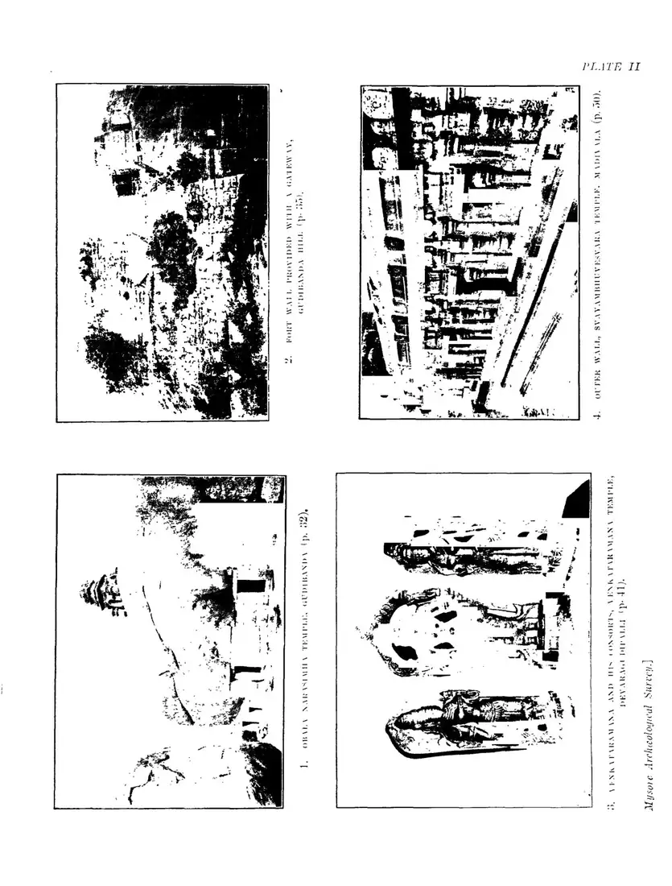
- OBADA NARASIMA TEMPLE, GUDIBANDA (p. 32)
- ROIT WALL PROVIDED WITH A GATEWAY, GUDIBANDA Hill (p. 351)
- AVENATARAMANA AND IIIS CONSORTS, AVENATARAMANA TEMPLE, DEVARAG IPPALAI (p. 41)
- OFTER WALL, SYATAMBHUVESTARA TEMPLE, MADIYALA (p. 50)
vestibule, a navaraṅga and a porch. The outer walls which had been constructed of brick have all mostly disappeared. The brick tower too is gone. The main image of the temple is missing.
Part III: Study of Ancient Monuments and Sites › Kolar DistrictGuđibaṇđe Hill
The fortified bill at Guđibande is locally called Surasadmagiri. The following are the several points of interest that we come across as
Points of interest
1. Āñjanēya temple.
2. Rock-cut steps.
3. First line of fortifications with bastion. There are rock-cut steps by the side of the fort walls.
4. Second line of fortifications provided with bastions.
5. A done or pool of water.
6. A cross wall connecting the main fort and built to protect the gateway mentioned below (No. 7).
7. Natural gateway formed by boulders.
The two lines of fortifications mentioned above are free from the use of mortar. They have also no parapets.
8. Bastion with which is connected the cross wall mentioned in No. 6.
9. A done or pool of water.
10. Gateway and third line of fortifications. The gateway and the walls have brick and mortar parapets above, which evidently seem to have been put up during the Mosiem period. The parapets are provided with musket holes and cannon platforms. The stone slabs used in the construction of this line of fort walls are neatly dressed and pointed with mortar. The gateway consists of six squares and the two rows of pillars belonging to it are all plain with cubical mouldings.
11. Krishṇa temple.—This temple is immediately behind the gateway described above and has become very much dilapidated. But it indicates that the gateway was originally a Hindu construction. The structure is very plain with its outer walls built of rubble in some places and of brick and mortar in others. It has a garbhagriha, an open vestibule and a front manṭapa. The four central pillars of the last are Dravidian in style and contain cubical and eight-sided mouldings. The ceilings and the doorway jambs are all plain. The main god of the temple is missing. The structure is said to belong to the period of Rāme Gauḍa, the brother-in-law of Baire Gauḍa, the Pāllegar of the place.
5
12. A group of about six doyes .
13. Grinding mill of stone, probably used for making gunpowder.
14. A bastion belonging to the third line of fortifications. It is provided with not only the usual musket holes and cannon platform but also with underground rooms entered by two narrow flights of steps. The underground rooms were perhaps used for storing gunpowder or as guard rooms.
15. A deserted and ruined temple.
16. Gateway with diđđi-bāgiln . Fourth line of fortifications provided with brick parapets, etc., like the third line.
17. Above the gateway is a bastion belonging to the fifth line of fortifications. The brick parapet above the bastion has the relief figure of a lotus having minute petals.
18. Another natural gateway formed by two large boulders. To the west of the left boulder is a saliy port leading down the hill on the west.
19. A cross wall connecting another line of fortifications.
20. A natural gateway formed by boulders.
21. Another gateway.
22. Old smithy beneath overhanging boulders to the left of the boulders mentioned above.
23. Another cross wall connecting a bastion.
24. An arched gateway having a Gaja-Lakshmī group on its lintel. In a cross wall to the left of this gateway on the outside is a small stone relievo figure of Hanumān. The presence of Hanumān and Gaja-Lakshmī indicates that the gateway is Hindu in construction. The arch indicates Muslim influence. Above the gateway is a high brick parapet which is undoubtedly of the Moslem period. Probably the construction is of the days of Hyder or Tipu.
25. A mantapa probably used as a powder magazine.
26. A bastion further up with a fort wall running westward.
27. A cross wall running at right angles to the bastion mentioned above and provided with two narrow openings at bottom which were probably used for ol serving the enemy.
28. Bastion with a row of powder magazines to the right. The parapet above the magazines is connected with a huge rocky boulder.
29. A flight of steps leading up to another fort wall. To the left of the steps are the ruins of an old structure which appears to have faced east and been provided with a low brick and mortar railing in front and an arched narrow window, also of brick and mortar, on the south. The structure was perhaps used as a chāvađi .
30. A done or pool of water to the north of the gateway mentioned in No. 24. The wall of the gateway is carried northwards and then is constructed in a curve so as to bound the outer margin of the pool: and further up it is connected with a huge boulder.
31. Fort wall built of large slabs and provided with a gateway (Pl. II, 2). Above there are battlements on one of which is carved the figure of a man's head. The slabs of the wall are joined one to another by grooves cut on their edges. No mortar is used. In front of the gateway there is a stone-built mantapa with Dravidian pillars. The eaves of this mantapa have a row of small hanging lotus buds. The fort wall, the mantapa and the gateway are all evidently Hindu in construction. On the inside of the gateway there is a mantapa supported on Dravidian pillars having the cubical and eight-sided mouldings.
32. Done. —The water of this done is said to be very deep. It is a perennial spring with good drinking water.
33. Rock-cut steps.
34. Granary.—The building is now used as a place for entertainments.
35. Fort wall which is in continuation of the wall mentioned under 31. The wall surrounds the huge central rock on top of the hill and on the rock are built the granary mentioned above (No. 34) and the temple mentioned below (No. 36).
36. Rāmēśvara temple.—This is a structure of the late Vijayanagar period consisting of a garbhagriha, a vestibule and a front mantapa with a pillar in front. The temple faces east. The outer walls are plain and the slabs are joined by grooves and mortar. The pillars of the front mantapa are Dravidian, having the usual cubical and other mouldings. On the cubical mouldings appear the relievo figures of Ganēśa, lion, Nandi, peacock, monkey, yāli, nāgabandha, linga, lady, etc. Only the central ceiling is deep and raised on two sets of corner stones with a low padma pendant in the centre. In the vestibule are kept rude small stone images of Ganēśa and Nandi. The linga in the main cell is small. The pillar in front of the temple is ornate, though carved of granite. On a carved cubical base rises a sixteen-fluted shaft which is surmounted successively by ornamental, cubical, wheel-shaped and lotus-shaped mouldings. The capitals have plantain bud hangings. Above the capital appears a square abacus weil carved on its four sides with downward dentil mouldings. The four corners of the base of the pillar have rearing lions while the facades of the base have the relievo figures of Sūrya on his seven-wheeled chariot (west). Nandi couching (north), Virabhadra (east) and Kannappa (south) kicking the linga. The plunth on which the pillar stands consists of three cornices of which the one at the top has the kîrtimukha ornamentation.
To the north of the temple is the Pārvatī shrinc which contains an image of the late Vijayanagar period. The image is like the Apītakuchāmbā and Girijāmbā images at Nandi.
Chandranātha Basti
Jaina Vestiges; Description
The village of Guđibaṇde appears to have been a prosperous Jaina settlement also. There are two principal bastis at the place and a hillock called Pāda Beṭta where the old Jaina monks are said to have been performing sanyasana .
Jaina vestiges. The Chandranātha basti is also known as the Chikka Basti and appears to date from about the Vijayanagar period judging from the pillars of the navaraṅga and of the mukha-maṅtapa. The structure consists of a square garbhagriha, a closed vestibule, a navaraṅga and a front manṭapa, the last with a pātālānkaṇa attached to it. The pātālānkaṇa is approached by a flight of steps flanked by elephants on either side. The main image in the garbhagriha is of white marble and in the seated posture. It is about a foot in height. Several metallic images are kept in the vestibule. They are all of the different Tîrthankaras. On the cubical mouldings of the four central pillars of the navaraṅga appear the relievo figures of a cow, a crescent, a peacock and a serpent, and several gods and goddesses. The central ceiling of the navaraṅga is deep and raised on four sets of corner stones with a relievo padma in the centre. On the cubical mouldings of the pillars of the mukha-maṅtapa appear the relievo figures of birds and animals. The four pillars of the pātālānkaṇa are however sixteen-fluted. A brick and mortar niche in the parapet above the pātālānkaṇa contains the stucco image of Chandranātha with his emblem, the crescent, on the pedestal.
Dođđa Basti
Older Basti; Description
This basti is to the north-west of the Chikka Basti and appears to be much older than the latter, though plain. It is raised on a basement consisting of two cornices of which the upper has the kîrtimukha ornamentation at intervals. Between the two cornices is a frieze depicting gods, animals and men in various attitudes. Among these may be noticed the following: a lion attacking a man (south), a yāli rider (north-west) and two wrestlers (north).
Older basti. The basti consists of a garbhagriha, a vestibule of three ankaṇas of which the side ones have been converted into cells and given doorways, a navaraṅga and a porch of three ankaṇas. The flight of steps leading to the porch is guarded by elephants.
The navaraṅga is a spacious hall, about 28' square, with four Dravidhian pillars in the middle, each of which has cubical mouldings bearing the figures of seated and standing Jaina saints, caparisoned horse, rosettes, lovers, nāgabandha, yāli, elephant, etc. The central ceiling is somewhat deep and is raised on two sets of corner stones. It has a low padma in the centre. The navaraṅga seems to have had a doorway on the south also originally.
Venkaṭaramaṇasvāmi Temple
Outer View; Garuđa Pillar; Images; Front Maṇṭapa and Pātālānkaṇa
The Venkaṭaramaṇasvāmi temple in the village is also a structure of the Vijaya-nagar period and consists of a garbhagriha, a vestibule, a navaraṅga and a front manṭapa with a pātālānkaṇa in front. The outer walls are raised on a basement consisting of two flat cornices in between which is a frieze of scalptures depicting in relief rosettes, padmas, snakes, matsya and so on. The eaves are straight-sided with the brick parapet above having a row of parrots. On the south parapet above the garbhagriha is the stucco representation of a very large seven-hooded serpent. Corresponding to this on the south-west side the parapet has the stucco representation of the god Ranganātha. The north parapet of the temple has also several interesting stucco groups among which may be mentioned a tiger attacking a boar. There is a low brick and mortar tower above the garbhagriha.
In front of the temple there is a tall monolithic pillar which appears to be very similar to the pillar in front of the Rāmēsvara temple on the hill, though it is perhaps less fine. The pillar is tapering and is set upon a basement consisting of three cornices of which the last from the bottom has been ornamented with kīrtimukhas alternating with figures of seated lions. The base of the pillar is carved on all the four sides with the figures of Garuḍa (west), Janārdana (north), standing Narasimha (east) and Hanumān treading on Akshayakumāra (south).
The main image of the god Śrīnivāsa in the garbhagriha is about 2' high with a stone tōraṇa. The god is four-handed with dāna, chakra, śankha and kaṭi. The garbhagriha ceiling is raised on four sets of corner stones with no carving in the middle. The ceiling of the vestibule is plain. In the vestibule are kept the images of the Śrī-vaishnava saints, Vishvaksēna and a warrior who is pointed out as Tirumangai Ālyār. The last image holds a drawn sword and a buckler in his hands and wears the kācha or loin cloth of a wrestler.
The central ceiling of the front mantapa has a padma pendant carved in its centre with figures of lizards on either side. The front row of the pillars in the mantapa are Dravidhian in workmanship with figures on their cubical mouldings and with
Front mantapa and patalankana.
plantain bud hangings. The four pillars of the pātālānkaṇa have square bases and sixteen-fluted shafts with an ornamental band in the middle of each shaft. These pillars have also the plantain bud capitals.
The mahādvāra in front of the temple appears also to belong to the same period as the temple. The doorway of the mahādvāra is guarded by figures of female deities standing on yālis from whose trunks issue ornamental creeper scrolls which are carried on the lintel of the doorway and terminate in a kīrtimukha. On the outer walls of the mahādvāra are the relievo figures of a camel, a dancing group, fighting tuskers, a naked lady sitting in an obscene posture and a fish and an elephant facing each other. The significance of the last representation is not known.
Mahādvāra
Īšvara Temple
The Ēsvara temple of the village is situated at a little distance to the north of the Venkaṭaramaṇa temple. It is a structure of more recent times with its outer walls built of size stones and with pillars and ceilings of no architectural merit. The temple consists of a row of three cells containing from right to left: Gaṇēśa, linga and Pārvatī. It is said that the temple is of the Pāllegār period and that the front manṭapa was put up recently. The temple is not important from the archæological point of view.
Part III: Study of Ancient Monuments and Sites › Kolar DistrictDēvaraguđipalli
The village of Dēvaraguđipalli is situated about two miles to the south-east of Bāgepalli. The ancient name of the place was Gađida. The name Gađidampatṇa was also used. It is said that the place is one of the three ancient towns which were known to have been existing in olden times.
Venkaṭaramaṇasvāmi Temple
In the inscriptions Nos. 15 and 16, Bāgepalli Taluk, Epigraphia Carnatica, Vol. X, Kolar District, the god of this temple is called Prasanna Šrīnivāsa and Tiruvēngađanātha. The temple is a large structure built in the Dravidian style of architecture. But the prākāra is a recent structure like the pillared open manṭapa in front of the temple. The original temple inside the prākāra consists of a garbhagriha, two vestibules of which the outer is open, and a navaranga. According to the inscriptions it was built in 1391 A.D. by Tirumala Nāyaka, grandson of Teppada Nāgaṇna Vođeyar during the time of the Vijayanagar King Harihararāya. The
Date.
sculptors who are said in the inscriptions to have constructed the temple were Nāyonde Kāmōja and Bairōja.
Outer View
Navaraṇga; Vestibules
No heading in the body: this section starts at its printed page (39).
The outer walls of the temple are raised on a basement consisting of three cornices, the first of which from the bottom is octagonal, the second square and the third square with dentil drops. The walls of the navaraṅga are relieved, at intervals, by right-angled pilasters bearing creepers and the loaf and biscuit-shaped ornamentation as in the 14th century structures of the South Mysore school. The outer walls of the garbhagriha and vestibule are also relieved by similar pilasters; but the pilasters here have no loaf and biscuit-shaped mouldings. They have instead the brackets of the imitation ribbed pattern and vertical scroll ornamentation on their shafts.
On the north and south outer walls of the navaraṅga there are niches bearing boat-shaped turrets which are raised on eaves-shaped cornices having the kirtimukha and creeper ornamentation. The south niche bears a perforated window in the shape of a creeper scroll, while the north niche is empty. In the panels between the pilasters on the outer walls appear relievo figures just above the basement cornices. Starting from the south-east and proceeding clockwise they are as follows :—
1. Trivikrama.
2. Vāmana—A peculiar figure wearing beard and with hunch back. The figure wears a loin cloth or dutti like a Brahmachāri and an Yajñōpavīta. His hair is tied in a knot above his head and he holds in his left hand an umbrella and a daṇda. In his left arm pit appears a palm leaf manuscript. His right hand is stretched forward in the attitude of begging.
3. King Bali seated in state on his royal couch with his queen standing in front of him and pouring water from a vessel. The scene shows the act of making the gift.
South—
4. Vāli and Sugrīva engaged in a fight.
5. Figure of a warrior holding a drawn sword.
6. A marching lion.
7. An archer wearing kiriṭa.
8. A lady in labour. Two ladies attend on her. The pregnant lady is in standing posture.
9. A lady—two-handed—holding lotus in the left.
10. Janārdana with abhaya. chakra, śankha and gadā.
11. Lakshūni-Nārāyaṇa.
12. Fish (Matsya).
13. Kāliya-mardana.
West—
14. Hanumān.
15. An obscene group on the garbhagriha outer wall.
North—
16. Yōgā-Narasimha. A Matsya above.
17. Kneeling Garuđa.
18. Kūrma (Tortoise).
19. Obscene group.
20. Ananta Padmanābha.
21. An eight-handed Ugra-Narasimha.
22. Lakshmī-Narasimha.
23. Sarasvatī.
24. A lady attendant.
25. Seated Vishnu in sukhāsana. The right lower hand rests freely on the raised right knee, while the left lower hand is in the abhaya pose. In the back hands are held chakra and śankha.
North-east—
26. Rāma and Lakshmaṇa.
27. Four-handed Vēnugōpāla.
28. Hayagrīva.
The eaves above the temple have a sharp curve and are relieved at intervals by kirtimukhas. A frieze of sea horses appears above the eaves of the navaraṅga. It may be mentioned here that the sea-horses appear in temples at Rāghavāpura, Terakaṇāmbi, etc., in South Mysore.
The navaraṅga doorway is guarded by a pair of dvārapāla figures which are dwarfish in stature. On the lintel appears a Ga,alaksmī group. The corner pilasters inside the navaraṅga hall have capitals with plantain bud hangings. In the centre of the hall there are four Draviđian pillars which have the usual cubical and eight-sided mouldings. On the cubical mouldings are carved the relievo figures of Hanumān in the striking attitude, an elephant, ganđabhērunda, a monkey, yāli, lion, kukkuṭa, cow and calf, a lady at toilet, a trunked yāli, man and tiger, two lions standing back to back with a common head shaped like a kirtimukha arch, kalaśa, caparisoned horse, a warrior, an obscene figure, dancing ladies, peacock, padma medallions, etc.
The central ceiing of the navaraṅga is raised on two sets of corner stones with a padma pendant in the centre surrounded by low relievo figures of the eight Dikpālakas. The lower set of the corner stones has the carvings of padmas and wheeling acrobats.
On either side of the open outer vestibule are two Draviđian pilasters with their capitals having the plantain bud hangings. The ceiling of the vestibule has in the middle a padma relief. The doorway of the inner vestibule has the figures of dwarfish dvāra-
Vestibules.
pālas on either side and the scroll, bead and padma ornamentation on the jambs and lintel. There is also a Gaja-Lakshmī group on the lintel.
The ceiling of the inner vestibule has also a padma in the middle ; but unlike the padma of the outer vestibule ceiling, the padma here is inset in a square. The ceiling of the garbhagriha is raised on two sets of corner stones and has also a padma.
The main god of the temple stands on a broad Garuda pedestal with his two consorts standing on either side of him (Pl. II, 3). Each
Images in garbhagrīha
Part III: Study of Ancient Monuments and Sites › Kolar DistrictBāgepalli
Narasimhasvāmi Temple
General Description
The Narasimhasvāmi tempie in the village of Bāgepalli is a late Vijayanagar period structure having no architectural importance. It
General description. consists of a garbhagriha, a vestibule and a front manṭapa which is open. The pillar in front of the temple is about 18' high including the plinth on which it is set up.
The outer walls of the temple are raised on a basement consisting of two square cornices between which is carved a long panel representing low relievo figures of animals, birds and men. On the outer walls appear the figures of elephants, hons and obscene groups. The pillars of the manṭapa are Dravidhian in style and have, on their cubical mouldings, relief figures of gods, men and animals.
Part III: Study of Ancient Monuments and Sites › Kolar DistrictSādali
Situation
Sādali is a roadside village situated about 18 miles to the south-east of Bāgepalli. The old temples at the place which are not very far removed from one another are situated in the fields near the roadside.
6
Īšvara Temple
The Íšvara temple is an old structure of about the 14th century built in the Draviđian style. It consists of a garbhagriha, a vestibule and a navaranga. On the south there is a fallen mantapa. The outer view of the temple does not call for any special remark. The basement has plain cornices square in shape. The navaranga doorway is guarded by dvārapalas, while the lintel has the figure of Gaṇēśa. The jambs are ornamented with scroll and bead work. The pillars inside the navaranga are all Draviđian in style having ribbed mouldings on the brackets as at Terakaṇāmbi and elsewhere in South Mysore. On the cubical mouldings of the pillars appear the figures of several gods and men.
Chennakēšava Temple
Outer View; Inner View
The Chennakēśava temple is similar to the temple at Dēvaraguđipalli in workmanship. The mahādvāra in front of the structure is rudely constructed. The temple consists of a garbhagriha, a vestibule, a navaranga and a porch. The outer walls are built on a basement, about 5½' high, consisting of five cornices which are as follows: square, octagonal, square, and square with dentil drops. The walls are relieved by right-angled pilasters. Among the images on the walls may be mentioned the following: an old man, a man and a lady, a dancing couple, Rāma and Lakshmaṇa seated with Hanumān in front, Rāma and Lakshmaṇa standing, Šēshaśāyi, Vēnugōpāla, Ugra-Narasimha, Vidyādharī and the daśāvatāras, like the natural Matsya, Kūrma, Varāha. Narasimha, bearded Vāmana, Bali with consorts on throne and Trivikrama; Vāli and Sugrīva, Garuđa. Āṇjaneya, Yāli and elephant, Buddha, a Sukhāsīna-mūrti, Matsya attacked by a warrior or demon (Hiranyāksha ?), makara, lion, wrestlers, deer, etc. The images on the outer walls of the garbhagriha and vestibule have peeled off. The walls have niches bearing boat-shaped turrets. The eaves are sharp and ornamented with kīrtimukhas at intervals. Above the eaves appears a frieze of sea-horses.
The porch measures two ankaṇas by one. On the cubical mouldings of the pillars are carved the figures of Ugra-Narasimha, Janārdana, seated lion, Vēnugōpāla, dancers, Hanumān, Lakshmī-Nārāyana, Sarasvatī, Vishnu, etc.
The navaranga doorway is guarded by dvārapāla figures. On the lintel appears a Gaja-Lakshmī group. The jambs are ornamented with scroll and bead work. The navaranga pillars are Draviđian in style with the nāgabandha and other designs appearing on the cubical mouldings. The central ceiling of the navaranga is raised on two sets of corner stones.
The vestibule is a double one with the outer ankaṇa being open. The doorway of the inner ankaṇa is guarded by dvārapālas and has the image of Chennakēśava on the lintel. The jambs are designed like those of the navaraṅga doorway with scroll and bead work. The main image of the temple is missing.
Part III: Study of Ancient Monuments and Sites › Kolar DistrictNāchipalli
Hero stones
No heading in the body: this section starts at its printed page (43).
Nāchipalli is a small village which has now become a suburb of Robertsonpet on the north-east. To the north of the village is a dry field belonging to one Mr. Venkaṭarāmiah where stands a row of more than a dozen vīragals bearing sculptures of dead heroes and their sati wives. Some of the heroes are on horse-back while at least one of them has a royal umbrella held above, with a woman following him. About half a dozen vīragals have shrines protecting them with side slabs and top slabs. On three of these wall slabs inscriptions in Grantha characters of about the 13th century were found. One of these shrines with its top slab remaining intact might be mistaken for a doimen. It is definitely different from anything prehistoric.
Pārāṇdapalli— PAGE
Prehistoric Cromlechs
No heading in the body: this section starts at its printed page (43).
Following the pipe line path towards Bētamaṅgala, and at a distance of about 2 mies from Robertsonpet T. B., we reach Pārāndapalli. Prehistoric cromlechs. which is a small village situated in the midst of a number of rocky heights. To the east of the village about 2 miles away (where there is the 7/4th furlong stone from Bētamaṅgala) on the top of a rocky ridge and on its sides we find more than a hundred cromlechs with the rings of stones appearing just above the ground (Pl. III, 1). The diameters of these rings vary from about 40' to 7'. These definitely prehistoric structures close to the gold mining area deserve to be excavated and studied. With these we may compare the cromlechs discovered near Hungunda, about 7 miles from here.
Part III: Study of Ancient Monuments and Sites › Kolar DistrictBētamangala
Antiquity of the place and Temples
No heading in the body: this section starts at its printed page (43).
Bētamaṅgala is the headquarters of a hobli in the Bowringpet Taluk. It is situated at a distance of about 8 miles from the Kolar Gold Fields. The place appears to have been one of great antiquity. In the inscriptions it is called Vijayāditya Maṅgala of which the modern name is said to be a corruption. The earliest inscription at the place is Bowringpet 4 which is inscribed on the cetagonal west basement cornice of the garbhagriha of the Vijayēndra temple. This inscription which is ascribed to the 10th century (c. 950 A.D.) refers to the restoration of the tank of the village. It does not refer to the construction of the temple. But there is no doubt that the cornice on which it is inscribed forms part of the original structure and the existence of the inscription definitely proves that the temple is at least of the same period as that of the inscription if not earlier. The object of inscribing the inscription on a cornice belonging to the temple seems to have been mainly a religious one, that is, to invoke the god Vijayēndra as a witness to the grant made in connection with the restoration of the tank. Thus the temple and the tank both appear to be older than the inscription. It is possible to assign the temple to circa 900 A.D., though there is reason to believe that the main image existing now in the garbhagriha is by far later than the inscription itself, belonging perhaps to the 16th or 17th century.
According to the town-planning that obtained during the period there must have been, at some distance to the north-east of the Vishnu temple, an Ēśvara temple near which existed the tank of the place. The tank of the village is already mentioned. Near this there is an Ēśvara temple which is of about the 14th century. But it is possible that near this spot existed an older Śiva temple. Indeed there are to be found some old sculptures of the Chōļa and earlier periods nearby and some of these are set up now in a recent structure by the side of the Arkēsvara temple. There are also some sculptures, a linga and a Nandi bull set up in an Ēśvara shrine immediately to the south of the Vijayēndra temple and these are said to have been brought from a ruined Śiva temple that once stood near the present Arkēśvara temple beside the tank. Immediately to the north of the Arkēśvara temple there is a manṭapa having pillars of the Noṇavinakere type, which in M. A. R. 1939, p. 56, have been assigned to the Gaṅga period. In the Mysore Gazetteer, Vol. V, p. 298, the place is said to have been under the sway of a Bāṇa king named Vijayāditya and to have probably derived its name from him. If that is so, the name of the temple, viz. , Vijayēndra, suggests that the original Vishnu temple also was built by him. It is a pity that there is no inscription which records the construction of the temple. At Āvaṇi, however, there is an inscription (No. 38, Mulbāgal, Kolar District, E. C., X) on a pillar outside the southern gateway recording that the Noļamba queen Dēvabbarasi got constructed a lake called Dēvable-samudra and a Vishnu shrine at Horavangala. It is suggested in M.A.R. 1935, p. 50, that Horavangala may be Bētamaṅgala. But the inscription does not mention the name of Vijayēndra.
Vijayēndrasvāmi Temple
Main God
History of temple; 10th century structure; 12th century structure; 14th century extension; 15th century extension; 16th century extension; Recent structure
No heading in the body: this section starts at its printed page (44).
The main god of the temple is called Vijayēndra locally. In the inscriptions No. 7 (b) Bowringpet of 1275 A.D. and No. 6 Bowringpet of 1288 A.D. the god is called Vīrĵīrunda Perumāļ [ cp. the name given in an inscription to the god Kĵrishṇa at Toṇṇūr (M.A.R. 1939, p. 29)]. In inscription No. Bowringpet 8 of 1167 A.D. the god is given yet another name—Maṇavāļālyār. In the Epigraphia Carnatica of the
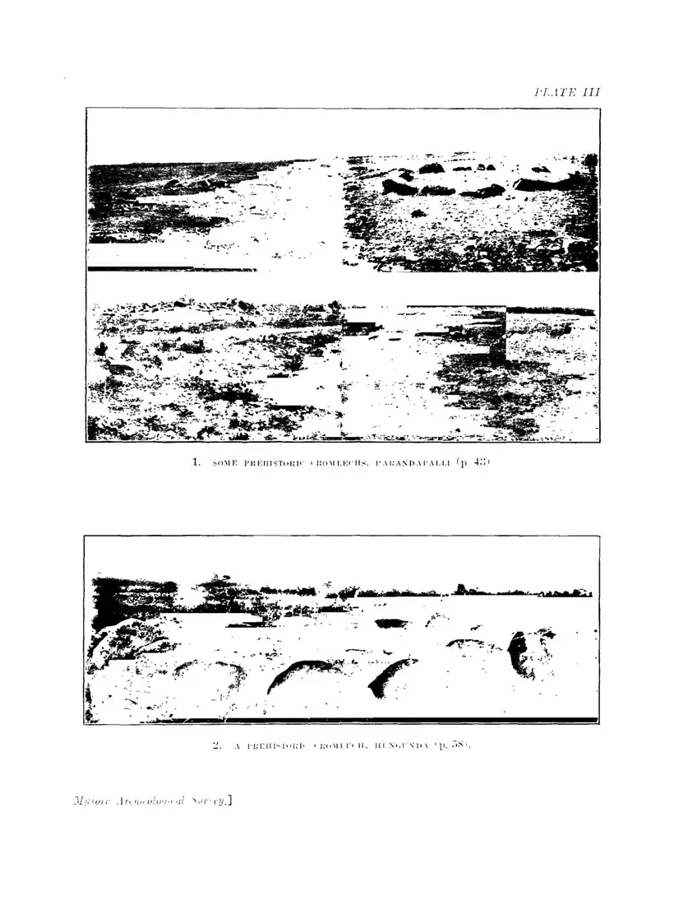
- SOME PREHISTORIC CROMLECHS. PARANDAPALLI (p 43)
- A PREHISTORIC CROMLECH. HUNGUNDA (p. 584)
Kōlār District, Vol. X, the temple is called that of Vijayanangasvāmi—probably due to the fact that there are actually two shrines in the temple which are respectively dedicated to Vijayēndra and Raṅganātha. Whatever the name of the god and the date of the consecration of the original image, it is probable that the present main image does not belong to the 10th century A.D. It is in all probability an image of the 16th or even the 17th century A.D. inasmuch as it happens to wear a Srīvaishnava caste-mark on its forehead and there is no image indeed of the 10th century so far discovered anywhere in South India that is definitely known to be wearing such a mark. The workmanship of the image is, however, extraordinarily good and, but for the existence of the caste-mark, could well have been ascribed to an earlier period.
Inscriptions prove that the place came under the sway of the Bāṇas, the Nolāmba-Pallavas, the Chōlās, Hoysalās and the Vijayanagar rulers successively. They also indicate that the temple received extensions during these periods. The temple, as it is, consists of a garbhagriha, a closed vestibule, a navaraṅga with the Gōvindarāja shrine to the left, an ardhamanṭapa enshrining the images of the Ālvārs, a mukhamanṭapa and a pātālānkaṇa. Structurally, too, the different periods of extensions are well indicated particularly by the basement of each of the different compartments of the temple.
The original structure appears to have consisted of the garbhagriha only with an open porch in front (c. 900 A.D.). The stone-built basement of this portion consists of three cornices of which the middle one is octagonal and the others are square. Between the octagonal cornice and the one rising above it, there is an inner cornice which is short and relieved by minute right-angled pilasters. On the north there is a stone sōma-sūtra. The outer walls of the garbhagriha are built of brick as at Narasamangala in the Mysore District and are relieved by slender right-angled pilasters bearing the loaf and biscuit-shaped mouldings. There are empty niches on the three sides of the garbhagriha on the outside. Of these the one on the west is surmounted by a horse-shoe-shaped turret and the pilasters bearing this turret are round and have wheel mouldings. The south-western corner pilaster bears on its abacus a two-handed stucco figure, thus suggesting that there might have been similar stucco sculptures on the other corner pilasters also. Below the eaves on the back outer wall of the garbhagriha there is a frieze of sea-horses constructed of brick and mortar. This frieze is missing on the other side walls of the garbhagriha. The brick tower above the garbhagriha was in all probability constructed during the Pāllegār days.
The front porch of the original temple seems to have been open but wailed in when the navaraṅga was added. The two front pillars which are now mostly imbedded in the wall and the two pilasters on either side of the garbhagriha doorway form one group with their ribbed brackets which are generally met with in the Chōla and earlier periods. Each of these pillars stands on a base which has also ribbed mouldings. The base is short and square and the shaft has the eight-sided, sixteen-fluted and vase mouldings. Below the vase is an ornamental moulding consisting of two horizontal ribbed bands with garland hangings in low relief. Above this band appears the wheel moulding which in turn is surmounted by the ribbed brackets. The garbhagriha doorway is plain. The ceiling of the porch (that is, the present vestibule) has been carved with a padma in very high relief. The garbhagriha is about 7'-7" square with an octagonal ceiling having in bold relief a padma in its centre. The petals of the padma are inset in a circle.
The navaranga appears to have been constructed between 1167 A. D. (Bowringpet 8) and 1275 A. D. [Bowringpet 7 (b)]. The outer 12th century extension . walls are plain and raised on a basement which has been worked in imitation of the older ones. The stone eaves are rude with low reliefo kīrtimukhas at intervals. Inside the navaranga the central pillars are worked similar to those of the porch; but their brackets are quite different and bear no ribbed ornamentation. Such pillars are often met with in the structures of the 12th and 13th centuries. The ceilings of the navaranga are all plain except for the central one which has the carving of a padma inset in a circle.
The two dvārapāla figures guarding the navaranga doorway are undoubtedly of the Vijayanagara period. In the north-western corner of the hall is built in recent times a shrine in brick and mortar to enshrine the goddess Vijayalakshmī.
The Gōvindarāja shrine to the north of the hall and the ardhamanṭapa in front of the navaranga both form one group. Their outer basement 14th century extension . cornices prove this point: they are so different from the basement cornices of the navaranga. They consist of two plain and square cornices with a row of plain slabs set on edges between them. On the north outer wall of the ardhamanṭapa there is the figure of a fish in relief. The image of Gōvindarāja (Pl. VII, 1) seems sculpturally to belong to the 14th century. This date may be tentatively assigned for the construction of the shrine and the ardhamanṭapa. The workmanship of the image of Gōvindarāja is poor. He lies on Ādiśēsha attended by his consorts whose images are also rudely sculptured.
The next stage of additions to the temple consists of the construction of the mukhamanṭapa which originally appears to have been open, 15th century extension . but to have been walled in in recent times with size stones. The Dravidiau pillars of the mukhamanṭapa have brackets bearing the imitation ribbed brackets of possibly the 15th century.
The last stage of extension is the pātālānkaṇa with its front porch probably assignable to the 16th century. The porch pillars are 16th century extension. Draviđian with plain brackets. There is a fragmentary inscription of the time of Krishṇadēva Rāya in front of the temple. Its existence indicates that the pātālānkaṇa and the porch were both constructed in his times. The two sets of the dvārapāla figures kept in the mukhamaṇtapa and the ardhamaṇtapa as also the images of the Ālīvārs in the ardhamaṇtapa seem to belong to the Vijayanagar period.
In front of the temple is a rude late Garuda shrine of no architectural value. The Bali-piṭha behind it seems, however, to belong to the 14th century. To the south-west of the pillar is an uyyāle-kamba.
The present main image (Pl. IV, 1) is perhaps assignable to the period during which the pātālānkaṇa and the porch were added. It is not known what became of the original image. The carving, however, of the present image is, as already said, extraordinarily good, though the same cannot be said of the images of his consorts. The god is seated on a lion pedestal with his left leg placed on the ground and the right knee folded up on the seat. On the left corner of the pedestal there is a maned lion seated on its haunches. To the right side of the pedestal there is another maned lion but bigger than its pair and having a longer tail. The tōraṇa behind the god rises gracefully to a little above the tiara of the god. Though the drapery and ornaments of the god are worked out in detail with minute skill and though the folds on the abdomen are carved in a very impressive way, the broad fingers of the hands and feet look rather unnatural and too broad to do credit to the sculptor. In other respects, however, the image is an example of the high standard of art that prevailed during the period.
To the south of the Vijayēndra temple is a structure which is said to have once served as the kalyāṇa-maṇtapa but to have been walled up recently and converted into a temple to enshrine the old Arkēśvara linga brought from the now disappeared Arkēśvara temple. The rude eaves and the Draviđian pillars suggest that it was a structure of about the 16th century. In a walled up cell within the temple the old linga is set up. In a cell to its left is enshrined an image of Pārvatī, probably of the Vijayanagar period. In another cell to the right is set up an image of Shaṇmukha which appears to be of the Chōla period, probably brought from the disappeared Arkēśvara temple. The images of Sūrya-Nārāyaṇa, Gaṇēśa, Bhairava and Virabhadra set up against the walls inside the temple seem also to have been brought from the Arkēśvara temple. The image of the Nandi bull in front of the shrine reminds us of the one at Narasamangala in the Mysore District, though it is not as fine.
Part III: Study of Ancient Monuments and Sites › Kolar District › BētamangalaArkēśvara Temple
The old temple of Arkēšvara near the tank of the village is no longer in existence. The present temple near the spot seems to belong to the 14th century. The original temple seems to have faced south as indicated by the uyŹāle-kamba.
History and general description
By the side of the temple is a recent structure in which are enshrined some old sculptures: e.g. , the Sōmēšvara liŹga, the images of the Saptamātrikas, the image of Bhairava and ViŹādhāri Virabhadra. These images appear to belong to the Chōla times. Among them the image of Vaishṇavī has a human-faced and bird-bodied Garuđa which is rather peculiar. (Pl. IV, 2).
Part III: Study of Ancient Monuments and Sites › Kolar DistrictOther temples in the village
Hanu nān Temple; Dharmadēva Temple
There are two Hanumān temples in the village of which the one to the south-west of the Vijayēndra temple is a Draviđian structure.
Hanuman temple. enshrining a colossal relievo figure of ĀŹjanēya, about 12' high, in the striking attitude. The figure is represented as treading on Akshayakumāra and shows good workmanship. It is possible that the figure belongs to the 16th century.
The Dharmadēva temple standing a little distance to the south of the Vijayēndra temple is a modern structure of no architectural importunce. It contains several painted wooden images. It is said that the Karaga festival is celebrated in the temple once a year.
Mađivāla
Situation
Mađivāla is a village situated about half a mile to the south-west of Kyāsam-balli which is the headquarters of a hobli in the Bowring-pet Taluk of the Kolar District. During the period of the Chōla governor IŹavaŹji Vāsudēvarāya (13th century) it
Situation.
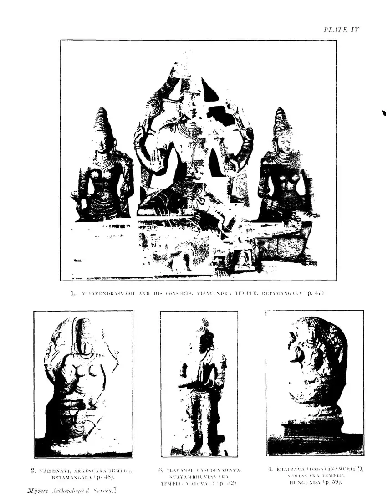
- VIHAVENDRASVAMI AND HIS CONSORIS. VIHAYENDRA TEMPLE. BETAMANGALA (p. 47)
- VAISHNAVI, ARKESVARA TEMPLE. BETAMANGALA (p. 48)
- ILAVANJI VASUDEVARAYA. SVAYAMBHUVLSVARA TEMPLE. MADIVAI A (p. 52)
- BHAIRAVA (DAKSHINAMURI?), SOMISVARA TEMPLE. HUNGUNDA (p. 59)
belonged to the Muļuvāyi kingdom in Iļavañji-nāđu of the Nigariļi Sōļamaņdalam. The chief temple at the place is that of Svayambhuvēšvara which is an ornate structure built in many respects like the Sōmēšvara temple at Kuruđumale.
Svayambhuvēšvara Temple
History; General Description; Porches of Mahādvāra; Description of main temple; Outer Walls; Eaves; Tower; Navaraṅga; Vestibules and Garbhagrīha; Images
Of the many inscriptions engraved on the walls, basement cornices and pillars of the temple, the earliest, namely, Bowringpet 35 ( f ) has been ascribed to c. 1200 A.D. though it does not in fact mention any date. The earliest inscription that gives a date is Bowringpet 35 ( b ) of 1-28 A.D. which is to be found on the right side of the main doorway of the temple. It says that during the rule of Kuttāđun Dēvan, son of Jayaņgoņda Sōļa Iļavañjiya Rāyan alius Mārāļvān, two servants of the ruler made certain grants to the god. Thus the construction of the temple and the consecration of the linga are not mentioned in any of the earliest dated inscriptions. In the absence of such inscriptions therefore we may ascribe the temple to the period of Iļavañji Rāya, grandfather of Iļavañji Vāsudēva Rāya, the builder of the Sōmēšvara temple at Kuruđumale. In the workmanship of the outer walls, the cornices, the pillars and pilasters, there is so close a resemblance between this temple and the Sōmēšvara temple at Kuruđumale that it is very likely that Iļavañji Vāsudēva Rāya followed the architectural traditions current during his grandfather's days while building the Sōmēšvara temple at Kurudumale. Some of the architectural features met with in the tempes of South Mysore as, for instance, the one at Rāghavāpura, are also to be found here.
Constructed in about 1200 A. D. the Svayambhuvēšvara temple belonging to the Kēšavan-paļļam of Iļavañji-nāđu continued to be endowed with grants during the late Hoysaļa and Vijayanagar periods. Grants of land at the time of the Hoysaļa king Rāmanātha are mentioned in the inscriptions Nos. Bowringpet 23, 25, 27, 33, etc. A gift made to the temple at the time of the Vijayanagar king Malli-kārjuna-mahārāya is mentioned in inscription No. Bowringpet 18. Another gift made during the period of Virūpāksha (1472 A.D.) is mentioned in Bowringpet 19.
The temple faces east and consists of a garbhagriha, a double vestibule (of which the inner ankaṇa is closed and the outer one open), and a navaranga having in its central ankaṇa four Dravidian pillars (Pl. VI, 1). All round the temple runs a pillared verandah which unfortunately has in many places collapsed and in others disappeared completely. In front of the temple there is a mahādvāra having a porch on the inner side and another porch on the outer side. The inner porch is borne on four pillars which, however, are different from those met with in the Porches of mahadvara. Kuruđumale group of temples. Each of these pillars rises on a square base and has a sixteen-fluted shaft surmounted
7 by indented cornice mouldings ornamented with hanging rudrāksha beads below them. At the base of the shaft is a vertical band of flutes while above the cornice mouldings already mentioned appears a vase moulding which is surmounted by what seems to be a trident or the 'Triratna' symbol. Above the vase appears a wheel moulding ornamented by vertical flutes. The abacus is square and is carved with the lotus design on its undersurface. The base of each pillar has its four faces carved with low reliefo figures. Among the figures, there are an eight-handed dancing Śiva, an eight-handed standing Ardhanārīsvara, a seated devotee and a seated four-handed Gaṇapati.
The pillars of the outer porch of the mahādvāra are Dravidhian in style with cubical and eight-sided mouldings. The capitals of these pillars have the imitation ribbed ornamentation. The pillars of the cloistered prākāra are all plain having each a cubical base, an eight-sided shaft and another cubical moulding resembling the base. It is not known when the cloistered prākāra was constructed. Possibly the mahādvāra and the prākāra were both built during the 14th century.
The tall pillar in front of the temple and the four-pillared Nandi pavilion are perhaps the contributions of the Vijayanagar period. Similarly the low-roofed plain structure enshrining a rude image of Pārvatī may have also been the contribution of the Vijayanagar or even later period.
The main temple which consists, as already stated, of a garbhagriha, a double vestibule and a navaraṅga has been raised on a basement consisting of five cornices as follows:—
Description of main temple.
(1) A cornice bearing the lotus ornamentation.
(2) A square cornice.
(3) An octagonal cornice with an inner cornice, above and below, bearing the lotus design.
(4) Square with an inner cornice of plain pilasters below and above.
(5) Square with lotus ornamentation below.
These cornices run uniformly all round the temple.
The outer walls (Pl. II, 4) are relieved by right-angled, eight-sided and turret-bearing round pilasters. The round pilasters issue out of kalaśas. There are also on the outer walls broad and empty niches bearing turrets. These turrets are boat-shaped and surmount an eaves-shaped cornice moulding relieved at intervals by kīrtimukhas and bearing a frieze of sea-horses above it. In the middle of ach boat-shaped turret is a kīrtimukha arch having under it sometimes a seated lion (south-east, south), a dancing figure (north-east, north), a seated figure with folded hands (north) and mostly the figure of seated Gaṇeśa. The figure of Gaṇeśa appears also on the turrets borne by the round pilasters issuing out of kalaśas. All the pilasters are decorated above their shafts with the loaf- and biscuit-shaped mouldings and are surmounted by capitals having plantain bud hangings as at Kaivāra and elsewhere in the mediaeval eastern school of Mysore sculpture. The cornices, the pilasters, the turrets and the capitals together with the vertical designs appearing here and there on the square base of the pilasters and on either side of the kalašas heighten the effect of light and shade forming the main feature of the ornamentation of this temple.
The navaranga has two niches on its eastern outer wall and three on its southern and northern outer walls. The sukhanāsi has one niche on the south outer wall and another on its northern outer wall. The garbhagrīha has a niche on its south wall, another on its north wall and a third on its west wall.
The eaves are sharp and boat-shaped and run uniformly all round the temple. They are relieved at intervals by kīrtimukha ornamentation embellished on either side with variegated creeper and scroll work and enshrining figures of human heads mostly and sometimes those of differently shaped lotuses. of swans, Gapēša, linga, Nandi, turreted small niches, Yōgā-Narasimha, kalaša, etc.
Above the eaves runs all round the temple a frieze of sea-horses. The temple has no parapet. The tower which is of brick and mortar does not appear to be very late in date, though it is difficult to believe that it is of the same date as the temple. Tentatively we may assign it to the fifteenth century. It consists of a tier of boat-shaped and square-shaped turrets on which rises an eaves-shaped cornice surmounted by a large square-shaped and high necked āmalaka with the figures of Yakshas (resembling Atlantas) and seated images of Šiva (south), Narasimha (west), Brahma (north) and Šiva (? east) on the facades. The cornice above the first tier has at the corners seated figures of bulls.
The jambs of the navaranga doorway have vertical bands ornamented with lotus, scroll and creeper. These bands are carried over the lintel also. In the middle of the lintel is the representation of a kīrtimukha. The navaranga hall is large, being about 25 ft. square. The ceilings consist of plain slabs and are divided by beams, as at the Sōmēšvara temple, Kuruđumale, into four compartments only, being arranged svastikawise round the central ankaṇa. Thus the east and south-east ankaṇas have one ceiling, the south and south-west have another, the west and north-west have a third and the north and the north-east have a fourth. The central ceiling is deep and large and raised on two sets of corner stones having, like the central slab of the ceiling, relievo carvings of lotuses inset in squares on their undersurfaces.
The navaranga pillars and pilasters are all Draviđian in type as at Kuruđumale and elsewhere and have the cubical, the eight-sided and the sixteen-fluted mouldings on the shafts. Their capitals are provided with plantain bud hangings. On the cubical mouldings of the pillars appear the relievo figures of the following :—
Lingas with lady worshippers; Mārkaṇdēya and the linga; Bēđar Kaṇṇappa and the linga; Umamahēśvara, Vishṇu, Nandi, cow and linga, a sage, wheeling acrobats, seated lion, four-handed Gaṇēśa standing, ridden horse. ridden elephant, dancing figures, marching lion, wrestlers (north-west pillar), dancing Gaṇēśa, seated Lakshmī, Shaṇmukha riding a peacock but having only one head, Vālī and Sugrīva fighting, Śrīnivāsa, etc.
The cubical mouldings of the pillars on either side of the outer open vestibule Vestibules and garbhagriha. are carved with the figures of Gaṇēśa, Vēṇugōpāla, Mahishāsuramardinī (in the Chōla style), an elephant attacked by a lion, etc.
The doorway of the inner vestibule has the creeper and floral ornamentation on the jambs and an eaves-shaped cornice above the lintel. The ceiling of the inner vestibule has the representation of a padma inset in a circle. The doorway of the garbhagriha has pilasters on either side whose eight-sided shafts rise on cubical bases ornamented with scroll work as in the case of the pilasters on the outer walls of the temple. The ceiling of the garbhagriha is raised on two sets of corner stones and has the carving of a padma in the centre. The main linga of the temple is about 2 feet high.
In the outer vestibule of the temple are kept the stone images of Bhaurava, and Dakshiṇāmūrti. Both these images show a vigorous attitude though they are carved of hard granite. They are both relievo figures and belong, in all probability, to some older temple. They appear to hail from the Chōla times. In the navaraṇga are kept the following images :—
1. A lady devotee standing with folded hands.
2. Another lady devotee ornamented with rudrāksha necklace and armlets and wristlets. She is seated in padmāsana and in the attitude of dhyāna holding a rudrāksha garland in her hands.
3. A good standing figure of a chief looking very much like the image of Iļavañji Vāsudēva Rāya at Kuruđumale and Āvaṇi. He is bearded and has his hands folded. Perhaps it is another image of Vāsudēva Rāya himself. His wife and daughter are said in the inscriptions to have endowed the temple with grants.
4. A seated male figure with rudrāksha garlands like No. 2 above.
5. Image of a two-handed and standing lady with her right hand in the abhaya-mudrā and her left hand placed on her kaṭi. She wears her loin cloth like a daṭti and on the garment the folds are boldly shown. Her breasts are bare. She wears necklaces, armlets and wristlets as also ear-pendants. The figure is in high relief and about 1\frac{1}{2} feet in height. It appears to have been brought from elsewhere and looks very much older than the temple. It is not known whom it represents.
6. Dancing figure of a two-handed lady. There is a male figure to her right and a boar-faced anthropoid figure to her left. On either side below her are the figures of the sun (right) and boar (left). Perhaps it is a figure of dancing Durgā (?). This image too seems to have been brought from elsewhere and looks older than the temple.
7. A seated Gaṇēsa—rude.
The tall pillar in front of the temple is about 40 feet high and tapering. Its eight-sided shaft rises on a cubical base. Above the shaft is an octagonal ribbed band surmounted by the vase and wheel mouldings. The abacus has floral ornamentation on its undersurface.
Pillar in front of temple
Pārvati Temple; Kumāra Shrine; Outer Prākāra
PĀRVATI TEMPLE.
The Pārvatī temple stands to the north of the northern kaisāle of the Svayŵnbhu-véśvara temple. It is a structure of very late times containing what appears to be a late Vijayanagar period image of Pārvatī, about 2\frac{1}{2} feet high, in the main cell. She holds abhaya, padṇma, padṇma and dāna. The temple consist of a garbhagrīha, a vestibule and a navaraṅga. In the central ankaṇa of the navaraṅga the four pillars are Draviṇian having the usual cubical and eight-sided mouldings.
KUMĀRA SHRINE.
The shrine of Kumāra stands to the south of the Pārvatī temple. It is also a structure of very late times and consists of a garbhagrīha and a vestibule only. The main image is a rude relievo figure, about 2' high. It is four-handed and holds abhaya, dagger or Śakti, mṛiga and kaṭi. It rides a peacock.
OUTER PRĀKĀRA.
The area comprising the main temple, its prākāra and mahādvāra, the Pārvatī and other temples as also the pillar in front of the main temple has been enclosed in a large outer prākāra which is now in ruins. In the north-east corner of this area is a pond provided with stone steps.
Gangamma Shrine
To the north-east of the Íśvara temple is a small late structure enshrining a yantrakallu called Gangammā by the villagers. Above the shrine is built, in brick and mortar, a tower which, in its appearance, resembles a North Indian tower.
Part III: Study of Ancient Monuments and Sites › Kolar DistrictRāmasāgara
Venkaṭaramaṇa Temple
History and General Description; Images
Rāmasāgara is a village situated about five miles to the south-east of Bētamangala. The name of the Venkaṭaramana temple at the place is wrongly given as that of Chennakēśava in the Epigraphia Carnatica, Kolar District, while editing the inscription No. Bowringpet 12.
The outer walls of the garbhagrīha and vestibule seem structurally to have been constructed in two different periods. Up to half of their present height their character suggests that they were put up some time during the 14th century. The rest of these compartments as also the navaranga appear to have been constructed during the 15th century. The original outer walls are relieved by right-angled and eight-sided pilasters having cubical bases.
History and general description. The main image in the garbhagrīha is that of the god Śrīnivāsa holding abhaya, chakra, śankha and kaṭi. There is no prabhāvalī. Though the face of the image has good features, the drapery and other ornamentation are not so well worked as in the sculptures of the Hoysaṭa period. Nor are the images of the consorts of the god well executed. There appears to be however some attempt to copy Hoysaṭa models in the workmanship of the images. Hence it is possible to assign the original temple and its images to the 14th century. There is a Tamil inscription at the north-western corner of the temple which has been ascribed to the 14th century.
Virabhadra Temple
Vijayanagar Structure
No heading in the body: this section starts at its printed page (54).
The Vīrabhadra temple at Rāmasāgara is a structure belonging to the late Vijayanagar period. It consists of a garbhagrīha enshrining a rude image of Vīrabhadra, about 4' high, a closed vestibule, a navaranga with thick Draviđian pillars and a one-ankaṇa porch. The outer walls are raised on a basement consisting of two plain cornices and are rid of all ornamentation except for an obscene group appearing on the east outer wall of the navaranga. The tower above the garbhagrīha is of brick and mortar and belongs to the Pāllegār period.
Īśvara Temple
General Description; Navaraṅga; Main Cell
The villagers call the god of this temple as Sōmēśvara. But in the Epigraphia Carnatica he is called Virūpāksha. In construction the temple is exactly like the Virabhadra temple. The porch here is borne on Draviđian pillars.
The navaraṅga pillars are typically of the Vijayanagar period, having the cubical, the eight-sided and sixteen-fluted mouldings and capitals provided with plantain bud hangings. On the cubical mouldings of the pillars appear the relievo figures of Kaumārī, Sūrya, Durgā, an elephant pulling out a man, a figure in the attitude of cutting something with his dagger, a sage riding on a matsya, Gaṇēśa, seated lion, purushamṛiga, Tāṇḍavēśvara, Bālakrishma, Krishṇa and the Gōpīs (naked), Vēnugōpāla, a man worshipping the linga, Kāliya-mardana, long-trunked yāli, Durgā, a hunch-backed person standing with a staff (elsewhere identified as Sugaṭūr Tamme Gauḍa), Ēśvara on Nandi, Chaṇḍikēśa, rearing lion, Virabhadra, dancing Yakshas, Bēḍar Kaṇṇappa, Yaksha musicians, a lady archer, dancing ladies, etc.
The ceilings of the navaraṅga are plain. Among the images kept in the navaraṅga the following may be mentioned: Gaṇēśa, Durgā. Bhairava, Brāhmī, Vārāhī, Māhēśvarī, Indrāṇī and Vaishṇavī. The respective vehicles of the goddesses are carved on the pedestails. Vārāhī has the buffalo for her vehicle.
In the inner vestibule is the image of a standing Pārvatī, about 2½' high. The linga in the main cell is also about 2½' high. A Nandi of hard stone but well worked is placed in the front porch of the temple facing the linga.
Main cell.
Part III: Study of Ancient Monuments and Sites › Kolar DistrictOther Monuments
Bhadrakāļi; Pillars
To the north-west of the Virabhadra temple is a small shrine consisting of two chambers of which the inner one enshrines a small image of Bhadrakāī, about 2½' high including its pedestal. The image is four-handed and holds trident, paraśu, damaru and kapāla. Since it is mutilated, it is not worshipped.
A tall pillar, about 24' high, stands on a plain platform at a distance of about 50 yards to the east of the Virabhadra temple. At some distance to the north-east of the pillar is an uyyāle-kamba. Nearby is a small pillar, about 5' high, which terminates in the form of a lotus bud. The people worship it as Māramnā. On the east face of the shaft of the pillar is the representation of a human head wearing a tiara.
Pillars.
Tank
No heading in the body: this section starts at its printed page (56).
To the east of the temples is a large tank called Bukka-sāgara. It is mentioned in the inscription No. Bowringpet 13 and belongs to the time of the Vijayanagar king Dēvarāya. May it be that the tank was constructed during the time of Bukka?
Pātāļamma Temple
This is a rude structure of plain pillars and mud walls and consists of just one cell with a manṭapa in front. In the cell is enshrined a seated image of Pātālammā on a horse pedestal. The horse is fully caparisoned. The goddess holds abbaya, trident, lotus and kapāla. Above her tiara is the representation of a five-hooded cobra. The image appears to hail from about the fourteenth century.
The Image
Tirupati Gangamma Temple
This is a recent structure and enshrines a very rude image of no artistic merit. The temple consists of a single cell. The goddess is called Tirupati Gangammā by the villagers.
Part III: Study of Ancient Monuments and Sites › Kolar DistrictHunkundapaṭṇa
Situation; Legend; Tradition; Ancient Site; Prehistoric Antiquity
Hunkundapaṭṇa is a roadside village on the Kōlār-Bētamaṅgala road. It is situated at a distance of about 8 miles to the north-west of Bētamaṅgala and about 11 miles south-east of Kōlār. The surroundings present the view of a very craggy country full of huge rocky boulders lying here and there and particularly in the west, south-west and south directions.
About half a mile directly to the south of the village lies conspicuously a tor with a smaller boulder perched upon it (Pl. VII, 3). The tor is locally called the Sita-guddā and the legend goes that during the southern wanderings of the hero of the Rāmāyaṇa Sitā used to take her seat on this boulder.
At the time of the Sankrānti festival a jātra is held here every year and is said to be well attended by people. A story is told that during the time of Pūrniah a certain Āli was residing here and that he was engaged in several battles with one Sōmappa. It is also said that this Āli was giving great trouble particularly to the young girls of the neighbourhood.
Tradition.
To the west and north-west of Sita-guđđa there is a wide strip of land, now under cultivation, which abounds in varied ancient pottery (Pl. VII, 4). In the south-west direction of the tor there are the remains of a stone and mud fort wall which appears to belong to the late Vijayanagar period. Beyond the fort wall and in the south-west and north-west directions the fields are bounded by rocky boulders. These fields mark the site of an ancient town which appears to have been existing in the early centuries of the Christian era as can be judged from the different types of potsherds collected during an overground survey. The painted potsherds collected on the site are of the following description :—
1. Red and polished outside;
2 Red and polished outside and black and polished inside;
3. Red and black on the outside and plain inside;
5. Tan-coloured and polished on the outside and plain on the inside;
7. Incised ornamentation on the outer surface consisting of several linear and wedge-shaped designs;
8. Rope designs in relief on the outside.
Besides the potsherds of the above description, there were collected a large number of black spouts, plenty of iron slag pieces, shell bangle pieces, pottery spindle whorls, etc. Brick fragments are also to be found here and there on the site. Among the varied pottery collected there was none which had geometrical designs painted on it in light white as on the specimens found both at Chandravalĵli and Bramhagiri. It is possible to compare the site with the Šātavāhana layers at Chandravalĵli.
The remains of the fort wall consist of bastions, walls and parapets. Inside the area of the fort there are many stone foundations of houses.
Among other antiquities noticed on the site may be mentioned a hard stone image of Nandi and a mutilated figure of a standing four-handed Sūrya. The latter appears to date from about the 12th century.
There is also reason to believe that the surroundings of Hunkuudapatṇa may contain vestiges even preceding the Šātavāhana period.
Prehistoric antiquity. To the west of Sita-guđđa there are several cave shelters which, besides yielding potsherds of the Šātavāhana period, seem to have been the dwelling places of prehistoric man. About ten yeards in front of the Sita-guđđa cave was picked up a somewhat broken but highly polished neolith. Near the find spot of the neolith there is a boulder with about half a dozen cuplike depressions on its upper surface. Each depression is about 5" deep and more than a foot in diameter.
8
Vēņugōpāla Temple
The Vēnugōpāla temple inside the village is a structure barely appearing to be a century old. It faces west and consists of brick and mortar outer walls and square pillars in the navaranga. The old image of Vēnugōpāla is not worshipped now but is kept in the navaranga. The present image in worship is said to have been sculptured at Āvañi about 25 years ago. The temple does not call for any special remark.
Part III: Study of Ancient Monuments and Sites › Kolar DistrictHungunda
Prehistoric Cromlechs; Historical Period
The village of Hungunda is situated about two miles to the south-west of Hunkundapaṭna. It appears to be a place of great antiquity. Prehistoric cromlechs. About half a mile to the north of the village there is a wide strip of land, mostly under cultivation now, which is full of prehistoric cromlechs similar to those discovered near the Kolar Gold Fields (Pl. III, 2). Many of these cromlechs have been deprived of their rings of stones on the surface by the ignorant villagers. There are still several which are remaining intact. Their average diameter is about 15 to 20 feet. The boulders forming the rings on the surface are even larger here than those met with near the Kolar Gold Fields. The occurrence of these cromlechs coupled with the fact that in the neighbourhood are to be found traces of ancient gold mining, suggests that the authors of the cromlechs were perhaps prehistoric miners. This fact is supported by the name the village bears. In the Tamil inscriptions near the Sōmēśvara temple the name Porkundam is mentioned. Porkundam means golden hill and is perhaps the Tamil rendering of the Kannađa word Honkunda. In several parts of the ancient site large quantities of what are called gold husks are said to be found even now.
During the historical period also Hungunda seems to have been an important place. Its situation in a valley surrounded by rocky boulders afforded the place a natural means of defence. Historical period.
We learn from the inscriptions that various battles were fought near the place during the ninth and tenth centuries. There are many viragals of the Noļamba period to the south-east of the village.
Near the place where the inscriptions are found is a mound called Dimāladiņe which is very ashy. The mound is extensive and indicates perhaps the site where in olden days gold was extracted. Nearby is to be traced an ancient site bestrewn with potsherds similar in character to those found near Hunkundapaṭna. On the surface we can see old pamted and polished pots sticking out of the earth.
Among the inscriptions there is a peculiar Siđigallu on which are represented the figure of Gaja-Lakshimī, several symbols like the chatra, dipa, sun, crescent, etc., a figure of Durgā, a horse with a tōrana lehind, the severed head of a person above the horse, a person with drawn sword, etc.
Sōmēśvara Temple— PAGE
History; Description
The Sōmēśvara temple is situated on the hill to the west of the ancient site of the Dimāla-diñpe at Hungunda. The structure seems to hail from about the Chōla period, though the earliest inscription mentioning the temple is dated in 1280 A.D.
History. It consists of a garbhagriha, a vestibule and a navaranga in whose central ankana there are four cylindrical pillars rising on square bases. Description. The navaranga has a doorway on the south and another on the north. Structurally the navaranga seems to be a later addition or an after-thought since its outer basement cornices do not correspond with those of the garbhagriha and vestibule and since its outer walls are of brick and mortar while those of the garbhagriha and vestibule are of stone. But the four central pillars of the navaranga are unmistakably of the Chōla type as also the Nandi. Perhaps, as at Hałe-Ālūr in the Mysore District, there was here a Nandi pavilion originally open in front of the temple and subsequently the present navaranga was built so as to include this pavilion.
The outer walls of the garbhagriha and vestibule which are relieved by thin right-angled pilasters are raised on a basement consisting of two cornices of which one is octagonal and the other square. The caves have a sharp curve and are ornamented with kīrtimukhas at intervals on their front face.
In the navaranga are kept the figures of Nandi, Gapēśa, Vīrabhadra and Sūrya-Nārāyaṇa. The images of Nandi and Gapēśa are of course of the Chōla period.
The central ceiling of the navaranga has the figure of a padma in relief.
The doorway of the vestibule has it jambs ornamented with creeper, scroll and bead work. This ornamentation is carried over the lintel also. On either side of the doorway there is in the wall a creeper-bearing kalaśa as at the Arupāchalēśvara temple at Nandi. Inside the vestibule is kept a beautiful relievo figure of a seated Bhairava (or Dakshipāmūrti ?) (pl. IV, 4). It is a very forceful figurein bold relief with dishevelled hair and canine teeth. Seated in padmāsana the figure holds in its four hands the following attributes: abhaya, đamaru, snake and kapāla. There is sarpa coiling round the figure like the yajñōpavita and the image wears nāgābharaṇa.
The linga in the main cell is about 3' in height including the pedestal and is round-topped. It is worked of hard black stone.
That the temple belongs to the Chōla period is gathered by the circumstance that a Chōla copper coin was picked up near it during the time of inspection.
To the north-west of the temple are several natural caves which are worthy of detailed examination for any prehistoric remains that they may contain.
Chaudēśvari Temple
Old Images; Chaudēśvari
The temple of Chaudēśvarī is situated about a hundred and fifty yards to the east of the village. The structure seems to be of the Pāllegār period and to have been renovated in recent times. It consists of a garbhagrīha and a front manṭapa only which are both in very ruinous condition.
Inside the garbhagrīha there are independent images of the Saptamātrikas attended by Virabhadra and Gaṇēśa which are all very probably of the Chōla times. They are all in bold relief and in the seated posture on a long pedestal of recent times. They are as under:—
1. Viṇādhāri Virabhadra facing north with a two-handed lady attendant seated beside him.
2. Brāhmī facing east.
3. Kaumārī do
4. Vaishṇavī do
5. Vārāhī do
6. Indrāṇī do
7. Chāmuṇdā called Chaudēśvarī facing east.
8. Gaṇēśa facing south (rather small in size).
No. 7 Chāmuṇdā is the principal deity worshipped in the temple. It is larger in size than any other image in the group. It is about 3' high and is eight-handed holding trident, dagger, sword, damaru, ankuśa, bow, buckler and kapāla. She wears a garland of skulls and a skull-headed kirīṭa. She has canine teeth and flames are represented as darting from behind her head. The demon Mahisha whom she spears has fallen prostrate on the ground. The drapery of the goddess is well worked and the features of the body have a general forceful expression.
Chaudesvari.
Part III: Study of Ancient Monuments and Sites › Kolar DistrictMārkaṇdēśvara Beṭṭa
(Near Vakkalēri).
Mārkaṇdĵya Temple
Situation; History; General Description; Garbhagrīha and Vestibule; Navaraṅga; Mukhamaṇṭapa; Porch; Kalyāṇamaṇṭapa; and Vasantamaṇṭapa; Virabhadra Shrine; Porch in front of the Virabhadra Shrine; Mahādvāra and Lamp Pillar; Prākāra; Pillared Verandah; Saptamātrikā and Gaṇṣṣa Shrines; Shaṇmukha Shrine; Pārvatī Shrine; Chaṇdikēśa; Vishṇu and Kālabhairava Shrines
(Pl. VI, 2).
About two miles to the south-east of Vakkalēri, a village in the Kōlār Taluk, there is a hill known as Mārkaṇdēśvara Betṭa which is noted for the large temple of Mārkaṇdēya that has been built on its summit (Pl. VIII, 2). The structure is typically Dravi-đian in style and has almost all the appurtenant compartments of a South Indian temple except a huge gōpura above the mahādvāra.
Situation.
It is a pity that there is no lithic record or other evidence to indicate the date of its construction, though the temple is large. We have History. therefore to depend primarily on architectural evidence to deduce its history by stages. The conclusions suggested here are thus tentative only and stand to be corroborated by some future discovery of inscriptional or other evidence.
Structurally the garbhagriha and vestibule form a distinct group and seem to have been constructed during the 14th century as indicated by the outer basement cornices which correspond to those met with at the Vidyā Śankara temple at Śringēri. The navaraṅga with its different basement cornices and outer walls forms the second group and may have been built during the 15th century. The third group which may have been added during the latter part of the 15th century consists of the mukhamanṭapa, the wide porch of the temple with its long flowing 'S'-shaped eaves, the kalyānamanṭapa to the north-east of the temple, the Virabhadra shrine to the south of the mukhamanṭapa with its surrounding pillared verandah and its front porch with pillars as at the porch at Kaivāra, the Nandimanṭapa, the Bali-pīṭha and the Vasanta-manṭapa. The fourth stage of addition which seems to have been made during the early part of the 16th century appears to consist of the mābādvāra and the lamp pillar only; while the fifth stage which perhaps is to be dated in the latter part of the 16th century seems to consist of the prākāra with its pillared verandah on the inside, the pillared verandah round the garbhagriha, vestibule and navaraṅga and the Saptamātrika and Gaṇēśa shrines to the south and south-west of the main temple. The shrines of Kumāra (west), of Pārvatī (north-west), of Chandikēśa and Vishnu, called Venkaṭaramaṇa (north) and of Kālabhairava (north-east) belong to the last group and are attributable to the early part of the 17th century, while the walling up of the opening in the north-west of the mukhamanṭapa and the provision of doors and windows here and there in the temple are of recent days. The brick and mortar tower above the garbhagriha and the Gaṇapati shrine may belong to the 17th century.
The basement cornices of the garbhagriha and vestibule have the following mouldings: (1) lotus; (2) rope band as at Śringēri;
General description. (3) square; and (4) square with lotus. The outer walls are relieved by dwarfish, right-angled pilasters, pilaster-bearing kalaśas with creepers and turreted niches. The turrets are boat-shaped and are surmounted by a row of finials and rise on eaves-shaped
Garbhagriha and vestibule. cornices. Inside the niches there are the relievo figures of:—
South. —(1) dancing four-handed Gaṇapati;
(2) four-handed Brahma; West. —(3) Janārdana with abhaya, chakra, śankha and gadā;
North. —(4) Śiva; and
(5) Sūrya.
Below the eaves there is a frieze of lotus moulding. The eaves are sharp and are relieved by kīrtimukha ornamentation at intervals on their surface. The brick and mortar tower is unimportant. The linga inside the garbhagrīha is of black stone. The ceilings of the garbhagrīha and vestibule are plain.
Like the garbhagrīha, the navaraṅga is square in plan. The outer walls are plain and consist of oblong stone slats which are well dressed and set on edges. The basement consists of three cornices as follows:—(1) square, (2) sixteen-fluted and (3) eaves-shaped with leaf ornamentation and kīrtimukha arches and seated lions at intervals.
The mukhamanṭapa which appears to have been built in inuitation of the navaraṅga so far as its basement, walls and pilasters are concerned, has a doorway on the east and another on the south. On either side of each doorway there are vertical panels of figure sculptures among which may be mentioned the figure of a two-handed person (identified by the late R. Narasimbachar elsewhere as that of Sugaṭūr Tamme Gauḍa—M.A.R. 1910, p. 5) leaning on staff and wearing cloak to the right side of the south doorway. On either side of the doorways appear the beaded and scroll ornamentation and on the lintels are carved the figures of Gōpālakṛishṇa.
The mukhamanṭapa is an oblong hall consisting of 18 ankāṇas and appears originally to have had a passage in the north-western corner. The ceilings are all flat excepting only the central one which bears a padma relievo inset in a square. The pillars of the hall are Dravidian in style with cubical, eight-sided and sixteen-sided mouldings. Their capitals have the plantain lud hangings. Above the pillars of the central square the beams have on their inner faces interesting sculptures of dancing Yakshas, moving two-handed figures, two swans with their necks inter-locked and floral work. On the cubical mouldings of the pillars appear the relievo figures of gods, etc., among which may be mentioned Ganapati, Śiva, Brahma, dancing figures, Yōgānarasimha, Vīrabhadra, rearing and seated lions, anthropoid Gandabhēruṇḍa, Ugra-Narasimha, Kṛishṇa and the Gōpīs, Gajāsuramardana. a royal couple, a Siddha (with the legend Bāla-Siddhaya-Dēva), ladies engaged in kōlāṭa, etc.
That the mukhamanṭapa is a later addition or at least an after-thought is indicated by the pilasters set up against the east wall of the navaraṅga.
To the right of the navaraṅga doorway is sculptured on the wall the relievō figure of a peacock with a cobra in its beak and above it is another figure representing fish. The navaraṅga doorway is guarded by the images of Śaiva dvārapālas. On the
Navaranga.
jambs are carved vertical panels of figure sculpture. There are also to be found the usual beaded and scroll work on the jambs and lintel. A figure of Gaja-Lakshmī decorates the lintel. The ceilings of the navaraṅga are all flat excepting for the construction of a ventilator in the central square. The pillars are like those of the mukhamanṭapa with figure sculptures appearing on their cubical mouldings. Among these figures appear Gandabhērunda, a lady with parrot, monkey and cobra, Bhairava, Vishpu, scenes of Krishma-lila. bearded drummer. huntress, a vigorous elephant, a dancer with dishevelled hair, Hanumān, a two-handed figure with something in his hands, Vidyādharī, etc.
The basement cornices of the third group of structures consisting of the wide porch in front of the temple, the kalyānamantapa, etc., Porch. have a uniformity of design and consist of a square cornice, a plain pilastered inner cornice and an caves-shaped cornice ornamented with leaf designs and kīrtimukhas alternating. The pillars of the porch are all Dravidian in style and have figure-bearing cubical mouldings alternated by eight-sided mouldings and are surmounted by capitals provided with plantain bud hangings. Among the figures appearing on the cubical mouldings are to be found those of a linga, a huntress, Kālinga-mardana, Yōgānarasimha, monkey. Kōdauda-Rāma. Śiva, elephant. and a two-handed person wearing a cloak (identified as Sugatūr Tamme Gauda).
Each of the two rows of pillars of the kalyānamantapa consists of four pillars having the usual figure-bearing cubical mouldings in addition to the eight-sided mouldings. The figures appearing on the cubical mouldings are as usual and are similar to those appearing on other pillars at the temple. The Gandabhērunda appears here also. Among the pillars of the vasantamantapa those on the north side are composite. The smaller pillars are borne on seated hons and the larger ones have square lases and thirty-two-fluted shafts with circular ribbed bands and vase mouldings surmounted by loaf-shaped mouldings. On the cubical mouldings of the larger pillars appear, as on other pillars. relievo figures of gods, devotees, etc. The capitals are provided with plantain bud hangings. The caves of the vasantamantapa are similar to those of the porch. They are long and 'S'-shaped with deep flutes on the undersurface.
The outer walls of the Virabhadra shrine are relieved by plain right-angled pilasters bearing oblong brackets. Some of them have the imitation ribbed ornamentation appearing on their brackets. Virabhadra shrine. The caves are sharp with mouldings suggestive of the kīrtimukha appearing at intervals on their front face. The doorway of the shrine is designed like that of the mukhamanṭapa with the floral, the bead and medallion ornamentation. On the lintel is a relievo padma with another padma appearing on the undersurface of the lintel. The cell containing the Vīrabbadra image is oblong measuring 18' by 9'. In the middle of the shrine there is a beam poised on capitals having the plantain bud hangings issuing from the side walls. The image of Virabbadra, about 4' high, stands on a pedestal about 1 ¾' in height (pl. V, 3). The pedestal, the image and its tōraṇa are all carved of hard black stone. The god is four-handed holding sword, arrow, bow and shield. A small goat-headed attendant stands beside the god to the right with folded hands. The pedestal and the tōraṇa have been ornamented with padīnas. The god stands under a kīrtimukha wearing krīṭa on his head and moderate ornamentation on the body. He has canine teeth and his countenance is rather ferocious. The limbs are slim and the muscles are distinctly visible. The folds on the abdomen are boldly shown. On the whole the general appearance of the image leaves a good impression and suggests the influence of Hoysaļa sculptures on the one hand and that of the Dravidian on the other.
The pillars of the porch (Pl. V, 1 and 2) in front of the Virabbadra shrine generally resemble those in the front porch of the Amaranārāyaṇa temple at Kaivāra in the Chintāmaṇi Taluk of the Kōlār District. But unlike those pillars these are carved of hard greyish granite with a wealth of minute details of ornamentation and of figure sculpture displaying a pleasing combination of varied designs and mouldings, smaller pilasters, niches and turrets, floriated arches, kurtimukhas and gracefully hanging creepers, Yakshas, lions and elephants, kalaśas and parrots and the figures of gods and devotees. Each pillar is di erently wrou_ht and is highly impressive in all its different compartments. All the pillars are provided with capitals of plantain bud hangings and remind us of the pillars in the kalyānamaṇṭapas at the Sōmēśvara temple, Kōlār, and the Bhōganandiśvara temple at Nandi. The ceiling of the porch is square and divided into nine panels with Umāmahēśvara riding on Nandi in the central panel and the figures of the Dikpālakas in the outer panels.
The mahādvāra of the temple is on the east side. It is about 20' high and raised on a basement consisting of two cornices, of which the upper one only is ornamented with the leaf, kīrtimukha and medallion designs. The walls are plain. The gateway which is about 15' high is furnished with two doorways, one on the outer side and the other on the inner side. The jambs of these doorways are well sculptured with figures of dvārapālas on the outer side and those of 'Madonna' on the inner side. Above these figures rises on the jambs an ornamental creeper scroll in the convolutions of which are carved the figures of dancing damsels, drummers, Kālingamardana, peacock, Vidyādharī, Nandi, Bhaktas, sages, vigorous elephants, yālis, etc. The scroll work is carried on the lintel also. Gaja-Lakshmī decorates the lintels of both the doorways. In addition to the scroll design, the jambs have the bead and medallion ornamentation. On the right jamb of the inner doorway is sculptured a
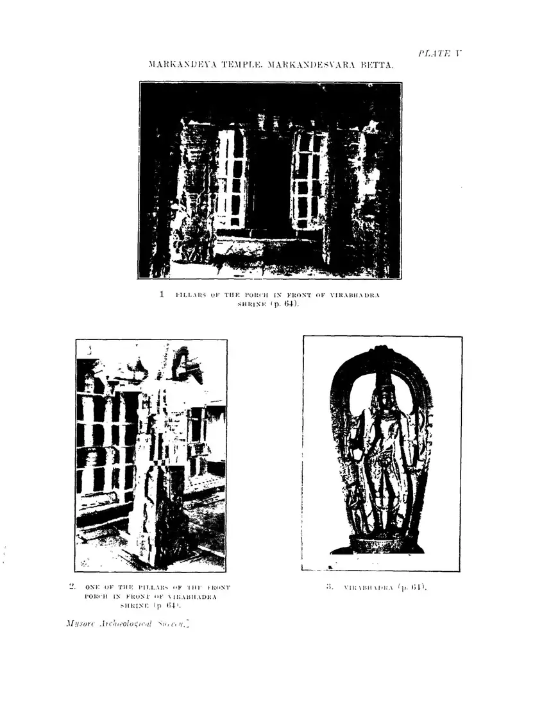
- MARKANDEYA TEMPLE. MARKANDESVARA BETTA 1 PILLARS OF THE PORCH IN FRONT OF VIRABHADRA SHRINE (p. 64)
- ONE OF THE PILLARS OF THE FRONT PORCH IN FRONT OF VIRABHADRA SHRINE (p. 64)
- VIRABHADRA (p. 64)
Cited in the text: p. 64 ↩
rearing lion on a rearing elephant. On the left jamb of the same doorway is sculptured an elephant-bodied and tiger-headed monster from whose floral tail issues a creeper scroll in the convolutions of which are carved the figures of a linga and an archer.
The outer prākāra with its long verandah on the inner side, the pillared verandah round the garbhagrīha, vestibule and navaraṅga of the main temple, and the Saptamātrika and Gaṇēśa shrines which all seem to belong structurally to one group, have been raised on a basement consisting of two cornice mouldings, one of which is eaves-shaped and ornamented with the leaf and kīrtimukha designs. The pillars of these structures are shorter and Dravidian in style with the usual cubical and eight-sided mouldings. They are further slightly tapering. On the cubical mouldings appear the relievo figures of gods, animals and devotees as on the other pillars of the temple. But the workmanship of these pillars is definitely inferior to that of the earlier pillars. Their capitals too are provided with plantain bud hangings, but these are rudely worked.
The Saptamātrika shrine consists of an oblong cell with a porch of four pillars in front facing the main temple. In the cell are enshrined the rude images of the Seven Holy Mothers with Vīnādhāri Vīrabhadra to their right and Gaṇēśa to their left. They are all seated in a row on a platform.
The Gaṇēśa shrine faces east and is constructed to the south-west of the main temple. It consists of a square garbhagrīha and a front open porch of four pillars. The image of Gaṇēśa is a well worked one and carved out of black stone. Including its pedestal, it is about 2' in height. The pedestal and the image are both carved with a good taste and belong, in style, to the period when the Vīrabhadra image was carved. But the cell containing Gaṇēśa is later.
The Shaṅmukha shrine consists of a square garbhagrīha and has plain basement cornices and outer walls. The two pillars of its front porch have rearing lions on elephants. The image of Shaṅmukha in the cell rides on a peacock. The god has twelve hands and six heads. The images of his consorts stand on separate pedestals. In their workmanship these images seem to leleng to the Vīrabhadra and Gaṇēśa group. It appears that these images were enshrined in this cell at a later date.
The Pārvatī shrine consists of a small square garbhagrīha, a small square vestibule and a front porch of four figure-bearing Dravidian pillars. The image stands on a padma pedestal and is about 3' high. In her four hands the goddess holds abhaya, padma, padma and dāna. There is no tōraṇa. In workmanship the image seems to belong to the latter part of the 16th century. The outer walis of the shrine are like those of the Shaṅmukha shrine.
9
The Chandikēśa shrine which faces south consists of one cell with an image about a foot in height including the pedestal. The image is very rudely carved. The shrine is situated to the north-west of the main temple. The Vishṇu shrine consists of a small square cell and a porch borne on four figure-bearing Draviđian pillars. The outer walls of the shrine are plain. The god is called Venkaṭaramana and is four-handed holding abhaya, chakra, śankha and dāna. The image is about 2\frac{3}{4}' high including the pedestal. It has no prabhāvali. In workmanship it is much inferior to the images of Virabhadra and Gaṇēśa. The shrine of Kāla-Bhairava is designed like that of Vishṇu with a pillared porch in front and contains in its main celi an image of Bhairava, about 1\frac{1}{2}' high.
Part III: Study of Ancient Monuments and Sites › Kolar DistrictŚivārapaṭṇa
Sōmēśvara Temple
General Description; History
Sivārapaṭṇa is a place of great antiquity situated at a distance of about 5 miles to the south-west of Vakkalēri.
The Sōmēśvara temple at the place is an old structure dating perhaps from the Chōļa times and consisting of a garbhagrīha, a closed vestibule and a navaraṅga with three additional open ankaṇas in front. The outer walls which are of brick and mortar and of modern date are dilapidated in several places and call for no special remark. The linga inside the garbhagrīha is round-topped and thick, being about a foot or a little more in diameter. It is of black stone and is set up on a square pāṇipītha consisting of three cornices of which the middle one is octagonal. The linga and the pāṇipītha are about 2\frac{1}{2}' high together.
The ceiling of the vestibule has a padma relievo inset in the middle. It is raised on two sets of corner stones with a lotus in the centre. The navaraṅga doorway has floral ornamentation on the jambs. In the central ankaṇa of the navaraṅga is a small couchant buli. It appears to be old though rather rude in workmanship. The central ceiling of the navaraṅga has a padma in relief. The four pillars of the central ankaṇa are peculiarly shaped with a low square base and an octagonal shaft superimposed by an octagonal vase moulding and an octagonal loaf-shaped moulding. The capital bears plain brackets. The two pillars of the ardhamanṭapa have also the same mouldings but have no vase. Their mouldings too are rudely worked.
The inscription standing to the north-east of the temple is dated in 753 A.D.—the 28th year of the Ganga King Śrīpurusha. Though there is no reference to the temple in the inscription, it is not impossible that the linga inside the garbhagrīha hails
History.
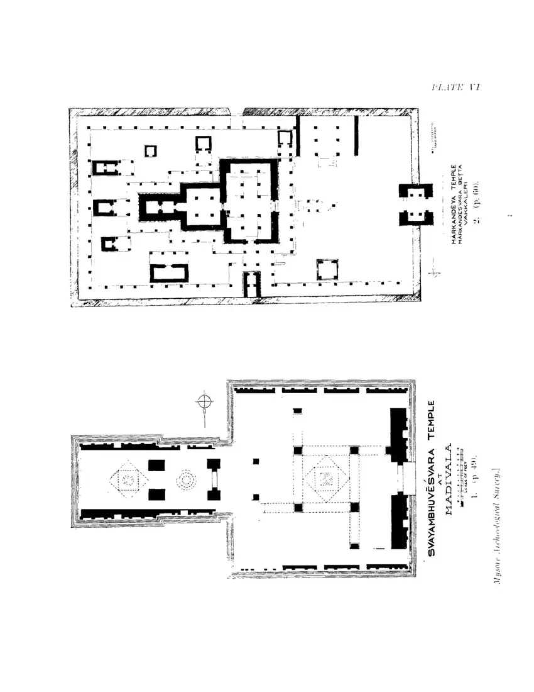
- (p. 49)
- (p. 60)
from the Gaṅga times. The bull and the navaranga pillars appear also to belong to the same period as the linga. The pillars are worked of greyish granite while the linga and the bull are of black stone.
The images of Gaṇapati and Pārvatī are the contribution of the present-day sculptors at the village.
Varadarāja Temple
Outer View; Navaraṅga
The Varadarāja temple which is to the east of the village is an old structure appearing to date from about the 13th century. It consists of a square garbhagrīha, a square vestibule and a square navaranga. The outer walls of the garbhagrīha are raised on a basement consisting of two cornices which are plain. The walls are relieved by right-angled pilasters ornamented with beaded hangings, ribbed band and vase and loaf-shaped mouldings. There are also niches on the outer walls. The eaves are sharp and have the kirtimukha designs at intervals. An inscription dated in Saumya samvatsara was discovered on the basement cornice mouldings. The characters appear to belong to the 13th century.
It is possible that the navaranga had once its outer walls built of brick and mortar as at the Sōmēsvara temple. The appearance of the navaranga is now like an open manṭapa. The hall is provided with a doorway on the south. The four central pillars of the navaranga are noteworthy. Each of them has a low square base superimposed by an octagonal moulding, the corner panels of the octagon having a wedge-shaped petal-like relievo figure. The shaft which rises above this moulding is sixteen-fluted with an octagonal band in the middle. This octagonal band consists of panels ornamented with scroll work. Above it at the top of the shaft is a triple ribbed band provided with floral hangings below. Above this band appears a vase-shaped moulding which is also sixteen-fluted. The navaranga ceiling has a padma inset in a square.
The doorway of the vestibule has been carved with floral ornamentation on the jambs. The garbhagrīha is empty.
About ten yards to the west of the temple is a stone oil mill. To the south-west of the temple is another temple enshrining an image of Āñjanēya which appears to be of the Vijayanagar period.
Part III: Study of Ancient Monuments and Sites › Kolar DistrictBellūr
Kaṇvēśvara Temple
General Description; Outer View; Navaraṅga; History of Temple; Pārvatī Shrine
Bellūr is a road-side village about a mile from Narasāpur on the Kolar-Hospet road. The place seems to have been an ancient agrahāra town during the Hoysala period. It contains a Vishṇu
General description.
temple dedicated to the god Rāmanātha to the north-east of which the Kanvēšvara temple is situated. The latter is built in the Draviđian style and consists of two garbhagrīhas of which the main one only has a tower of brick and mortar. The two cells open out into a common navaranga of square shape.
The outer walls of the temple are raised on a basement consisting of three cornice mouldings of which the first from the bottom is octagonal, the second square and the third square with a frieze of lotus petals below. The outer walls are relieved by right-angled pilasters with beaded hangings and biscuit-shaped mouldings. There are also, at intervals, turret-bearing niches on the outer walls. The turrets are horse-shoe-shaped. The eaves are sharp and bear kirtimukha ornamentation here and there. The tower consists of a single turret only and is square-shaped. On the four faces of the tower are pilastered niches enshrining mutilated stucco figures of a seated four-handed Brahma (?) on the south, a seated four-handed Narasimha on the west, a seated Śiva (?) on the north and an empty niche on the east.
The navaranga has a doorway on the south and a perforated window underneath a pilastered niche on the east. In front of the temple is a porch with two pillars having the cubical and eight-sided mouldings.
The pillars of the navaranga are similar to those of the porch in their design. The ceilings are all oblong. On the second ceiling from the east there is the figure of a padma in relief. The northern cell and the north-east ankaṇa of the navaranga have been walled up recently and serve as a store room and granary. In the hall are placed the images of two Nandis, a small Gaṇēśa and a Bhairava. These images are rudely carved.
The west wall of the navaranga shows that the garbhagrīha and the vestibule formed originally a distinct group and that perhaps when the northern cell was constructed, the navaranga was also built along with it. The temple abounds in inscriptions of the twelfth and the thirteenth centuries and it is highly probable that the garbhagrīha and the vestibule were both constructed during the twelfth century, while the navaranga and the northern cell were put up some time during the early part of the 13th century. The later additions to the temple have been made in imitation of the early structure.
To the north-west of the temple is a 17th century structure built for enshrining the goddess Pārvati. It consists of a plain characterless main cell with a brick and mortar tower above it and a manṭapa in front borne on four Draviđian pillars. The outer walls of the manṭapa are built of rubbles, brick and mud. The doorway is on the south. The image of Pārvati in the cell is about 2\frac{1}{2} ' high with a tōraṇa behind. The image
Parvati shrine.
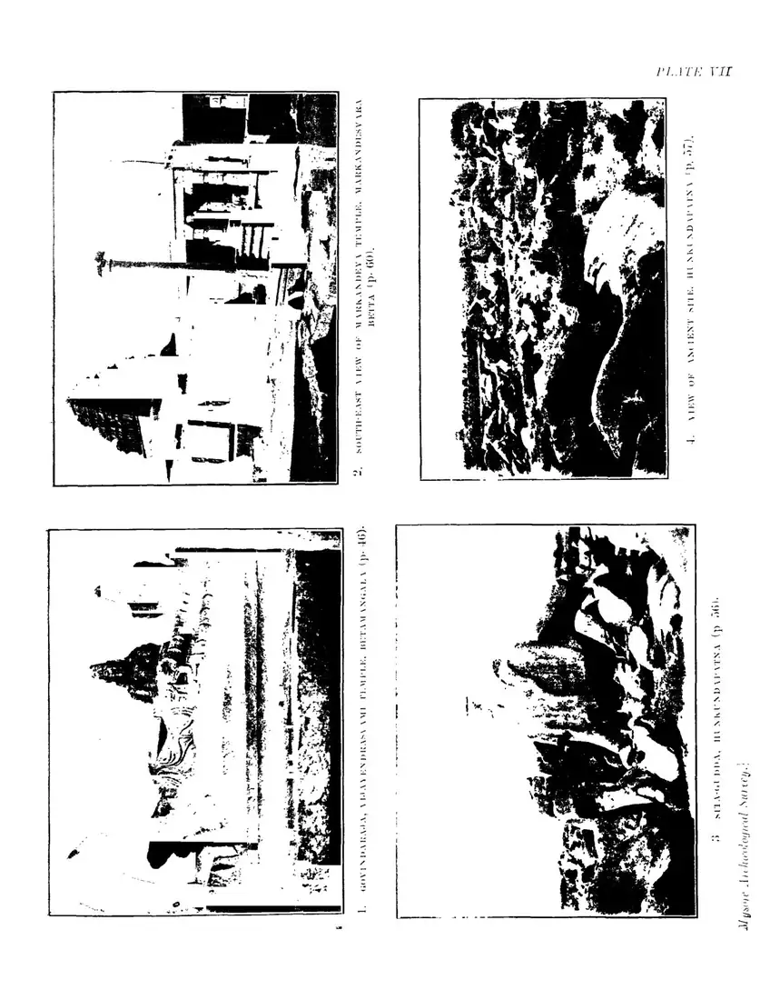
- GOVNDARAMA, YLAY ENDRASAMI TEMPLE, BETAMANGALA (p. 46)
- SOUTH-EAST VIEW OF MARKANDEVA TEMPLE, MARKANDESV AREA BETTA (p. 60)
- SHACQIDDA, HUNCDAVATNA (p. 56)
- VIEW OF AMENT SITE, HUNCDAVATNA (p. 57)
and its tōraṇa are carved of the same stone. In workmanship the image is unmistakably of the late Vijayanagar period though the tōraṇa is present and the Vijayanagar period images do not usually have the tōraṇa.
In the south-western corner of the temple area there is a mono-celled Gaṇapati shrine which also hails from the late Vijayanagar period.
The mahādvāra is to the west of the temple area. It is dilapidated and characterless and seems to be a structure of the 17th century.
Rāmanātha Temple
History and Description; Outer View; Navaraṅga
The Rāmanātha temple is situated at about a hundred yards to the south-west of the Kaṇvēśvara temple. The earliest inscription which History and description. mentions the god is dated in 1153 A.D. [Kōlār 100 (a) Ep. Car. XJ.] The god is called Venpaikkāmayaruḥiyav-Emberumān in the inscription. The structure appears to belong to the 12th century and consists of a square garbhagriha, a vestibule and a navaraṅga. The last has a doorway on the east. Another doorway which was on the south has now been walled up. There is a porch in front of the southern doorway. To the east of the eastern doorway there is the mahādvāra of the temple which seems to belong to the late Vijayanagar period.
The outer walls of the temple are raised on a basement consisting of three cornices of which the one at the bottom is octagonal, the second square and the third square with a frieze of padma petals below. The walls are relieved by right-angled pilasters with beaded hangings and loaf-shaped mouldings. There are also plastered niches on the outer walls. Above the garbhagriha there is a brick and mortar tower which appears to belong to about the 17th century. The eaves are straight-sided and are relieved at intervals by kīrtimukhas.
The eastern doorway of the navaraṅga has the floral and beaded ornamentation on the pedestal, jambs and lintel. In the centre of the hall there are four well-worked bell-shaped slender pillars surrounded by an outer row of plain slender pillars with cubical bases and octagonal shafts. The four pillars in the central ankaṇa have all the mouldings of a typical Hoysaḥa pillar. The eastern pair are sixteen-fluted and the western pair are eight-sided. Considering that these pillars are carved of granite, their workmanship is remarkable masmuch as the bell mouldings are well ornamented with gracefully hanging beads and flowers. The central ceiling of the navaraṅga has a relievo padma.
Main God
No heading in the body: this section starts at its printed page (70).
The vestibule doorway is guarded by stucco dvārapālas of the late Vijayanagar period. The main god of the temple called Veṇṇaikkāma-yaruļiyav-Emberumān in an inscription of 1153 A.D. and Vāļavandār in another inscription of the time of Rāma-nātha, is now missing. It is said that the present image was brought from Daļa-sanūr in Šrīnivāsapur Taluk. It appears to belong to about the 14th century. Though it is called Varadarāja by the people, the god is Šrīnivāsa in form. In its four hands are held the following attributes : abhaya, chakra, śankha and kaṭi. On either side of the god stand rude smaller images of his consorts on their own pedestals. The tōraṇa and the main image are of the same stone.
Part III: Study of Ancient Monuments and SitesBangalore District
Hoskōṭe
Viṭhōba Temple
Marāṭha Structure
No heading in the body: this section starts at its printed page (70).
The Vithōba temple at Hoskōte was built in c. 1740 A.D. The sannads belonging to the temple have been examined by the late R. Maratha structure. Narasimhachar and noticed in the Annual Report of the Archæological Department for 1919. Built in the Maratha period the temple consists of a row of three cells facing east with a front manṭapa having tall Dravidian type pillars. The navaraṅga doorway is flanked by a pair of elephants. The jambs of the doorway of the main cell have floral ornamentation.
In the main cell the image of Vithōba, carved out of black stone, stands with the hands akimbo, with the images of his consorts standing on either side. In the north cell is enshrined Hanumān with folded hands. In the south cell are the images of Garuđa and Gaṇapati.
Part III: Study of Ancient Monuments and Sites › Bangalore District › HoskōṭeVaradarāja Temple
Main Image
Pillars in Mukhamaṇṭapa; Outer View; Jagali
No heading in the body: this section starts at its printed page (70).
The temple of Varadarāja is situated at a distance of about 100 yards to the east of the Avimuktēšvara temple. It faces west with a garbhagriha, a double vestibule and a mukhamaṭapa. The structure seems to belong to the sixteenth century.
The god stands with his consorts in samabhaṅga holding abhaya, chakra śankha and gadā. The drapery with its conventional folds and the general features and ornamentation of the image indicate similarity with the well-known Vijayanagar period sculptures. The image wears the characteristic archaic smile and has wide nostrils. To the south of the main cell there is another cell with its own vestibule. In this cell is enshrined a 17th century image of Šrīnivāsa holding abhaya, chakra, šankha and kaṭi.
The pillars of the mukhamaṇtapa are all typicaliy Draviđian in style with the usual cubical, eight-sided and sixteen-fluted mouldings.
Pillars in mukhamantapa. On the cubical mouldings appear the relievo figures of dancing girls, seated Vishnu, dancing drummers, Šrīnivāsa, Hanumān, elephant, peacock, Yōgānarasimha, etc. The capitals of the pillars have the usual plantain bud hangings. The ceiling of the mukhamaṇtapa is raised on three sets of corner stones while that of the garbhagrīha has been raised on two sets only. The vestibule doorway is guarded by Vaishṇava dvārapālas.
The outer walls of the mukhamaṇtapa are built of brick and mud. The outer stone walls of the garbhagrīha and vestibule are plain and characterless. The basement on which the outer walls are raised consists of two plain cornices. The eaves which are sharp have the imitation kīrtimukha arch designs on them. On the south basement cornice of the temple is the relief figure of a lizard. On the south outer wall is another relief figure representing peacock with creeper in its beak. There is a sōma-sūtra on the south of the garbhagrīha, which is shaped like a hanging plantain bud issuing out of the mouth of a makara.
In front of the mukhamaṇtapa there is a jagali on either side borne on pillars similar to those of the mukhamaṇtapa. Among the relievo figures appearing on the cubical mouldings of these pillars are those of dancing ladies, loving couples, lady Vīnā-player, Matsyāvatāra, Kōdaṇḍa-Rāma, Vāmana, Kūrmāvatāra, Narasimha, Varāha. Balarāma, Kalki and Kamba-Narasimha. The last is shown as issuing out of a pillar.
Part III: Study of Ancient Monuments and Sites › Bangalore DistrictNandagudi
Mallāśvara Temple
History; General Description
Nandagudi is a village about ten miles to the north-east of Hoskote. Regarding the name of the place, etc. (please see M. A. R. 1919, pp. 7-8). To the west of the village is a laterite hill called Ađđabeṭṭa at the foot of which stands on a height the temple of Mallikārjuna facing east. It was constructed in about 1550 A.D. by the Sugaṭūr chief Timmappa Gauđa in the reign of the Vijayanagar king Sadāśiva Rāya,
The temple appears to have had a prākāra originally, of which only a plain mahādvāra now remains. The main building consists of a garbhagrīha, an open vestibule, a navaranga of nine squares and a small mukhamaṇtapa or porch of one square only.
General description.
The outer walls are composed of large and heavy slabs which are all well dressed and set one on another without using mortar. The pillars are all short ones of the usual Vijayanagar type with the cubical, eight-sided and sixteen-sided mouldings. On the cubical mouldings are carved the reliefo figures of Ganēśa, etc. On the lintel of the navaranga doorway is carved a Gaja-Lakshmi group. In front of the porch there is a balipīṭha.
To the north-west of the temple there is a small Pārvatī shrine.
Part III: Study of Ancient Monuments and SitesShimoga District
Ānandapura
Village Andhāsura; Pond of Mahanti-maṭha; Basava shrine
The older name of the place is Anantapuram. About three miles to the south-east of the village there is an insignificant hamlet called Village Andhasura. Andhāsura which appears to have been an important place during the 8th century A.D. and an agrahāra town during the late Chālukya times. (See M.A.R. 1911, p. 41).
About two miles to the north-east of Anandapura is a large pond (256' × 226') which is said to belong to the Mahanti Matha. A story is narrated that this pond was built by Śivappa Nāyaka of the Keļadi dynasty for purposes of his recreation and that his concubine lived here. But the situation of the pond in front of a gaddlige and the existence of a Basava shrine on an island in the middle of the pond suggest that a certain Vīraśaiva saint lived here during the 17th century. The pond is said to have been till recently fed by a tank situated about a mile and half to the north. The channel which is said to have conveyed the water from the tank is reported to have now become silted up. To the north of the pond there is a luil carved out of stone with its mouth open and it is said that water used to flow through the mouth of this bull into the pond. To the south of the pond is a sluice through which water is said to have been conveyed by means of a channel to irrigate the wet lands of Mallandūr.
The island in the middle of the pond is connected with the western bank of the pond by a stone-built causeway. Facing the Basava shrine stand on the western bank of the pond two huge stone elephants which are well carved and caparisoned.
The Basava shrine on the island consists of a single square shrine whose outer walls are built of brick and mortar on a stone-built basement. The shrine faces west and its doorway is designed like a Moslem arch with brick and mortar scroll work on either side. The figures of parrot are freely used for purposes of ornamentation. The cell is surmounted by a stepped pyramidal tower consisting of three tiers with indented
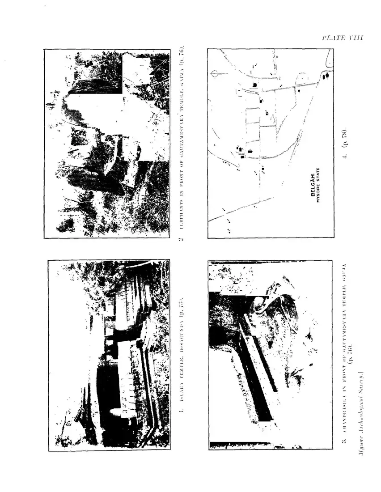
- 2 LEPHANTS IN FRONT OF GAUTAMESVARA TEMPLE, GATCA (p. 76)
- ISARA TEMPLE, BOS AVENDA (p. 733)
- CHANDRESICA IN FRONT OF GAUTAMESVARA TEMPLE, GATCA (p. 76)
- (p. 78)
Cited in the text: p. 60 ↩, p. 73 ↩, p. 76 ↩, p. 76 ↩, p. 78 ↩
corners. A rudely shaped lotus bud terminates the tower. On the northern basement of the temple there is a sōmasūtra shaped like a hanging plantain bud. The bull inside the shrine is rudely carved of stone.
The island on which the shrine is built rises in three tiers and is built of large blocks of jambiṭtige or laterite which is found in large quantities in the locality. The sides of the pond are also built of such blocks while stone steps are used sparingly.
Other temples in the village
Inside the village of Ānandapura there are three modern temples built for enshrining the rude images of a linga, Hanumān, and Raṅganātha. The god Raṅganātha is actually Kōdaṇda-Rāma. It is a very rude image belonging to about the 17th century. It is four-handed holding arrow, chakra, śankha and bow. The limbs of the images are out of all proportion and the god wears whiskers like Bēṭerāya. In the compound of the Raṅganātha temple there are smaller relievo images of Garuḍa, Kōdaṇda-Rāma, a two-handed goddess attended by cows, and Virāñjanēya. The last image wears a long śikhā standing on end and terminating in a loop. The temples are all architecturally unimportant.
Part III: Study of Ancient Monuments and Sites › Shimoga DistrictHosagunda
Situation
Hosagunda is a village situated amidst thick jungle at a distance of about eight miles to the north-west of Ānandapura. During the 12th and 13th centuries, the place was the capital of the Śāntara chiefs and must have been a prosperous town with a fort all round and several temples inside. Of these temples two at least are known: one of them is the soap-stone temple of Ēsvara and the other is an insignificant temple of Kañchi-Kālammā.
Situation.
Ísvara Temple— PAGE
The Ēsvara temple is a good monument built in the Nāḍkalasi style (Pl. VIII, 1). It consists of a garbhagrīha surrounded by an inner pradak-shiṇā and of a large and well-worked mukhamanṭapa with stone benches and railings on the east, south and north sides. The structure is raised on a basement consisting of four cornices running uniformly all round. These cornices are all plain. The outer walis are built of plain slabs placed edgewise one on another. A plain cornice runs in the middle of the walls. The eaves which are 'S'-shaped ran originally all round the temple. The under-surface of the eaves is worked in imitation of wooden rafters. It is not known if there had been originally a tower above the garbhagrīha.
Outside view
Mukhamaṇṭapa; Inner Pradakshiṇa; Main Cell
10
The best part of the temple is its mukhamantapa which is entered by flights of steps on the east, south and north. The railings of the stone benches have been carved with turret-bearing pilasters and a frieze of sculptures in the panels between double columns. Among the sculptures many are obscene. On the northern panels are found the figures of the Ashta-Dikpālakas. On the south-western panels occur the figures of dancing Gaṇēśa, a yati riding on makara and holding a disc in his right hand, a two-handed figure with a masked face also holding a disc in his right hand, Lakshmana (?) holding a woman's (? Šūrpanakhī's) tuft and in the attitude of striking, Kōdaṇa-Rāma with Sitā, etc.
Inside the mukhamantapa the pillars on the benches are mostly sixteen-fluted, the flutes being boldly carved. The north-east and south-east pillars, however, are cylindrical. In the centre of the mukhamantapa there are six pillars which are bell-shaped and lathe-turned and well ornamented with the chain, the rope, medallion, scroll and other designs. These pillars are set up on an oblong platform. Among the ceilings of the mukhamantapa there are ten in the outer row and two in the middle. The ceilings of the outer row are mostly of one type carved in the middle with a large padma inset in an ornamental square band. Each of the two central ceilings is divided into nine panels in each of which is carved a padma with a pendant in the middle panel.
The doorway leading to the inner pradakshiṇā bears a well-carved lintel and has perforated screens on either side. Against the southern wall of the pradakshiṇā is set up a Saptamātrika panel. The doorway of the main cell has on its lintel the figure of Sarasvatī holding in her four hands rosary, ankuśa, pāśa and book.
The main cell is empty. Part of a pedestal is kept against the west wall of the cell. The west wall has a middle cornice band. The ceilings of the inner pradakshiṇā are all plain.
Immediately to the north-east of the Iśvara temple is a smaller shrine with a stone-stepped pyramidal tower above it. The outer walls of the shrine are plain, and inside the shrine there is no image.
Part III: Study of Ancient Monuments and Sites › Shimoga DistrictMallandūr
Viragals; etc
Near the Dēvarakere tank belonging to Mallandūr, a village about 2 miles on the way from Ānandapura to Gauja, there are found a few māstikais of which one contains the large figure of a mahāsati with her right hand raised up and her left holding what appears to be a kamnaṇalu. In the right field of the sculpture is inscribed an inscription in Kannaṇa characters of about the 10th century A.D. A little distance to the south-south-west of the sati stone is a mon-ocelled shrine built of laterite blocks dedicated to a god locally called Rāmanāthadēvar but containing a liiga about 2\frac{1}{2} ' high including the pedestal on which it is set up. In front of the temple there are a fragmentary Saptamātrikā panel and two vīragals of which one is published in the Epigraphia Carnatica, Shimoga District, as Sagar No. 119. In the neighbourhood of the sati stone mentioned above are also found several vīragals and more sati stones bearing characters of about the 13th century A.D. Among them there is also an inscription of the Rāshṭrakūṭa period.
Gauja
Modern structures; Stucco images
The village of Gauja is situated at a distance of about five miles to the north-east of Ānandapura. It appears to have been an ancient agrahāra town, though it is now an insignificant place. Very near the village there are several temples of later days.
The Durgā temple is a modern structure in an open field and contains in its main cell the head of a wooden image which is worshipped as Mārammā. In another open field to the east of the Durgā temple is a māstikal with illegible characters of the 14th century. The Nāgara temple nearby is also a modern structure built of laterite blocks and containing a soap-stone reliefo figure of a five-hooded serpent. At a little distance to the east of this temple there are four vīragals containing inscriptions ( see M.A.R. 1930, pp. 228 ff.). To the north of the vīragals is a dilapidated structure of laterite blocks containing a small reliefo figure, about 2\frac{1}{2} ' high, of a four-handed Janārdana on a Garuda pedestal. The image is very rude and may belong to about the 18th century. About 20 yards to the north of the Janārdana temple is a mono-celled temple, also built of laterite blocks, enshrining an image of Vīrabhadra, about 2\frac{1}{2} ' high, holding in its four hands sword, arrow, bow and shield. The image is very ugly and is perhaps of the 18th century. Above the cell there is a stepped pyramidal tower.
At a distance of about 50 yards to the north-west of the Vīrabhadra temple is situated a tiled structure of recent times dedicated to the goddess Banaśankarī. In the principal cell of this structure are seated three colossal stucco images of female deities painted over in different colours. The first goddess from the left is two-handed, the right being in abhaya with chin-mudrā and the left disposed pain upwards with the fingers closed. The middle deity is also two-handed with abhaya and dāna. But the third goddess is four-handed holding a sword. (blank), ankuśa and bowl. This deity only has canine teeth. All the three images are said to be very old, though the structure is of recent days. We may ascribe the images to about the 17th century and compare them with the stucco image in Settigere ( see M.A.R. 1936, pp. 18-19) near Bēlūr. Each of these images is
Stucco images.
about 6' high. To the right of the platform on which the images are seated is a soap-stone image of Gaṇēśa which appears to be of the 14th century. In the compound of the temple are two māsti stones of about the 14th century.
Gautamēśvara Temple
Rāshṭrakūṭa structure; General description
About half a mile to the east of the Banaśankarī temple, we come across a large pond, about 100' by 150', with steps built of laterite blocks.
Rashtrakuta structure. To the north of the pond is situated the Gautamēśvara temple which appears to be a very old structure of the Rāshtrakūṭa period judging from the plan of the temple, the huge linga in the cell, the two vigorous elephants at some distance to the east of the temple and the several inscriptions to the south-east of the temple.
As it is, the temple consists of the main cell only which is built of laterite blocks in an apsidal plan. The beams inside the cell are also disposed like an apse. Originally the temple seems to have contained a pradakshinā around the garbhagriha and a mukhamaṇtapa in front as can be seen from the basement that is still existing of these compartments. To the east of the mukhamaṇtapa there is a flight of dark stone steps supported on either side by elephants (Pl. VIII, 2). The features of these elephants remind us of those met with at Ellōra. Though these elephants are in a broken condition now, the contour of their limbs is clearly marked, their ears are very well worked and the folds on the trunks are boldly carved.
One of the inscriptions to the south-east of the temple mentions the Rāshtrakūṭa king Kannara (Kṛīshṇa) and the god Gautamēśvara to whom donations are said to have been made. The linga in the cell is huge and is about 3½ feet high including the pedestal. Its top is shaped like a cone. The chandra-śila in front of the doorway is well carved with floral, scroll and padma designs (Pl. VIII, 3).
Sūrya shrine
On the east bank of the pond is situated the Sūrya shrine facing west. It contains a very good image of a four-handed Sūryanārāyaṇa
Main image
On the pedestal are carved the seven horses driven by the charioteer Aruṇa. On either side of the god are found the usual female attendants and figures of Chhāyā in the attitude of shooting arrows. The tōraṇa is shaped like a horse-shoe and carved with the figures of rearing lions, makaras and the Ashṭa-Dikpālakas on their several vehicles. In his hind hands the god holds prayōga-chakra and śankha. His fore hands are placed on his hip, the right one with the
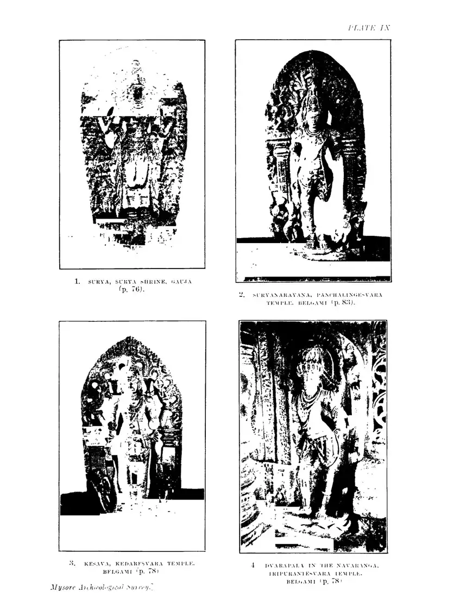
- SURYA, SURYA SHIRINE, GAUJA (p. 76)
- SURYANARAYANA, PANCHALINGESVARA TEMPLE. BELGAMI (p. 83)
- KESAVA, KEDARFSVARA TEMPLE BFLGAMI (p. 78)
- DVARAPALA IN THE NAVARANGA IRIPURANTESVARA TEMPLE BELGAMI (p. 78)
palm turned to front and the left with the palm turned backwards. Under each arm pit a lotus is shown as issuing upwards. The drapery and the ornaments of the god are carved with a pleasing taste. The god wears yajñōpavita in addition to the usual ornaments like the makarakuṇdala, etc. It is possible that the image is of the same period as the Gautamēśvara temple and belonged originally to the Śivapanchāyatana group of images at the temple. The facial features of the image, however, are not very expressive.
At the north-western corner of the pond is a fragmentary Śaptamātrikā panel.
Part III: Study of Ancient Monuments and Sites › Shimoga DistrictShikārpūr
Huchcharāya Temple
Tradition; Description of temple
Shikārpur is the headquarters of a taluk in the Shimoga District. The most popular temple at the place is the Huccharāya temple. It enshrines an image of Vīrāñjanēya in its main cell and a story is narrated explaining how the god came to be called Huccharāya. It is said that the place was known in olden times as Malena-halļi and that a certain Lingāyat saint by name Huccharāya came over here once and worshipped an image of the god Hanumantarāya. This image, they say, is the one now enshrined in a cell in the kaisāle of the temple. It is said that this image was broken and became useless for worship during the troublous period in the days of Tippu Sultan. The Lingāyat saint mentioned above is said to have come again to the place at this juncture and to have consecrated the present image of Añjanēya in the main cell. He is said to have given the idol his own name. Whatever the truth be regarding the story, it is probable that the temple belongs to the days of Kanṭhīrava Narasarāja Vođeyar since the older image in the kaisāle of the temple has a silver kirīṭa bearing his inscription.
The original temple seems to have consisted of the garbhagriha and vestibule only. It is raised on a basement consisting of two plain cornices. The outer walls are relieved by Dravidian pilasters on whose mouldings appear the following figures: a ṛishi riding on matsya, a seated yāli, another seated ṛishi but without the matsya, Ugranarasimha, etc. On the outer walls are carved the relievo figures of a tiger, a linga carried by a two-banded person (Bhīma?) and worshipped by Purushamriga on the one side and Hanumān on the other, Hanumān attended by chauri-bearers, a rudra-viṇa player, a Gandabhēruṇda, Vāli and Sugrīva fighting, and a story concerning an elephant, a peacock and a crocodile. The eaves of the original temple are straight-sided and the tower is of brick and moutar. The latter has been renovated recently. The vestibule has a doorway on the east and another doorway on the south. The southern doorway is the main one and is guarded by two Vaishnava dvārapālas. The pilasters on this side are indented in imitation of Hoysaļa workmanship. On the lintel is carved a Gajalakshmī group. On the lintel of the garbhagřiha doorway the image of Gaņapati is carved. He is supported by elephants and cobras.
The image of Vīrāñjanēya in the cell is in the striking attitude. In front of the temple is a large hall with tiled roofing. It is of recent times. In a compartment of the hall are installed the stone images of Kōdanđa-Rāma, Lakshmaņa and Sītā which are all of modern workmanship.
On the right jugali of the temple is a Hoysaļa soap-stone image of the goddess Sarasvatī evidently brought from elsewhere. On the left jagali is a recent ugly image which is locally called Sītā.
Part III: Study of Ancient Monuments and Sites › Shimoga DistrictBelgāmi
Key to Plate VIII, 4.
1 Tāvarekere. 15. Nīlakanṭhēśvara temple.
2. Kēdārēśvara temple. 16. Trimūrti.
3. Prabhudēva temple. 17. Kāļiguđi.
4. Tank. 18. Bhērunđēśvara.
5. Panchayat Hall. 19. Šūlabrahma.
6. Tīrthankara. 20. Tārābhagavatī.
Tripurāntaka Temple
8. Brahmēśvara. 22. Sītamma's well.
9. Tank. 23. Durgā temple.
10. Sōmēśvara temple. 24. Onakehonđada Iśvara temple.
10A. Vīrabhadra temple. 25. Jiđđikere.
11. Tank. A. Mounds of old temples.
12. Kallumaṭha. A. Jaina temples (old site).
13. Pañchalingēśvara temple. A. Šiva temple (old site).
14. Anantapadmanābha temple. 26. Narasimha temple.
The Kēdārēśvara and Tripurāntakēśvara temples at Belgāmi are described in detail in the Annual Report of the Archæological Survey for the year 1931, pp. 58–65. Here in Plates IX, X, XII and XIV, some further illustrations are included to give an idea of the high standard of the art and architecture of the periods in which these temples were built. A detailed survey of the site of the old town was also made at the time of inspection this year and the following points of interest were noted.
The beams of the central ceiling of the mukhamaṇtapa at the Tripurāntakēśvara temple are carved with friezes of sclupture as in page 79.
Tripurantaka temple.
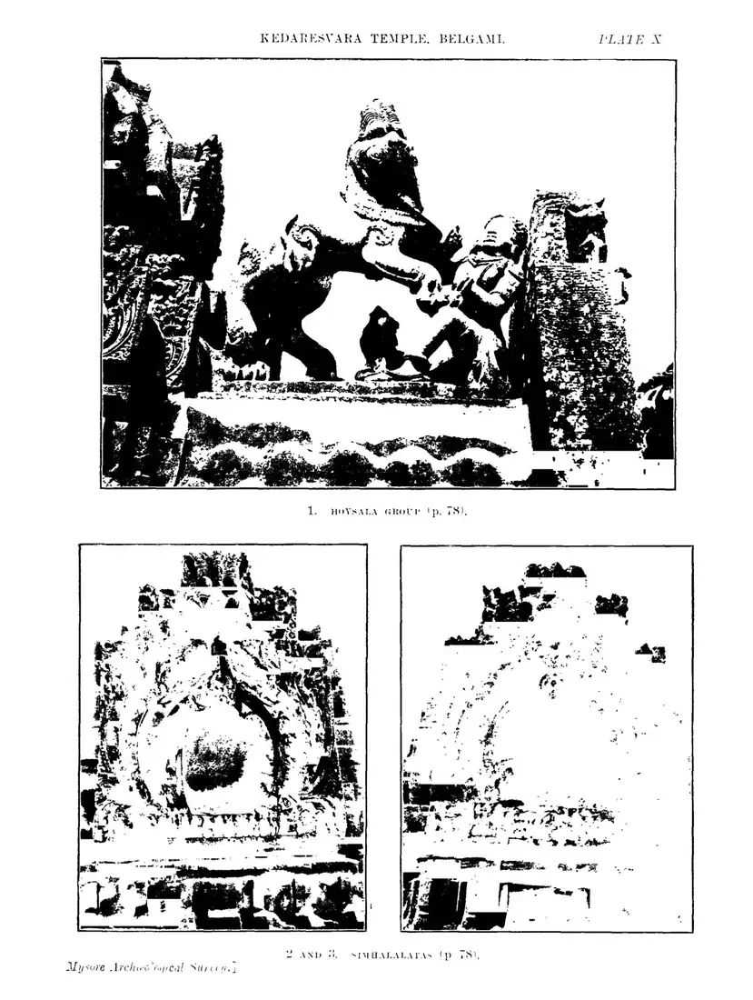
- HOYSALA GROUP (p. 781)
West Beam :—
1. Sitā in Aśōka-vana.
2. Hanumān kneels before Sitā and begs permission for entertaining himself. in Aśōka-vana.
3. Hanumān fights the Rāksnasas.
4. He is led before Rāvaṇa.
North Beam :—
1. Rāvaṇa in durlār.
2. Hanumān's tail is set on fire and he extends his tail.
3. Elephant standing to left.
4. Hanumān sets fire to Lanka and the palace of Rāvaṇa where numerous people are sleeping.
5. A towered pavilion, perhaps representing the palace.
East Beam :—
1. Ēśvara on bull.
2. Gaṇēśa on rat.
3. Kumāra on peacock.
4. Vishnu on Garuḍa.
5. Brahma on peacock.
6. Iudra on elephant.
7. Kubēra on horse.
8. Yama on buffalo.
The heavenly hosts led by Indra are fighting a warrior who is seated on elephant. Indra is followed by the Ashṭadikpālakas.
South Beam :—
9. Niruti on man.
10. Varuṇa on makara.
11. Vāyu on deer,
12. Agni on ram.
13. Ēśāna on bull.
14. Two warriors fighting on foot with sword and buckler.
15. Iudra on elephant fighting Vṛitra (?) who is also seated on elephant.
In the kaṇa or hittalu belonging to Gurupāḍa Gauḍa there are lying some good images of which one is a fine group of a Nāga couple.
About 150 yards to the north-east of the Tripurāntakēśvara temple lie the ruins of the Brahmēśvara temple. The walls, pillars, etc., of the original temple have all disappeared now: but, here and there, appear certain bricks suggesting that the walls had been built of bricks. The ancient Brahmēśvara lingua is about 3\frac{1}{2} ' high and is carved on each of its four faces with a head wearing makara-kuṇḍalas and phālāksha (Pl. XI, 2).
Chaturmukha Brahmēśvara
Mounds of old Śiva temples; Old Jaina quarters; Virabhadra Temple; Sōmēśvara Temple; Śūla-Brahma; Trimūrti image; Narasimha; Kālikādēvi Temple; Nilakaṇthēśvara Temple; Pañchaliṅga Temple; Anantapadmanābha Temple; Virabhadra Temple; Stray images. etc.; Onake-hoṇḍada Basavaṇṇa Temple
of the Brahmēśvara temple. The walls, pillars, etc., of the original temple have all disappeared now: but, here and there, appear certain bricks suggesting that the walls had been built of bricks. The ancient Brahmēśvara lingua is about 3\frac{1}{2} ' high and is carved on each of its four faces with a head wearing makara-kuṇḍalas and phālāksha (Pl. XI, 2).
Among the jaṭāmakuṭas over the heads, that on the head on the north side is better carved than the others. The pedestal of the linga is broken; a part of it only is now lying near the linga. In front of the linga there is a broken image of Nandi which must have been a very good piece originally, as suggested by the well-carved hump and the clearly marked folds behind the left hind leg.
At a distance of about 50 yards to the south-east of the Brahmēśvara temple, there is the mound of another Śiva temple with only the original linga existing now. The linga is round-topped and is about 2\frac{1}{2}' high including the pedestal. To the south of the mound are the ruins of yet another Śiva temple with the linga and Nandi only existing now. This linga is flat-headed. In the neighbourhood of this mound, there are several more mounds which evidently mark the sites on which stood other temples of ancient Belgāmi. The ancient town site must have stretched in a triangle between the road leading from Belgāmi to Tālagunda on the west and that leading from Belgāmi to Yeđavatti-Koppa on the south.
About a hundred yards to the south of the Brahmēśvara temple stood originally a Jaina temple. Directly to the west of the temple site is now lying the broken image of the Tirthankara which had been enshrined in the temple. The people call it Bhētāla. Nearby hes the mutilated image of his attendant. A little distance to the north of the site is another Jaina temple mound. These ruins indicate that this part of the ancient town was the Jaina quarters. On the site of the second Jaina temple is found the image of a Jaina attendant with two hands holding chāmara and phala. This image shows good workmanship. On the sites were picked up tile pieces of the Hoysala period. On another Jaina temple mound to the north of the Yeđavatti-Koppa road is lying the mutilated image of Pārsvanātha whose head has now disappeared.
A little distance to the south-west of the Sōmēśvara temple in the village and on the south bund of a pond is found a Jaina inscription of 1077 A.D. ( sez E. C. Shimoga, Sk. 124) in the vicinity of which are lying a late stone relievo of Mahishāsuramardinī and a broken image of a seated Jaina in dhyānāsana. The latter image is very well executed.
The Virabhadra temple inside the village of Belgāmi is a Chālukyan structure whose outer wall slabs have fallen, though the interior is intact. The temple consists of a garbhagrīha, a closed vestibule, a navaranga and a modern manṭapa or verandah.
Virabhadra temple. In the last compartment are set up two bell-shaped pillars similar in character to the pillar near the Nīlakanṭhēśvara temple. A standing Pārvatī-Paramēśvara group is also set up by the side of the steps leading to the verandah. This group is said to have been brought from the Pañchalingēśvara temple. The central pillars of the navaranga are bell-shaped and lathe-turned. The central ceiling is raised on two sets
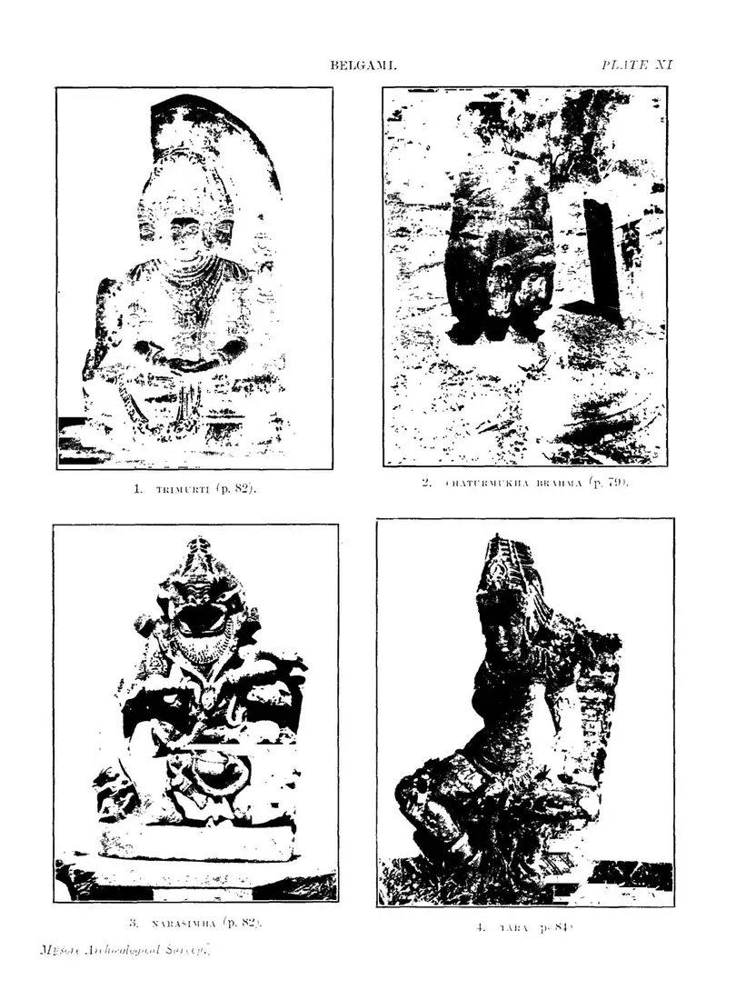
- TRIMURTI (p. 82)
- CHATURMUKHA BRAHMA (p. 79)
- NARASIMHA (p. 82)
- TARA p. 84
Cited in the text: p. 79 ↩, p. 79 ↩, p. 82 ↩, p. 82 ↩, p. 84 ↩
of corner stones with a padma in the centre. In the navaranga are placed the following innages: Nandi facing Virabbadra, Gaṇēśa, six-headed Kumāra on peacock, Saptamātrikā panel and a Nāga stone. The doorway of the vestibule has perforated screens on either side. A Gaja-Lakshmī group is carved on the lintel. The image of Virabbadra inside the garbhagriha is rudely worked and appears to be a sculpture of the Pāllēgār period.
The Sōmēśvara temple mentioned above is a structure of the Chālukya period and was constructed in about 994 A.D. It consists of a garbhagriha, a closed vestibule and a navaranga. The outer walls are raised on a basement consisting of five plain cornices, the last of which has dentil mouldings. The garbhagriha and the navaranga are both square in plan. The walls are plain except for a middle cornice band running uniformly all round the temple. This cornice is carved with a frieze of rhomboidal rosettes. The eaves are short and ornamented with dentil mouldings. The temple has no tower. The navaranga doorway is approached by a flight of steps supported by ridden elephants. In front of the navaranga there is a narrow verandah. On the lintel of the navaranga doorway is carved a Gaja-Lakshmī group. On either side of the doorway there are perforated screens. Among the ceilings of the navaranga only the central one has a padma in its centre. The other ceilings are all plain. Two pillars in the central ankaṇa of the navaranga are bell-shaped and the other two have the cubical, eight-sided and sixteen-fluted mouldings. The doorway of the vestibule has perforated screens on either side and a perforated upper nteil in the middle of which is carved a linga. On either side of the vestibule doorway is a niche containing images of Gaṇēśa. The image in the southern niche is an old piece. The jambs of the vestibule doorway have fluted pilasters and vertical bands of medallions. The ceiling of the vestibule is raised on two sets of corner stones with a fine padma in the centre. Inside the vestibule is kept a Nandi of later times. A Gaja-Lakshmī group is carved on the lintel of the garbhagriha doorway. The ceiling of the garbhagriha is similar in design to the vestibule ceiling. The Sōmēśvara linga inside the garbhagriha is flat-headed and about 3' high including the pedestal. In the middle of the west and north side walls of the garbhagriha runs a cornice band.
In front of the temple there are a mutilated image of Sarasvatī and a broken Saptamātrikā panel. There are also several viragal inscriptions. To the north-east of the temple there are the images of a Durgā and a Lakshmīnārāyaṇa group. Three new inscriptions were discovered in the mango grove in front of the temple.
In a field immediately to the south-west of the Bhērundēśvara pillar is lying the inscription stone No SK. 152 on which, besides the inscription, is carved an interesting punel of sculpture depicting the self-sacrifice of a person (Pl. XIII, 1). The stone is pointed out as Sūla-Brahma by the villagers.
Sula-Brahma.
11
A little distance to the north of the Bhērundēśvara pillar and on the south-west bund of Jiđđikere is a seated image of Trimūrtis (Pl. XI, 1).
Trimurti image. The god is seated in dhyānāsana. His central face is that of Śiva. The image is well ornamented with jatā-makuṭa over the central head and kirīṭa-makuṭas over the other two. The god wears makara-kuṇdalas, necklets, bracelets, armlets and anklets and also the yajñōpavīta. His two fore hands are placed palm on palm in the dhyāna attitude. Of the two hind hands the right one is broken and the left one holds padma. The pedestal of the image is plain.
About ten yards to the south of the Trimūrti image mentioned above and in the south-west corner of the Jiđđikere tank is a dilapidated pavilion enshrining a linga, about 3' high including its pedestal. On the west bund of the tank lies a mutilated image of Ugra-Narasimha whih is very boldy carved (Pl. XI, 3). The image was consecrated and a temple was built for it in about 1070 A.D. ( see E.C. Shimoga, Sk. 130).
A little to the north of the Narasimha image stands the temple of Kālikādēvī. It is a 16th century structure according to the inscription inscribed on the lintel of the garbhagrīha doorway. It consists of a garbhagrīha and a front manṭapa only. The four pillars in the middle ankaṇa of the manṭapa have the cubical, sixteen-sided, cylindrical and eight-sided mouldings. The roof of the hall is low and the central ceiling only is a little deep, being raised on two sets of corner stones. Inside the garbhagrīha the image of Kālikādēvī is in relief. The goddess is two-handed holding an uplifted sword in the right hand and a buckler in the left. Her right knee is folded up. Below her is an elephant whose head is severed and a human figure if shown as issuing forth therefrom. To the left of the goddess the clephant god Gaṇēśa is seated. To her right are three severed human heads. On either side os the goddess are two chāmara-holding male attendants.
The cuter walls of the Kālikādēvī temple are plain. But the outer walls of the garbhagrīha have in the middle a horizontal cornice band. The stone tower above the garbhagrīha is square and rises in three tiers. The corners of the tower are indented.
On the south bund of the Jiđđikere tank is situated a dilapidated stone temple dedicated to Nilakaṇṭhēśvara. It appears to be a Chālukyan structure similar to the Tripurāntakēśvara temple in several features. One of its pillars (Pl. XII, 1 and 2). lying by the side of the road is similar to those in the navaraṇga of the Tripurāntaka temple. On the basement of the pillar are graceful towered canopies with turretbearing corner pilasters. Under the canopies beautiful figures of Bhainava and so on are standing. The shaft of the pillar has the disc, bell, vase and wheel
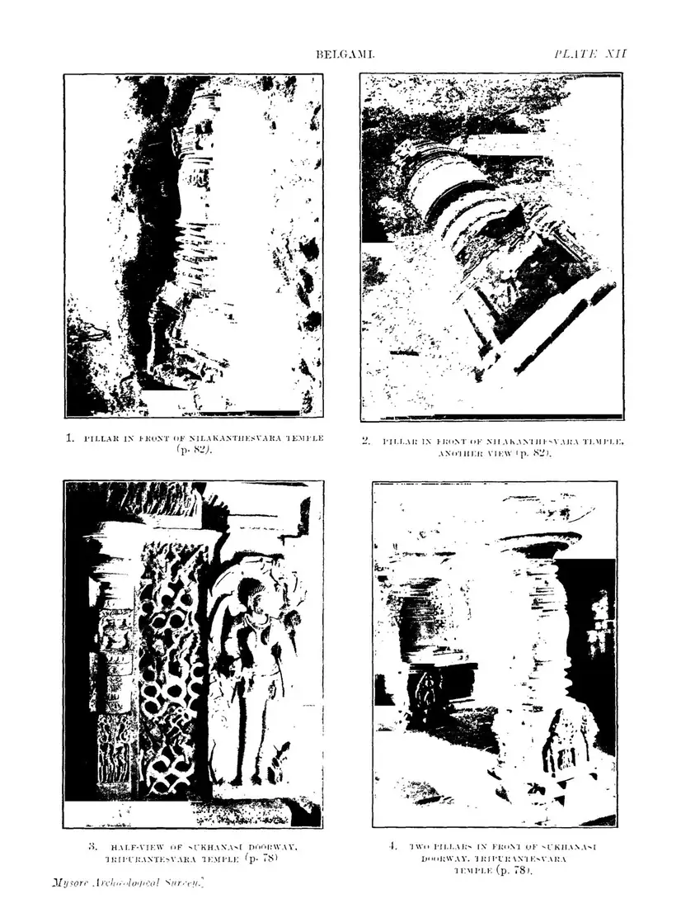
- PILLAR IN FRONT OF NILAKANTHESVARA TEMPLE (p. 82)
- PILLAR IN FRONT OF NILAKANTHESVARA TEMPLE ANOTHER VIEW (p. 82)
- HALF-VIEW OF SUKHANASI DOORWAY TRIPURANTESVARA TEMPLE (p. 78)
- TWO PILLARS IN FRONT OF SUKHANASI DOORWAY. TRIPURANTESVARA TEMPLE (p. 78)
Cited in the text: p. 82 ↩
mouldings, many of the discs being minutely carved with miniature scroll work interspersed by kirtinnukhas, small figures of Yakshas, etc., appearing in the convolutions. On other discs appear graceful figures of medallions. On the bell moulding are carved beaded garland hangings and beautiful banded designs. On the four faces of the highly ornamented vase moulding occur flying figures of Yakshas.
The basement of the temple is high and consists of five cornices of which the fourth from the bottom has dentil mouldings at intervals. The outer walls of the temple are plain. The navaranga of the temple has completely disappeared. The doorway of the vestibule is well ornamented with vertical ornamental bands on the jambs. These bands consist of rosettes, scroll work with dancing figures in the convolutions, a pilaster whose shaft is shaped like a series of vases placed one upon another, rearing lions interspersed by scroll and a rope design with medallions at intervals. Underneath each vertical band is a panel containing some figure sclupture. The extreme panels on either side have dancing figures of Śaiva dvārapālas and the other panels have female figures standing in different attitudes. On the lintel of the doorway is carved the figure of Gaja-Lakshmī. The garbhagrīha doorway also has a Gaja-Lakshmī group but the jambs are plain. The linga inside the garbhagrīha is about 2' high including the pedestal.
Full notes on the Pañchalinga temple are published in M. A. R. 1931 In the navaranga of this temple are kept the following beautiful
Panchalinga temple. images :—
1. Sūryanārāyaṇa (Pl. IX, 2).
2. Umāmahēśvara (Pl. I, Frontispiece).
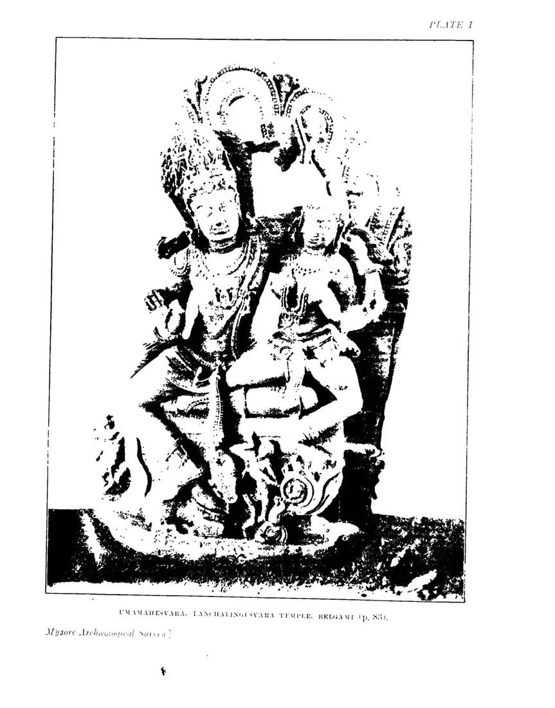
- UMANAHESVARA. IANCHALINGISVARA TMPLE. BELGAMI (p. 83)
Cited in the text: p. 83 ↩
3. Kumāra (ordinary sculpture).
4. Intertwining Nāgas.
5. Couchant Nandi.
6. Mahishāsuramardinī.
7. A Saptamātrikā panel.
To the north of the Pañchalinga temple is a dilapidated linga shrine and to its north is the Anantapadmanābha temple. In the latter temple the god Anantapadmanābha sleeps on a seven-hooded serpent, with the ten avatārs appearing on the prabhāvaļi.
Anantapadmanabha temple.
A goddess is massaging the god's right foot and another goddess is seated by the side of the god's head. From the navel of the god issues forth a lotus on which Brahma is seated. On the south pillar of the mukhamanṭapa is a Kalachurya inscription recording that the temple was built in the fourth year of Bijjala (1165 A.D.).
The open ground to the east of the temple is full of mounds containing the vestiges of old temples. Several lingas are to be found here and there.
Another Vīrabhadra temple stands about 200 yards to the west of the Jiđdikere tank. It consists of a garbhagrīha with a rude image of Vīrabhadra which appears to belong to the 16th century. But the indented pilasters on either side of the manṭapa are of the Hoysaļa period.
A few yards to the north-east of this temple is a broken image of Tārā (Pl. XI, 4) which is very beautifully carved. By its side is the image of a male god which also is beautiful. It sits in sukhāsana and wears the yajñōpavīta. Its head is unfortunately missing.
An image of Mahishāsuramardinī is lying by the side of the road leading to Ānavaṭti. To the left of the road is the Kallēsvara temple which contains a garbhagrīha and a front manṭapa.
About a hundred yards to the north of the Kallēsvara temple is a mound which marks the site of an ancient temple dedicated to Kālī. The image only is now existing. It is ten-handed and holds snake, flame (?), indistinct, sword and trisūla in the right hands and mace, đamaru, indistinct, broken and human head in the left hands. The goddess wears a jaṭāmakuṭa and moustaches. Besides the usual ornaments a yajñōpavīta and a garland of skulls are also worn by her. On either side of her are the dancing figures of attendants. The breast of the goddess is bare. The limbs are slim and the general features impressive. The image might be assigned to about the 11th century.
At a distance of about 50 yards to the west of the Kālammā temple mound is situated another ancient temple which is locally called Onake-honđada Basavanṇa temple. The structure is very much dilapidated, the slabs of the outer walls and tower having collapsed completely. The temple was perhaps built during the 9th century A.D. The inscription E.C. VII, Sk. 154 of 685 A.D. stands to the left of the doorway. It records some grant but does not mention the temple. The structure, as it now stands, contains only the garbhagrīha whose doorway is well carved with the following vertical bands on its jambs: (1) medallions; (2) scroll work with figures appearing in its several convolutions; (3) rearing lions; (4) fluted pilaster with ornamental bands and kalasa; and (5) a rope design secured at intervals by padma medallions. On the lintel of the doorway is carved the relievo figure of Gaja-Lakshuī. Inside the garbhagrīha on a broad pānipitha is set up the broken linga which is about 3' high including the pedestal. To the south-east of the temple is an Umāmahēsvara group which has an inscription on its pedestal recording that it was consecrated by one Goppa or Roppagaṇna. The characters seem to belong to about the 11th century A.D. The image is extraordinarily beautiful and is a typical example of Chālukya sculpture. The god sits with his right leg placed on Nandi. Pārvatī is seated on the god's left lap. In the four hands of the god are held the
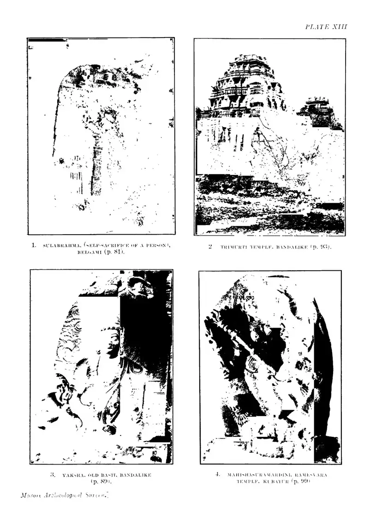
- SULABRAHMA. (SELF-SACRIFICE OF A PERSON) BELGAMI (p. 81)
- TRIMURTI TEMPLE, BANDALIKE (p. 93)
- YAKSHA, OLD BASTI, BANDALIKE (p. 89)
- MAHISHASURAMARDINL. RAMESVARA TEMPLE, KUBATUR (p. 99)
following attributes : broken, trisūla, đamaru and round Pārvati. The god wears yajñōpavita and a graceful jatāmakuṭa. His ears are however ornamented with makarakuṇdalas. The smile on the face of the god is clearly visible and renders the image highly attractive. The image of the goddess is even more attractive. Her slim waist and her well-dressed hair are very impressive. On her forehead are arranged beautiful curls. Behind her head the hair is gracefully tied up into a beautiful knot and secured by an ornament. The left leg of the goddess is placed on a lotus underneath which are carved the figures of a crocodile and a Bhṛingi goblin. The group is attended by Gapēśa on the right and by Kumāra on the left. The tōraṇa is carved with creeper scroli and rearing lions. A few yards away in front of the temple is a pavilion enshrining the image of a couchant Nandi.
Part III: Study of Ancient Monuments and Sites › Shimoga DistrictTālagunda
Āṇjanēya Temple; Virabhadra Temple; Ancient town site; Praṇavēśvara Temple
The Praṇavēsvara temple at Tālagunda has been described in M.A.R. 1932, pp. 56-57.
Anjaneya temple.
Inside the village there is a temple of Gaṅgā-dharēsvara containing a linga and a Basava of later times. To the north of the village and near a hoṇda, there is a Hanumān temple containing a Vīrāñjanēya image of the early Vijayanagar period. In front of the temple there is a tōraṇa gateway with its lintel piece carved with the figures of lion heads on either side of a padma. To the left of the padma stands a two-handed figure holding a kamaṇdalu and a staff and wearing a garland of rudrāksha.
A few yards to the west of the Hanumān temple is the Vīrabhadra temple which appears to be a Chālukyan structure of about the 11th
Virabhadra temple.
century A.D. The view of the outer walls is hidden by the recently put up mud walls all round the temple. The wide verandah of wooden pillars in front of the temple is of the 19th century. It was put up in 1814 A.D. according to an inscription that is found on one of the wooden pillars. The old temple consisted of just a garbhagriha with an open manṭapa in front. The latter has now been walled in on the east and west and a middle wall has been put up east to west and provided with a wooden doorway which, in design, follows the Hoysaṭa model and is perhaps the work of the 14th century. In the scroll convolutions of the jambs appear parrots. The wooden door is a good piece well ornamented with bands on the jambs. The stone pillars of the front row in the manṭapa have each a cubical base and a cylindrical shaft surmounted by the wheel moulding and imitation ribbed brackets. The stone doorway of the garbhagriha is Chālukyan in style and is ornamented with the usual floral, scroll and other vertical bands on the jambs. The lintel bears a Gaja-Lakshmī group. The image of Vīrabhadra in the garbhagriha is carved in imitation of Hoysaṭa sculptures and appears to be a 14th century image. The god is in the pose of marching to left holding in his four hands sword, arrow, bow and shield. He wears a garland of skulls and has moustaches. The original Chālukyan image of Virabhadra is now found half buried in the open verandah behind the temple. It is a good image.
To the north-east of the Virabhadra temple are found certain māstikals and vīragals. Among them is a māstikal looking like a pillar, about 10' high, with the hand of the mahā-sati raised up on the east side.
In the open fields further west of the Virabhadra temple appear on the ground several mounds which evidently mark the sites of the buildings of the old town of Tālagunda. Bricks resembling those of the Śātavāhana period and measuring 16\frac{1}{2}" \times 8" \times 3" are found in several places. The ancient site appears to have been extensive. The villagers say that occasionally gold fanams of small size are found on the site. These fanams might be of the Hoysaļa period. On the hill called Maṭhada-guddā to the south-east of the Praṇavēsvara temple are the ruins of a Narasimha temple. A highly mutilated figure of a god who cannot be identified, is lying on the temple site. Some 50' to the south-east of this site there is to be found an ancient watch tower called hode by the local people. It is round in plan and about 30' in diameter. It is said that there are two more of such mounds in the neighbourhood of Tālagunda: one behind the Virabhadra temple, about 250 yards from this place, and the other inside the present village of Tālagunda. To the south of the Praṇavēsvara temple also there are traces of the old town.
For the description of the Praṇavēsvara temple see M.A.R. 1932. The garbhagriha doorway jambs are carved out of Kadamba inscription stones. The workmanship of the doorway is of a later period, perhaps of the 11th century. But the pillars behind the garbhagriha doorway look much older. The southern pillar has a square base, a sixteen-fluted shaft with an eight-sided band in the middle, then a cubical moulding and finally the vase and wheel mouldings. The northern pillar has also a square base; but its shaft is eight-sided with octagonal bands and a cubical moulding surmounted by a vase and a wheel. The temple seems to have consisted originally of the garbhagriha only. But some time later, that is, perhaps during the Chālukya period, it seems to have been restored and the front manṭapa and doorway seen to have been provided.
Bandalike
Bandalike was last visited during the year 1932 and an account of some of the temples at the place was published in the annual report of the Archæological Department for that year. In this report is given an account of the other temples at the place.
Old Basti
History; Outer view; Mukhamaṇṭapa
At the north end of the tank is situated the old basti. The inscription Sk. 219 of 912 A.D. which stands at the entrance to the basti mentions a certain basadi and says that it was endowed by Jākiyable. But this is not the basti referred to in the inscription since it seems to be definitely of a later period structurally. However, it must have been constructed, at any rate, long before 1200 A.D. since, as mentioned on one of the pillars in the mukhamaṇtapa, it was renovated in about 1200 A.D.
Outer view. The upper portion of the outer walls of the garbhagriha does not correspond to the basement which is square and indented in plan and consists of three cornices of which the lower two have the uncarved dentil and other mouldings. The plan and construction of the basement appear to be similar to those met with in the Pāršvanātha Basti at Haļebīd, the Kēšava temple at Dinđagūr, etc. These and other architectural features of the temple, like the pillars, etc., definitely suggest that the basti is not of so early a date as 912 A.D. The original wall appears to have been ornamented with rows of pilasters. The basement cornices end at the south-west and north-west corners of the navaraṅga. The corner pilasters at the south-west and north-west of the outer walls have each a square base with hooded corners at the top. The shaft of each pilaster has been carved with the figure of an indented smaller pilaster issuing out of a horse-shoe design and ending in leafy hangings on either side. At the neck of the pilaster is a horizontal plain moulding with hooded corners. Above this moulding and between the hooded designs is carved a horse-shoe-shaped canopy with the figure of a padma medailion in its centre. The outer walls of the garbhagriha and navaraṅga, as they now stand, are plain and were in all probability constructed when the temple was repaired in 1200 A.D. The eaves, parapets and tower of the temple are all missing.
The mukhamaṇtapa is cruciform in plan and its basement consists of four cornices of which the third and the fourth from the bottom have dentil mouldings. Above the basement is worked a stone railing all along the outer edge of the manṭapa. The railing is divided into several panels by double columns which have cubical and eight-sided mouldings. In the panels appear flowers, dancing and obscene figures and figures of musicians resembling those on the old railing in the mukhamaṇtapa of the Pāršvanātha Basti at Haļebīd. Above these sculptured panels the railing has a scroll frieze at the top.
The eastern flight of steps of the mukhamaṇtapa is supported on either side by well-carved figures of dvārapālas just in front of the projecting bases meant for elephants or lions. Originally a stone bench ran all round the mukhamanṭapa on the inner side. The pillars standing on the bench have octagonal bases and sixteen-fluted shafts. The central four pillars of the mukhamanṭapa stand on stylobates carved with dentil mouldings. The bases are square and the shafts have the following mouldings in order from below: (1) short and sixteen-fluted, (2) eight-sided, (3) sixteen-fluted, (4) eight-sided band carved with floral design, (5) sixteen-fluted, (6) eight-sided, (7) cubical and plain, and (8) drum and wheel. The bases of these pillars as also those of the pillars standing in the outer row of the central ankana suggest that at the time of the renovation of the temple the roof of the mukhamanṭapa was raised. The central ceiling of the mukhamanṭapa is divided into thirty panels with no figures in any of them. The south-west and north-west pillars of the mukhamanṭapa form a group by themselves. Their shafts are square and indented, each indented face being divided by three cornice bands into nine panels. In these panels are carved floral designs as follows: The middle panel at the bottom of each face has a lotus with stalk. The side panels at the top have leafy representations. Above these panels the four faces of the shaft have graceful horse-shoe-shaped canopies on either side of which the corners of the shaft have hooded mouldings. Above the canopies the drum mouldings appear surmounted by a square and indented abacus. The brackets above the abacus are ribbed in the Chōla pattern.
Navaraṅga
Vestibule; Garbhagrīha
No heading in the body: this section starts at its printed page (88).
The east outer wall of the navaraṅga has a middle cornice band ornamented with single flowers between single columns. The navaraṅga doorway is a well-carved soap-stone piece ornamented with jambs cach of which has a base with a group of Rati and Manmatha and a seated Yaksha carved on it. Above the base there are five vertical bands as follows: (1) floral, (2) rope design secured at intervals by square padma medallions, (3) a pilaster shaped like a plantain tree with its shaft gracefully intertwined by a creeper and with figures of Yakshas carved on it, (4) a square pilaster whose front face is carved with low relief figures of horse-shoe-shaped canopies and creeper and floral designs, and (5) a vertical scroll band having in its convolutions seated figures of Yakshas. This scroll ornamentation is carried over the lintel of the doorway. Above the doorway the eaves have a row of geese below them and horse-shoe-shaped arches on their front face. Each of the jambs of the doorway has the carving of a chakrabandha with an inscription inscribed in it.
The navaraṅga is a hall of nine ankanas whose central pillars are fully developed specimens of the lathe-turned bell shape with leaf moulding as at the Kēdārēśvara temple in Haṛebīd. These pillars and the doorway above described indicate that the Hoysaṭas closely followed the architectural traditions of the Chālukyas. The beams are ornamented with dentil mouldings and their undersurfaces have the carvings of padmas in good relief. The central ceiling of the navaraṅga is flat and divided into nine panels which have no figures in them.
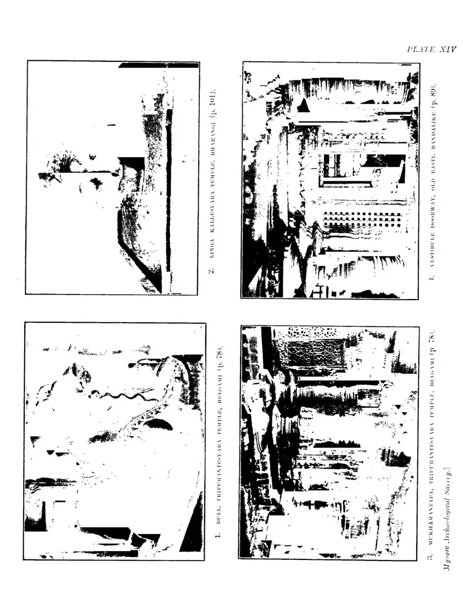
- BULU, TRIPURAN RESYARA TEMPLE, BELGAMI (p. 78)
- LINGA KALLESYARA TEMPLE, BIHARANGI (p. 101)
- MURKAMATAA, TRIPURAN RESYARA TEMPLE, BELGAMI (p. 78)
- VESTIBLE DOORWAY, OLD BASTI, BANDALIKE (p. 89)
In the south-west corner of the navaranga is a very good image of a Yaksha seated under a tree whose large leaves remind us of those met with at Ellõra (Pl. XIII, 3). On the branches of the tree are perching monkeys. The corresponding Yaksha on the opposite side is missing. The Yaksha is two-handed holding lotus in his right hand. His left hand is broken. His ornaments consisting of the kirîta, padma car-rings, necklaces, etc., are all boldly carved in high relief and the Yaksha wears also a yajñôpavîta. The curls of his hair add charm to the facial expression and there is a pleasing smile depicted on his lips. The chin and the brows are clearly marked.
On either side of the vestibule doorway there are perforated screens whose bands are carved with padma medallions (Pl. XIV, 4). On the jambs appear indented pillars. In the two side aukapas on either side of the doorway there are turreted niches which originally enshrined images. The towers of these niches have the usual dentil and other mouldings which are mostly uncarved. On the upper lintel of the vestibule doorway appears under a graceful makara-tõrapa and serpentine arch the image of a seated Jina under a kîrtimukha. The image is very probably Śāntinātha mentioned in the inscription of 1200 A.D. mentioned above. Above the head of the image is a mukkode and on either side are the usual chāmara-bearers and standing Jinas. The ceiling of the vestibule is now damaged. It originally consisted of nine panels with the carving of a padma in the centre.
The garbhagriha doorway is also well-carved like that of the vestibule. Above the lintel is a row of turrets of varied designs. Two of the turrets are curvilinear as at Puri and Jagamāth. The occurrence of such turrets is interesting. The inside walls of the garbhagriha have a middle cornice band. The ceiling of the garbhagriha has a well-carved padma in its centre. The beams, like those of the navaranga and the vestibule, have been carved with dentil mouldings. The garbhagriha is now empty.
Garbhagriha.
Virabhadra Temple
Main image; Mahishāsuramardinī; Vishṇu; Chaturmukha Brahma
About 50 yards to the north-east of the basti stands the temple of Virabhadra which appears to have been built in the 14th century. Main image. The image of Virabhadra is well executed with a serpentine and creeper tõrapa. The god is in the pose of marding to the left holding in his four hands sword, arrow, bow and shield. He wears moustaches and runđa-māla.
The outer walls of the temple as also those of the front mantaja have been constructed in recent days. To the west of the temple is a mound on which is standing an image of Mahishāsura-mardini whose eight hands are disposed as follows:
Mahishasuramardini.
12 spearing demon, holding sword, holding chakra, holding arrow, holding śankha, holding bow, holding buckler and placed on demon's head. On the tōraṇa of the image appears a creeper design. The image is perhaps one of the Śivapañchāyatana group.
To the north-west of the temple is lying a mutilated image of a four-handed god, perhaps of Vishnu, which also appears to have belonged to the Śivapañchāyatana group. In front of the temple is lying a lathe-turned bell-shaped pillar of the Chālukya times.
About 20 feet away to the north of the temple can be traced the mud fort wall of the old town of Bandalike. A few feet further north is
Chaturmukha Brahma. set up a pillar, about 2' high, on a plain pedestal. On each of its four corners at the top is carved the head of a god wearing a ribbed tiara. The god represented is perhaps Chaturmukha Brahma.
Sōmēśvara Temple
History and description; Sculptured screens
In the north-east corner of the old Chālukyan town site is situated the Sōmēśvara temple. It is called the Ānekal Sōmayya temple and was constructed in 1274 A.D. by a certain Boppa Seṭṭi (E. C. VII, Sk. 236). The structure is homogeneous and consists of three cells arranged on the three sides of a raṅgamaṇṭapa whose doorway is facing east. The main cell only has a closed vestibule in front. The other two cells exist on the north and south sides of the navaraṅga hall. The outer walls of the temple are raised on a basement consisting of three cornices of which the third from the bottom has been ornamented with dentil mouldings. The main cell, its vestibule and the navaraṅga are all square in plan with indentations here and there. The outer walls are plain except for a middle cornice band all round. This band bears a frieze of rhonboidal padmas. In the north-east and south-east of the temple these padmas bear in their centre dancing and indecent figures. The eaves are short and plain. In front of the temple the architrave bears a row of single flowers between single Dravidian columns. There appear to have been existing originally two elephants in front of the temple. These are now mutilated; but they show good workmanship.
There was perhaps a narrow porch in front of the navaraṅga formerly as at the Sōmēśvara temple at Belgāmi. In the two outside ankaṇas of this porch are two beautifully sculptured perforated screens.
Sculptured screens. Their square perforations are divided by circular small panels bearing relief figures of gods, Yakshas, swans, lions, etc. Between the rows of perforations are broader bands or friezes depicting the episodes of the Rāmāyaṇa on the south and of the Mahābhārata on the north:—
SOUTH SCREEN—(road from bottom).
7th Frieze (from top) :
1. Rāma and Lakshmaṇa standing.
2. Rāvaṇa in durbār.
3. Sitā in Aśōkavana.
Perforations interspersed by medallions depicting gods.
6th Frieze :
1. Rāma and Rāvaṇa fighting.
2. Rāma, Sitā and Lakshmaṇa with monkeys.
Perforations interspersed by medallions bearing lions.
5th Frieze :
1. Hanumān and the Rākshasas fighting. Behind Hanumān are several other monkeys. To extreme left are Rāma and Lakshmaṇa.
Perforations interspersed by medallions bearing geese.
4th frieze :
1. Hanumān and other monkeys reporting to Rāma.
2. The monkeys bridge the ocean.
Perforations interspersed by medallions bearing lions.
3rd frieze :
1. Rāma and Lakshmaṇa in quest of the māyāmṛiga.
2. Rāma shooting the māyāmṛiga.
3. Deer and bear in the jungle.
4. Rāvaṇa as yati before Sitā.
5. Rāvaṇa abducting Sitā.
Perforations interspersed by medallions bearing geese.
2nd frieze :
Battle between Rāma and the Rākshsas led by Khara and Dūśhaṇa.
Perforations interspersed by medallions bearing figures of elephants.
1st frieze :
1. Rāma's coronation.
2. Daśaratha with his three queens.
3. Queen Kaikēyi planning to send Rāma into exile.
NORTH SCREEN—(from bottom to top) :
1st frieze :
1. Kauravas and Pāṇdavas at dice.
2. Bhīma shaking the Kauravas off their tree perch.
Perforations interspersed by medallions bearing elephants.
2nd frieze :
1. Karṇa and Arjuna fighting.
2. Gōgrahaṇa.
Navaraṅga
No heading in the body: this section starts at its printed page (92).
Perforations interspersed by medallions bearing geese.
3rd frieze :
1. Arjuna and Bhīshma fighting.
2. Bhīma killing Duśśāsana. Draupadī stands to left with her loose tresses.
3. Arjuna and Drōṇa fighting.
Perforations interspersed by medallions bearing lions.
4th frieze :
Arjuna and Karṇa fighting.
Perforations interspersed by medallions bearing geese.
5th frieze :
Bhīma fighting Bhagadatta.
Perforations interspersed by medallions bearing figures of gods.
6th frieze :
Bhīma and Duryōdhana fighting.
Perforations interspersed by medallions bearing figures of gods.
7th frieze :
Śiva seated in state. Below him are Gaṇēśa, Nandi and Kumāra. To the right are a female attendant, Brahma and Sarasvatī. To the left are Vishṇu and Mahishāsuramardinī.
The navaraṅga doorway is well carved with ornamental vertical bands on the jambs and figures of dvārapālas, Rati and Manmatha on either side. The vertical bands are as follows: floral, creeper, indented pilaster, scroll and floral with square and round medallions. On the lintel is the figure of Gaja-Lakshmī. The eaves above the doorway are indented and ornamented with garland and leaf designs and dentil mouldings.
The navaraṅga is a hall of nine ankanas with six turreted niches in the side walls. In the central square of the hall there are four lathe-turned bell-shaped pillars whose mouldings bear the rope, padma, leaf and garland ornamentations. On some of the leafy designs are carved minute figures of bull, elephant, lion and peacock. The wheel moulding has an ornamental band secured at intervals by padma medallions. The central ceiling of the navaraṅga is divided into nine panels in each of which is an ornamental padma.
The doorway of the south cell is guarded by Śaiva dvārapālas. The north cell doorway has kalaśas on either side and the figure of Gaja-Lakshmī on the lintel. Both the cells are empty.
The doorway of the vestibule is a very good piece guarded by lady attendants on the jambs and having prforated screens on either side. The
Main vestibule and cell
The ceiling of the vestibule is raised on two sets of corner stones with a boldly carved padma in the centre. The doorway of the main cell has the figure of Gaja-Lakshmī on the lintel. The jambs of the doorway are plain. The inner walls of the cell have a cornice in the middle. The main linga of the temple, called the Sōmēśvara linga, is about 2½' high including its pedestal. It is flat-headed.
Trimūrti Temple
General description; Outer view; Navaraṅga
The Trimūrti temple is a triple celled structure of the Chālukyan period (Pl. XIII, 2). It stands at a distance of about 10) yards to
General description. the north-west of the Sōmēśvara temple. It consists of three cells all of which had originally stone towers above them. The western tower has now collapsed ; but the other two are existing.
In plan the structure resembles the Chaṭṭēśvara temple at Chaṭchaṭhallī (see M.A.R. 1934 pl. XX, 2). The cells are square in plan and
Outer view. the walls have been built with several indentations. The basement consists of three cornices of which the middle one has the uncarved dentil and other mouldings. The outer walls are relieved by square-shaped and cruciform pilasters, and turret-bearing niches and pilasters. Some of the turrets have serpentine kīrtimukha arches above them.
Each of the towers rises in three tiers of turrets and each turret has several cornices of which the mouldings are mostly uncarved. The corners of the tiers have square-shaped turrets, while their sides have the boat-shaped ones. The latter bear kīrtimukha arches under which images like Lakshmī-Narasimha, Bhairava, etc., stand or are seated. There are projections in front of all the three towers. The projection over the western vestibule had originally a Tāṇḍavēśvara group under a simhalalāṭa.
There is no mukhamaṇṭapa now in front of the navaranga. A mutilated bull sits in the open. The navaranga doorway is absent. The Navaranga. navaranga hall has in its central ankaṇa well developed specimens of the Chālukyan lathe-turned bell-shaped pillars. On the bell appears leafy and other designs in low relief. The ceilings of the navaranga are flat and have padma carvings of varied design. The central ceiling which is also flat is divided into nine panels, each panel having a padma. The architraves have dentil and rhomboidal floral ornamentations. The inner walls of the hall have six turreted niches of which one enshrines a Saptamātrika panel and another a broken Gaṇapati. The doorways of the cells are well worked with indented bell-shaped pilasters on the jambs and perforated screens on the sides. On the lintels appears the Gaja-Lakshmi group. On the upper lintel of the southern doorway and under a serpentine tōraṇa stands Śiva attended by Gaṇapāti and Brahma (?) and Vishṇu and Mahishāsuramardini. On the upper lintel of the western doorway stands a similar group of Śiva attended by similar attendant figures. The upper lintel of the northern cell has Kēśava attended by Gaṇapati, two lady attendants and kneeling Garuḍa on the right and another kneeling figure, two chāmara bearers and Mahishāsuramardini on the left. The makaras from whose fangs issue the serpentine tōraṇas are all ridden ones.
The western and southern cells enshrine flat-headed lingas ; but the northern cell has a good figure of standing Vishṇu of whose four hands three are broken and the existing one holds chakra. The image is about 5½' high including the tōraṇa. The ten avatārs are carved on the tōraṇa. On either side of the god stand lady attendants. The image stands in samabhaṅga and is well decked with the usual ornaments.
Part III: Study of Ancient Monuments and Sites › Shimoga District › BandalikeCells
Part III: Study of Ancient Monuments and Sites › Shimoga DistrictChikkamāgaḍi
Chikkamāgaḍi is a village situated at a distance of about four miles to the north of Bandalike. Among the ancient monuments at the place two at least deserve mention. One is a Jain Basti now called the Basavaṇna temple and the other is the Kallēśvara temple.
Jain Basti
General description; Outer view; Navaraṅga; Garbhagrīha
The basti is now converted into the Basavaṇna temple. It consists of a garbhagriha, a closed vestibule, and a navaraṅga with no porch. On either side of the flight of steps leading up to the navaraṅga doorway there are projections on which, perhaps, were formerly existing elephants. The garbhagriha and navaraṅga are square in plan and are indented. The basement consists of three cornices of which the third from the bottom has dentil mouldings. The outer walls are plain and have, like the outer walls of the Sōmēśvara temple at Bandalike, a middle cornice ornamented with rhomboidal flowers. Above the walls there are three cornice mouldings of which the two that are below have uncarved dentil and other mouldings. The eaves are sharp and relieved at intervals by kīrtimukhas. The tower is a stepped pyramid consisting of seven tiers of cornice mouldings decorated with dentil designs. In front of the tower there is a projection over the vestibule the front face of which has been carved with a pleasing simhalalāṭa under which is the figure of a standing Jina.
The navaraṅga doorway is plain except for the cruciform pilasters appearing on either side. The four central pillars of the hall have each two large cubical mouldings between which appear circular and sixteen-sided mouldings. On the faces of the base of each pillar are carved relievo figures of kalaśas. The ceilings of the navaraṅga bear good figures of padmas resembling jewellery work. The central ceiling has been divided into nine panels in each of which is carved a padma. The beams are ornamented with padmas and dentil designs. In the western wall of the hall there are two niches which are both empty.
Navaranga. The vestibule doorway is plain having screens on either side without perforations. The garbhagriha doorway is also plain. Inside the garbhagriha is installed in recent times a bull on a pītha.
Garbhagriha.
Kallēšvara Temple
Navaranga; Kēšava; Šiva
The Kallēšvara temple is a dilapidated structure. Its outer wall slabs have all disappeared. The original doorway of the temple appears to have been on the east side. The temple seems to have been a triple-celled structure and similar in type, to the three-celled Chālukyan structures found in the Davangere Taluk ( see M.A.R. 1939).
The four central pillars of the navaraṅga have the usual cubical, eight-sided and sixteen-fluted mouldings. The roof of the structure is low and the ceiling of the central ankaṇa of the navaraṅga hall is raised on two sets of corner stones with padma in the centre.
Navaranga. The western and southern cells have lingas inside them, while the north cell enshrines an image of Kēsava which is about 5\frac{1}{2}' high including its pedestal. This image is well-carved with the ten avatārs of Vishṇu appearing on the prabhāvali. The ceiling of this cell has the design of a padma in its centre.
Siva. All the vestibules are open and have a common navaraṅga. To the left of the main cell is a three-headed and eight-handed image of Śiva holding the following attributes: abhaya, trident, skull-headed mace, an arrow, drum, broken, broken, and broken. The god is seated in padmāsana. All the three heads wear jatāmakutas. The tōraṇa is carved of the same stone.
The outer walls of the main cell are built of bricks measuring 12" X 6" X 2". The bricks are possibly of the Vijayanagar period.
Part III: Study of Ancient Monuments and Sites › Shimoga DistrictMaļavalli
Pillar Inscription; Kallēšvara temple; Stray images; the Fort; Ancient Site
Malavalli is an insignificant village situated at a distance of about 5 miles to the east of Narasāpura near Bandalike. The only interesting monument at the place is an eight-sided pillar bearing the famous Malavalli inscriptions (E.C. VII, Sk. 263, 264).
The pillar is of soap-stone and on it are engraved two important inscriptions : one of the time of Vinhukađla-Chuṭukuđānanda-Šātakarṇi
Pillar inscription. and the other of the time of Kadamba Rāja (? Mayūra Šarma). The inscriptions mention the god Maṭṭapatṭi-dēva whose temple is no longer in existence. The tempie of this god was probably standing a little distance to the west of the pillar.
To the north of the pillar is standing a temple dedicated to Kallēśvara with an old black stone linga in its garbhagriha. The pānipiṭha of
Kallesvara temple. the linga is turned to the north though the cell has its doorway facing south.
To the right of the temple there is a potstone image of Bhairava which seems to belong to the Chālukya period.
Stray images. At a distance of about 20 feet to the south of the pillar there is a linga whose shaft has its four faces carved with figures of heads like the Chaturmukha-B almēśvara at Bandalike.
A mud and rubble bastion, about 25' high, belonging to a fort wall of the Pāllēgār period is situated at a distance of about 30 yards
The fort. to the south of the pillar. The bastion is provided with musket hoics.
To the north-east of the bastion is a modern temple of Hanumān containing in its main cell a small relievo figure of Āñjanāya in the striking attitude. The image seems to be of the Pāllēgār period and the existence of the bastion nearby suggests that it is Kōṭe-Āñjanāya. The gateway of the fort probably existed beside this temple.
At a distance of about two furlongs to the east of the village and to the north of the tank called the Tāmrakatṭe there is a field called Halla-
Ancient site. kalu which is full of varied pottery consisting of red ware, blackware, etc. But polished specimens are not found.
It is reported, however, that large-size bricks are found here and there in the fields.
Kubatūr
Kāli shrine; Old manťapa; Durgā shrine; Old inscriptions; Pāršvanātha Basti; Rāmēšvara Temple
The village of Kubaṭūr was last visited during 1931 and an account of the Kaiṭabhēśvara temple at the place was published in the Annual Report of the department for that year. During the year under report a survey of the other temples standing on the ancient site of the village was made and it is found that the ancient town was indeed a very extensive one and contained several temples some of which appear
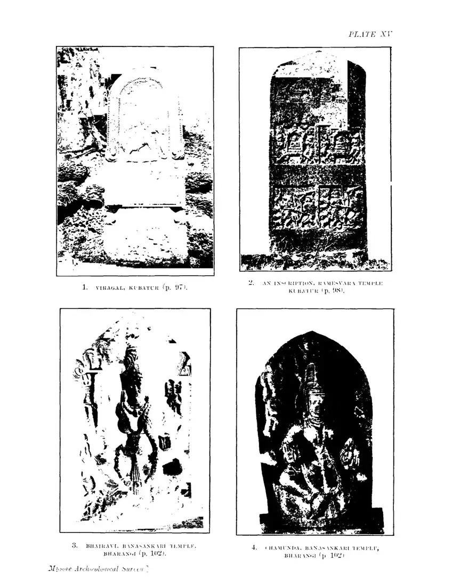
- VIRAGAL, KUBATUR (p. 97)
- AN INSCRIPTION. RAMESVARA TEMPLE: KUBATUR (p. 98)
- BHAIRAVI. BANASANKARI TEMPLE. BHARANGI (p. 102)
- CHAMUNDA. BANASANKARI TEMPLE, BHARANGI (p. 102)
to be very important owing to the fact that they seem to have existed from even the Rāshṭrakūṭa times.
At a distance of about a hundred yards to the west of the Kaiṭabhēśvara temple is a modern structure built for the goddess Kālī. The site perhaps marks the spot of an older temple that existed. In front of the temple is lying the head of an image which appears to have been brought from elsewhere and kept here. It wears moustaches and a small kirīṭa. The villagers point it out as the head of Dushṭabuddhi.
About 50 yards to the west of the Kāli temple there is a manṭapa borne on four stone pillars of the Gaṅga or Rāshṭrakūṭa type. Each of the pillars rises on a square base and has a shaft consisting of a small eight-sided moulding at first and then a cylindrical moulding overlaid by two cylindrical bands of which the lower is larger than the upper. Above the cylindrical moulding there is a drum. A few feet to the north of the pillar stands a vīragal.
Proceeding westwards we pass through a hamlet to the west of which there is a large tank which seems to be very old as can be seen from the old pillars of the sluice. On the western bund of the tank is a dilapidated manṭapa inside which is an image of a four-handed Durgā holding sword, trident, drum and bowl. The image is rudely executed. The two pillars in front of the image are of the flattened bell-shape type with relievo carvings of horse-shoe-shaped arches, triangular designs and hooded corners and bearing ribbed brackets in the Chōlā style. In front of the temple there are several vīragals and inscriptions of the Chālukya period.
At some distance to the north of the tank is a modern structure enshrining a 17th century image of Gaṇēśa. In the north-east corner of the temple is set up a vīragal inscription, possibly of the Rāshṭrakūṭa period, with the representation of the figure of an elephant at the top (Pl. XV. 1). A similar inscription stone is set up on the platform of a peepul tree a little distance further north. Beside the latter inscription there are several vīragals among which there is one on which is carved a well-represented vimāna surmounting horse shoe-shaped arches.
Under a neem tree standing at some distance further north there is an inscription of the Chālukya period. By the side of the inscription there is an image representing Pārvatī-Paramēśvara. Behind Paramēśvara a buil is standing. The god is two-handed. In his right hand is held a lasso and in his left a severed head. The image is about a foot high.
A little distance to the north is a temple dedicated to the god called Mailāra. In front of the temple, that is, to its south-east there is set up another inscription of the Rāshṭrakūṭa times and on it are carved relievo figures of an elephant on the obverse and a kalaśa on the reverse.
13
Immediately to the north of the village there is an old basti dedicated to Pārsvanātha. The basti was constructed in 1077 A.D. but in later times its outer walls were built of laterite blocks. The structure has now become dilapidated and in its present state consists of a garbhagriha with a front long manṭapa and an ardhamanṭapa. The basti seems to have had a large mukhamanṭapa in front. The four pillars in the long manṭapa are of the lathe-turned bell-shape type of the Chālukya period. The ceiling of the manṭapa has been raised on two sets of corner stones with a well-carved padma in the centre. The two pillars of the ankaṇa in front of the garbhagriha form a good pair and consist each of a cubical base and an eight-sided shaft whose corners have pairs of symmetrical leafy or hooded reliefs on either side of an indented drum design. Above the eight-sided moulding rises another cubical moulding surmounted by an indented vase moulding and an indented wheel-shaped moulding. In front of the garbhagriha are found the following images :—(1) a seated Nāginī (left), (2) a standing soap-stone Pārsvanātha under a seven-hooded serpent and mukkođe and (3) a standing Chandranātha under mukkođe. The main image of seated Pārsvanātha in the cell is of very good workmanship. The image sits in dhyānāsana under a mukkođe and a seven-hooded serpent. On the two sides of the image there are the images of the attendant chauri-bearers wearing kirīṭa and other ornaments. The tōraṇa behind the main image has a scroll ornamentation. The image sits on a lion pedestal which is cruciform in plan and indented bearing the relievo figures of lions seated on their haunches. The doorway of the garbhagriha has its jambs carved with the following vertical bands : rosettes, creeper, pilasters, rope design with square medallions, and floral. On the lintel of the doorway is depicted the figure of Pārsvanātha seated like the main image.
At a distance of about 50 yards to the north of the basti is situated the Rāmēśvara temple which from the outside looks more like a modern house. Really, however, it appears to be one of the oldest monuments in the village and almost intact inside. The outer walls have all been rebuilt, in recent times, in mud and the temple is provided with an ordinary tiled-roofing. In inscription No. Sorab 269 of 1065 A.D. the temple is mentioned as having been restored (Pl. XV, 2). Thus the original structure may be assigned to C. 900 A.D. and may be taken as a typical Rāshṭrakūṭa monument judging from the pillars and the central ceiling in the navaraṅga. The navaraṅga doorway is of hard trapstone like the other architectural members of the temple. On the jambs of the doorway appear the following vertical bands : rosettes, scroll and a rope designed pilaster issuing out of a kalaśa-like creeper and ornamented with transverse beaded ornamentation, scroll work and square medallions on the shaft. On the lintel of the doorway appears a Gaja-Lakshmī group. The goddess is seated below a horse-shoe-shaped arch which is hidden from view. On either side of the doorway was a railing ornamented with lion faces. The southern railing only is existing.
Ramesvara temple.
The temple consists of a garbhagrīha with an inner pradakshiṇā and of a front rangamaṇtapa. The four central pillars of the manṭapa are modelled like those of the Nandimaṇtapa standing in front of the temple. Each of them rises on a cubical base and has a cylindrical shaft overlaid by cylindrical bands as in the maṇtapa to the west of the Kāli shrine behind the Kaiṭabhēsvara temple. Above the cylindrical moulding rises the bell-shaped moulding. It appears that from such bell-shaped moulding the later Chālukyan form developed. Above the bell-shaped moulding appears the wheel-shaped moulding surmounted by the ribbed brackets. The central ceiling of the navaraṅga is exquisitely worked like the ceiling at the Kallēsvara temple in Aralaguppe. It is divided into nine panels each of which is boldly carved with figure sculpture. The figure of Tāṇdavēsvara is carved in the central panel and those of the Ashṭadikpālakas are carved in the outer panels. Among the figures of the Ashṭadikpālakas those of Aṇni and Kubēra are wrongly transposed. The central panel is marked off from the rest by bands ornamented with scroll work and padma medallions, the convolutions of the scroll being carved with figures of Yakshas some of whom are dancing, some playing on musical instruments and others flying with garlands. In the central panel Śiva dances on the demon Andhakāsura in a vigorous pose. He wears a long flowing ruṇdamālā and jaṭāmakuṭa among other usual ornaments. To the left of Andhakāsura is seated Nandi above whom is the figure of Pārvatī. To the right of the prostrate Andhakāsura there are two drummers of whom one beats on a double drum and another on a single drum. Above the drummers is a cymbalist behind whom is the representation of a lotus. Above the cymbalist is a two-handed figure seated with folded arms. Further above is Ganapati and at the left corner is Kumāra with a two-handed seated figure of a goddess below. Śiva is eight-handed holding the following attributes: svargahasta, chiṭṭetāla, cobra and rosary, trident, drum, cobra, chiṭṭetāla, and stretching gracefully towards the right hip. The figure of Śiva is slim and boldly outlined with vigorous expressive face and limbs. The outer panels are carved with figures of the Dikpālakas in the following order proceeding from the east clockwise: Indra on elephant, Kubēra on horse (mistake of the artist—there ought to have been Agni). Yama on buffalo, Niruti on man, Varuṇa on makara, Vāyu on deer, Agni on ram (mistake for Kubēra). and Ķśāna on bull. Each one of these figures is boldly carved with graceful figures of attendant musicians and Yakshas several of whom are in the pose of flying among the clouds. The musicians consist of drummers, cymbalists and gong-players. Even the vehicles of the Dikpālakas show life and movement.
The ceilings to the east and west of the central ceiling have good figures of padmas. In the navaraṅga are placed a large Saptamātrika panel and a very good figure of Mahishāsuramardinī (Pl. XIII. 4). In the latter group the demon is shown as issuing from the body of a buffalo and as being speared by the eight-handed goddess to whose right is her vehicle, the lion. The image is very forceful, though carved of hard trap stone.
Chintāmaņi Narasimha Temple
No heading in the body: this section starts at its printed page (100).
The doorway of the garbhagriha is also well carved like the navaranga doorway. Inside the garbhagriha the Rāmēśvara linga is set up on a pānibaṭlu and is about 2\frac{1}{2}' high. In front of the garbhagriha doorway is a chandra-śila which resembles the one at Gauja.
In front of the temple there is a Nandimanṭapa whose walls have, in recent days, been built of mud. The roof is tiled. But the pillars of the manṭapa are ornamented like those of the navaranga. They have cubical bases and cylindrical shafts containing the following mouldings in order from below: eight-sided, eight-sided and short, a cylindrical beli-band, and a wheel band. The shaft is surmounted by a wheel moulding above which the brackets are simple. The stone used for the carving of these pillars is hard trap stone. The bull in the manṭapa is very well carved with ornaments, jingles and bells. Its two horns are broken. The snout is projecting a little upwards. Viewed from one side it looks very natural.
To the south-east of the temple are placed several nāga stones of which one represents a figure standing under a five-hooded nāga.
At a distance of about 200 yards to the west of the village is situated the Chintāmaṇi Narsimha temple. It seems that such temples of Chintāmaṇi Narasimha are peculiar to the Shimoga District. There is a Chintāmaṇi Narasimha temple at Kūđli and another at Kuppagađđe. The area between the village of Kubatūr and the Chintāmaṇi Narasimha temple is full of mounds of old houses. It is probable that the old town site extended to this part also. Ruins of ancient mud fort walls can be traced in several places.
The image of Narasimha in the garbhagriha of the temple is a two-handed figure sitting with the right knee folded up and the left disposed in padmāsana. The image wears the face of a natural lion as the one at Kūđli.
A few yards to the south-west of the Narasimha temple is standing a four-handed image of Vishṇu holding gadā, śankha, chakra and padma. It is called Satyanārāyaṇa by the people. It is a relievo figure belonging, perhaps, to the Vijayanagar period.
Part III: Study of Ancient Monuments and Sites › Shimoga DistrictBhārangi
The village of Bhārangi is an insignificant place situated at a distance of about 8 miles to the east of Ānavaṭṭi. But it contains several old temples and a basti of the Chalukya period.
The basti consists of a garbhagriha, a closed vestibule, a navaranga and a porch. It appears to date from about the Chālukya period. The outer walls are plain and rise on a basement consisting of four plain and flat cornices. The parapet on the east has the figure of a Jina standing under a mukkođe. The navaranga doorway is designed like the usual Chālukyan doorways. The four central pillars of the navaranga have
Jaina Basti
Kallēšvara Temple; Nārāyaṇa Temple; Mallikārjuna Temple; Banašankarī Temple; Images
cubical, eight-sided and sixteen-fluted mouldings. The central ceiling is raised on two sets of corner stones. On either side of the vestibule doorway there are perforated screens. The present image in the garbhagrīha is of marble and evidently of the modern days. It appears very much like the Buddha images without ushnīsha. The old image of Pārśvanātha is missing. Some of the broken parts of this image are lying in the compound of the temple.
Near the tank of the village is situated the Kallēśvara temple. Like the temples in the Dāvangere taluk this structure consists of three cells arranged on the three sides of a common navaraṅga. The linga is in the main cell, Sūrya in the east cell and Vishṇu in the west cell. The roof of the temple is low. The main cell has a closed vestibule in front. The pillars of the navaraṅga are short, bell-shaped and lathe-turned. Inside the navaraṅga there are the following images: (1) Vishṇu holding padma, chakra, śankha and gadā with the ten avatārs on the prabhāvali; (2) Sūrya; (3) a Saptamātṛika panel; (4) three bhakta figures seated in a row with folded hands; (5) Mahishāsuramardinī, and (6) Kumāra. The ceiling of the navaraṅga is raised on two sets of corner stones with a padma in the centre. The doorway of the vestibule has scroll ornamentation on the jambs and is guarded by male dvārapāla figures on either side attended by female chauri-bearers. There are also perforated screens on either side of the doorway. The lintel has a Gaja-Lakshmī group under a serpentine tōraṇa issuing from the fangs of makaras. To the right of Lakshmī stands Brahma and to her left Vishṇu holding abhaya with padma, chakra, sankha and gadā. In the vestibule is a couchant Nandi much damaged. The garbhagrīha doorway is plain with Gaja-Lakshmī on the lintel. Inside the garbhagrīha the main linga is human-faced with phālāksha brows, eyes and moustaches (Pl. XIV, 2).
Near the waste-weir of the tank of the village stand three dilapidated structures of the Chālukya period. Of these one is dedicated to Narāyaṇa and contains at present only one cell. The image is Janārdana in form with the ten avatārs carved on the tōraṇa. The workmanship of the image is rude and it is very probable that the image hails from about the 14th century. At the entrance to the temple are lying two mutilated Chālukya images. One of them which is headless is possibly Brahma judging from the kamandalu that appears in the left lower hand of the image. The other image is that of Sūrya.
The Mallikārjuna temple standing at a little distance from the Nārāyaṇa temple is also much ruined. In its navaraṅga the four Mallikarjuna temple. central pillars are short with cubical, eight-sided and sixteen-fluted mouldings. The linga in the main cell is missing. The temple was built in 1178 A.D. according to the inscriptions.
The third temple in the group is the Banašankarī temple. It is also of the Chālukyan period and is mostly dilapidated. In its Banasankari temple . navaranga or front manṭapa the two front pillars have the usual cubical, eight-sided and sixteen-fluted mouldings. The other two pillars, however, have cylindrical shafts rising on cubical bases. The ceiling is raised on two sets of corner stones with a padma in the centre. The garbhagrīha is divided into compartments by two pillars whose shafts have hooded mouldings at the corners and are rectangular in section with three indentations at the corners and with hour-glass-shaped mouldings on the faces. In the middle of the shafts and at the top appear three cornice bands. The bases of the pillars are cubical.
In the garbhagrīha of the temple are enshrined the following images commencing from the left :—
1. A two-handed lady attendant—Hands broken. Appears to hold padma in the right hand. It may be Pārvatī.
2. Four-handed Śiva standing with Pārvatī under a serpentine tōraṇa (Pl. XVI, 1). He holds lasso, a trident, an arrow and a bow. On either side of Pārvatī there are lady attendants. To the right of Śiva there are a boar and two dogs with the figure of Arjuna doing penance. The loin cloth of Śiva is hanging. The god wears rudrāksha and his hair is disposed in curis. There is no kirīṭa on his head.
3. Two-handed Śiva, (Pl. XVI, 2) with lasso in the right hand and arrow and bow in the left. The figure wears kirīṭa.
4. Two-handed goddess seated holding phala (?) in the right hand and kalaśa in the left hand. The image possibly represents Annapūrnā (Śākambharī). The contour of the limbs, the muscles, the folds on the belly and other features are all very well shown. In workmanship this image happens to be the best of the lot.
5. Four-handed Bhairavī (Pl. XV, 3) seated with a dog on the pedestal, and with goblins and naked female figures dancing in the right field. The dog licks the blood from a severed human head. The goddess wears ruṇḍamālā and has phālāksha and canine teeth. On her head is a jatāmakuṭa. Her grin is terrible, though the other facial features are beautiful. In her four hands are held sword, trident, drum and bowl.
6. Four-handed Chāmuṇdā (Pl. XV, 4) holding rosary with abhaya, chakra, śankha and phala. On her left lap is the figure of Skanda represented as a baby. On the pedestal is depicted the figure of Garuḍa.
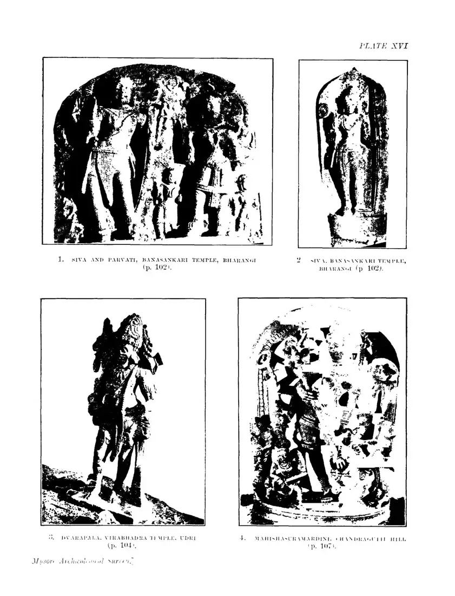
- SIVA AND PARVATI, BANASANKARI TEMPLE, BHARANGI (p. 102)
- SIVA, BANASANKARI TEMPLE, BHARANGI (p. 102)
- DVARAPALA, VIRABHADRA TEMPLE. UDRI (p. 104)
- MAHISHASURAMARDINI, CHANDRAGUTIH, HILL (p. 107)
Part III: Study of Ancient Monuments and Sites › Shimoga DistrictKuppagađđe
Vēņugōpāla Image; Ālēšvara Temple; Chintāmaņi Narasimha Temple
A note on the temples at Kuppagadđe is published in M.A.R. 1931. In the Vēnugōpāla temple which is a modern tile roofed structure
Venugōpala image. the image of Vēnugōpāla in the main cell is an exquisitely carved piece with minute delicacy of details (Pl. XVII, 1).
Including the pedestal and the tōraṇa, the image is about 5' high. On the pedestal is carved a frieze of cows which are all full of life and movement and in the attitude of listening to the heavenly music of Lord Krīshṇa. The god stands under a latā-tōraṇa the carving of which is indeed of a very high order. Among the creepers of the tōraṇa are carved the figures of monkeys, birds, etc. On either side of the god are carved the figures of sages in dhyānāsana. On the tōraṇa are further carved the ten avatārs of Vishpu. The god himself is about 3' high and two-handed. He stands with his right leg crossed against the left and in the attitude of playing on the flute the right end of which is ornamented with gracefully hanging bunches. Among the innumerable ornaments worn by the god are large paduna earrings, neck-laces, garlands, anklets, etc. Each of these ornaments is minutely carved with good taste. The image is better carved than that at Beļļūr in the Nāgamangala taluk.
To the west of the Vēnugōpāla temple stands an Ēšvara temple. In the inscriptions the god is called Ālēšvara. The temple was
Alesvara temple. built in 1033 A.D. The navaraṅga and the mukhamaṇtapa have both disappeared. The main cell which is standing at present is square in plan and is built of laterite blocks. In front of the temple there is a narrow verandah with two niches on either side of the doorway. The right niche has a good figure of Gaṇēśa and the left one has a figure of Mahi-shāsuramardinī. The other images belonging to the Šivapañchāyatana group have disappeared. It is said that the image of Sūrya belonging to the temple was taken away to Shimoga about 20 years ago.
The jambs of the garbhagrīha doorway are plain. But the pilasters on either side are worked in a pleasing manner with the relievo figures of dvārapālas on their square bases. Their shafts are eight-sided and sixteen-fluted. The sides and flutes are ornamented with petal and rosette designs. At the neck of the pillar is a square panel carved with the figure of a kalaśa. Above the kalaśa appear the fluted vase and wheel mouidings.
On the lintel of the doorway a Gaja-Lakshnī group is carved. Inside the garbhagrīha the linga is broken. It was about 3½' high when it was intact.
To the north of the Ālēšvara temple stands the Chintāmaṇi Narasimha temple.
Chintamani Narasimha temple. The structure is modern and tile-roofed. The doorway of the main cell is Chālukyan in style and ornamented with pilasters bearing the kalaśa and leafy designs as at the Ālēšvara temple. The image of Narasimha is about a foot in height excluding the pedestal. The face is rudely carved though it looks like a natural lion. The god is two-handed like the images at Kūđli and Kubaṭūr. Behind the god is a sculpture representing Anantapadmanābha which seems to have been brought from elsewhere. This image, though mutilated, shows good workmanship. In a niche in the north wall of the front manṭapa of the temple is placed an image of Bhairava with the figure of a scorpion on its pedestal. The tōraṇa has a serpentine arch and a simhalalāṭa. The image is four-handed with sword, trident, drum and bowl. Along with the bowl is held also the severed head of a victim. To the right of the god are depicted goblins. To the left are a dog and more goblins. The dog is shown as licking the blood oozing out of the severed head. The image is a good specimen of the Chālukya or Hoysala times.
Udri
Banašankarī; Colossal dvārapālas; Old Šiva temple
Udri is a village situated about 7 miles to the north-east of Sorab. A note on the principal temples of the place has appeared in the Annual Report of the department for the year 1930.
To the north and west of the village can be traced the old fort walls of the PālĪgār period. By the side of the fort wall to the north of the village is a mono-celled structure containing a stone image of Banasānkari which is a four-handed image wearing a jaṭāmakuṭa. The goddess holds in her hands sword, trident. đamaru and bowl. In the bowl is the head of a goat. On the pedestal of the image is the figure of a prostrate person to whose right is a goblin and to the left a dog licking blood. The goddess has canine teeth and phālāksha and wears rudāksha garland. On the tōraṇa are carved the figures of goblins and scrolls. The image appears to belong to pre-Hoysala times. An inscription in Kanmađa characters of c. 1000 A.D. was discovered on the pedestal of the image.
To the east of the village is situated the Vīrabhadra temple which is a structure of recent times enshrining an image of the PālĪgār period.
Colossal dvarapalas. At the entrance to the temple are set up two life-size images of Šaiva dvārapālas (Pl. XVI, 3) which are both well executed with stout bodies and limbs and exaggerated curis of hair behind their heads. The images wear jaṭāmakuṭas, the usual ornaments, ruṇđamālās and yajñōpavīta. In their workmanship the images might be assigned to about 1000 A.D. They appear to be dvārapāla figures of an old Šiva temple, presumably the one that is standing in a dilapidated state a few yards to the north-west of the Vīrabhadra temple.
The latter temple now consists of the main cell only, the other compartments having disappeared completely. Among the innumerable pillars and other architectural members lying about the area there are several which indicate a high standard of
Old Siva temple.
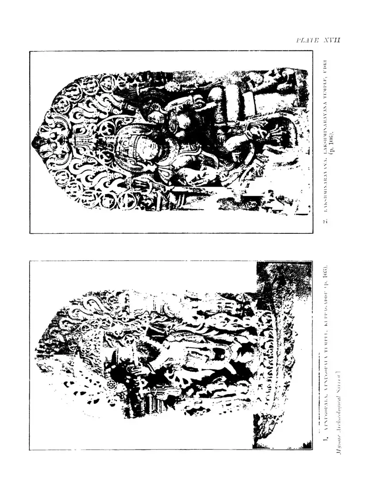
- VENCORADA, VENCORADA TEMPLE, KREGADDER Cp. 106) Mugsone Archepoplectonic
- LANSHMANARAYANA, LANSHMANARAYANA TEMPLE, CORRI (p. 106)
art. Many of the pillars are of the lathe-turned and bell-shaped type ornamented with scroll and beaded hangings on the bell. There are also flattened and indented pilasters and pillars with rhomboidal floral ornamentation and leaf designs among the ruins. The doorway of the garbhagriha has, besides the rhomboidal vertical band of flowers, a pilaster on each side rising on a low square base and having an indented flattened square shaft ornamented in eight compartments with leafy designs against a background of six flutes appearing on the pilaster. The lintel of the doorway is carved with a Gaja-Lakshmū group. The pedestal of the linga inside the garbhagriha is absent. When intact the temple must have been an elegant structure. Its outer walls have all collapsed, including many of the slabs belonging to the tower. But there appear here and there portions of square pilasters, cornices with uncarved dentil and other mouldings and kīrtimukha designs. The tower seems to have risen in two tiers of boat-shaped and square-shaped turrets.
Jain Basti
Šiva Temple; Lakshmī-Nārayaṇa Temple
No heading in the body: this section starts at its printed page (105).
To the west of the village is situated the ancient Jain basti. This structure consists of a garbhagriha, a closed vestibule and a navaraṅga. In plan the structure is square with indentations and flattened sides. The basement consists of two cornices of which the upper one is caves-shaped. The outer walls are plain except for a middle cornice band carved with a frieze of rhomboidal and four-petalled flowers interspersed, here and there, by more ornate ones having many petals or by flowers bearing obscene or other figures in their middle. The caves are a little straight-sided with upward dentil mouldings at the indentations. The parapet consists of two cornices of which the lower has dentil and cross-shaped mouldings. The tower is in the form of a stepped pyramid consisting of nine steps of cornices each of which has the dentil and uncarved cross-shaped mouldings. At the top the tower has a stone kalaśa. In front of the tower there is a projection over the vestibule whose front face has a well-carved smḥhalalāṭa with graceful creepers. Under the arch is the figure of a Jina seated under an umbrella and attended by chāmara-bearers.
The navaraṅga doorway and lintel are later additions. On either side of the doorway there are perforated screens. The jambs have a vertical band of rhomboidal and four-petalled flowers. The pilasters are cruciform and indented bearing leaf designs and bell mouldings. The four central pillars of the hall are bell-shaped and lathe-turned. The architraves have dentil mouldings superimposed by a row of rhomboidal and four-petalled flowers. The central ceiling of the navaraṅga is finely worked and consists of a large padma with five rows of sharp petals. A low but graceful pendant hangs in the middle. The other ceilings are flat.
On either side of the vestibule doorway there are turreted miches. In the south niche is an image of Shaṅmukha which has been brought from elsewhere. In front of Shaṅmukha are a linga and a Basava. Against the north wall of the navaraṅga is a beautiful Yakshī seated under a creeper. The vestibule doorway has
14 perforated screens on either side and well-worked jambs consisting of the usual ornamental vertical bands of flowers and creepers. On the lintel is the figure of a seated Jina attended by chāmara-bearers. Above the lintel is an caves-shaped cornice. On the upper lintel stand five Jina figures under a serpentine tōraṇa. The garbhagrīha doorway is also well worked like the vestibule doorway; but its lintel is uncarved. Inside the garbhagrīha there is set up a Gaṇēśa image which does not belong to this temple.
About a hundred yards to the east of the basti stands a towerless Śiva temple of the Chālukya period. In design and workmanship it looks like a Hoysaṭa square-shaped structure with indentations. There is no middle cornice on the outer walls as on the Chālukya structures. The front manṭapa has collapsed. Only the garbhagrīha and the vestibule are existing now. The outer walls are raised on a basement consisting of six cornices of which the fourth and fifth from the bottom have the cross-shaped and dentil mouldings which have been left uncarved. The outer walls are relieved at the indentations by pilasters which are right-angled, thin and plain. On the south, west and north outer walls, there are turret-bearing niches, the turrets being designed like the fully developed Dravidian gōpurams. The caves and the tower are absent. The vestibule doorway is plain with perforated screens at the sides. The lower lintel has the figure of a Gaja-Lakshmī in the middle and a seated two-handed Yaksha at either end. The upper lintel has a row of figures standing under a serpentine arch issuing from the fangs of makaras. These figures are Brahma, Śiva, and Vishṇu. The doorway of the garbhagrīha is well carved with the usual vertical bands on the jambs and with the figure of Gaja-Lakshmī on the lintel. The linga inside the cell is about 2\frac{1}{2}' high including the pedestal. At the entrance to the temple are the images of a Mahishāsuramardinī and a two-handed goddess standing in tribbanga.
At a distance of about a hundred yards to the south-east of the Īśvara temple stands the Lakshmīnārāyaṇa temple enshrining a good image of Lakshmīnārāyaṇa (Pl. XVII. 2). The front manṭapa has disappeared and the structure now consists of the garbhagrīha and vestibule only. The basement of the temple consists of four cornices and the outer walls have a middle cornice band bearing the rhomboidal and four-petalled flowers. The pilasters on either side of the garbhagrīha are bell-shaped and indented and decorated with leaf and petal designs. The image of Lakshmīnārāyaṇa in the main cell is about 3\frac{1}{2}' high and is seated on a padma pedestal. The group shows exquisite workmanship and minute details of carving. On the tōraṇa appear the ten avatārs of Vishṇu in the convolutions of a scroll band. Below the scroll is a serpentine arch and in the middle of the tōraṇa is a simhalalāṭa. The god sits with his face turned towards his consort who sits on his lap and is
Lakshmi-Narayana temple.
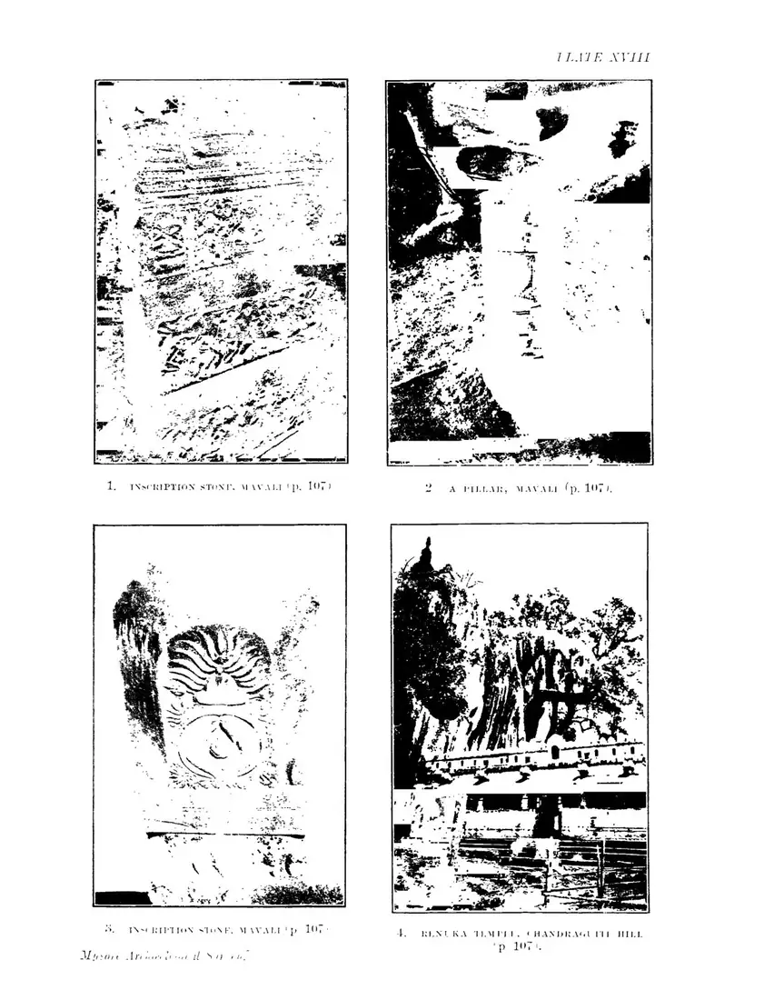
- INSCRIPTION STONE, MAVALI (p. 107)
- A PILLAR, MAVALI (p. 107)
- INSCRIPTION STONE, MAVALI (p. 107)
- RENUKA TEMPLE, CHANDRAGU ITI HILL 'p 1074
turned towards him. The god is four-handed holding ṣankha , padma , gadā and chakra . The goddess has scanty ornamentation but well-carved limbs, high breasts and thin waist. Her hair is tied up into a graceful broad knot behind her head. To the right of the god is the figure of a knieeling Garuḍa .
Part III: Study of Ancient Monuments and Sites › Shimoga DistrictMāvali
Inscriptions
No heading in the body: this section starts at its printed page (107).
In the village of Māvali which is situated at a distance of about six miles to the east of Sorab there are several inscriptions of the Rāshṭrakūṭa period. Of these, those illustrated in Inscriptions. Pl. XVII, 1 and 3 are important. The one illustrated in Pl. XVIII, 1 is particularly interesting, because it is of C. 797 A.D. and contains boat-shaped and square-shaped turrets which look very much like those met with at Māmallapuram. A pillar in front of this inscription (Pl. XVIII, 2) resembles the navaraṅga pillars at the Rāmēśvara Temple in Kubaṭur.
Chandragutti
Full notes on the monuments at Chandragutti are published in the Annual Report of this department for 1931, pp. 55 ff. Some of the monuments, sculptures and views are illustrated in this Report—please see Pl. XVI, 4, Pl. XVIII, 4, and Pl. XIX.
Part IV: Numismatiçs
COINS OF THE EASTERN CHALUKYAS (615-1070 A.D.)
(Pl. XX, 2).
Kubjavishņuvardhana
No heading in the body: this section starts at its printed page (108).
Kubjavishṇuvardhana (615-633 A.D.).
Bhuvanaikamalla
No heading in the body: this section starts at its printed page (108).
TYPE— Lion and Sceptre.
1. Ae. '65. Brass ?*
Šaktivarman
No heading in the body: this section starts at its printed page (108).
Obverse :—In triple border of two lines with intervening dotted line, large maned lion to right with open mouth, and left forepaw and tail uplifted; in front of it, floral creepers. Above, legend in early Chālukya characters :
Vi sha ma si dha
Reverse :—A hooked rod, perhaps, a sceptre.
Hultzech describes similar coins found by Thurston near Yelamanchili in the Vizagapatam District. But his statement that they are punch-marked, may not be correct. These coins appear to be a development of the Lion and Conch type described elsewhere under the Pallavas.
The i of the first letter shows a form which contrasts with the i of the fourth letter. A period of change is indicated also by the form of ma . The second letter is cha instead of sha and indicates Tamil influence. The last letter is clearly dha and not dhi which is the way in which it is found in the inscriptions.
Bhuvanaikamalla (?)
2. Similar to 1, but the legend is Ba va ne
It is doubtful if Kubjavishṇuvardhana had also the title Bhuvanēkamalla . The correct Sanskrit form of the word ought to be Bhuvanaikamalla . But very often the incorrect spelling with e instead of ai is found. The first letter on the coin is actually Ba and not Bu .
Śaktivarman (1000-1012 A.D.).
TYPE— Boar and Punch marks —(Varaha).
3. Ai. 1'4; wt. 66'5; large and thin.
Obverse :—Seven punch marks : in the centre is a boar to right with a lamp-stand on each side; on top a goad and an umbrella supported by
Ind. Ant. 1896. p. 322, and S.I.M.C. p. 312 and No. 1 on pl. XXX.
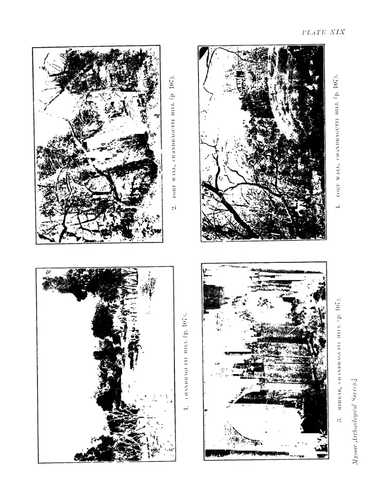
- CHANDRAGETTI BILL (p. 107)
- PORT WALL, CHANDRAGETTI BILL (p. 107)
- MIRROR, CHANDRAGETTI BILL (p. 107)
- PORT WALL, CHANDRAGETTI BILL (p. 107)
two chāmaras or flywhisks and below neck the Telugu-Kannađa letter Ra . Around near edge, seven punch marks with one Telugu-Kannađa letter in each punch:
Rāja Rāja
No heading in the body: this section starts at its printed page (109).
Śrī Chā lu kya cha(n) dra Sa 1
The overhead line of Sa is peculiarly placed.
4. Ai. 1'2; wt. 66'2 From Cheduba.
Similar to above with Ra (or 4) below boar and below Sa also Sa, 4 .
Śaktivarman, the East Chālukya king, had the title Chālukya-chandra.* The old method of punch-marking and stamping in repousse is noteworthy. Why the latter was done has to be explained.
Some of the great East Chālukya coins come from the Burman coast indicating that they had an overseas province there perhaps north of the province owned by the Chōłas in Arakan. They have been found also in the Kistna District near Muslipatam. There can be little doubt that they were issued in India.†
Rāja Rāja (1022-1063 A.D.).
TYPE A.—Boar and Punch marks.
5. Ai. 1'4; wt. 66'5; large and thin.
Obverse :—Seven punch marks; in the centre is a boar to right; with a lamp-stand on each side; a goad and an umbrella supported by two flywhisks or chāmaras on top and below neck the Telugu-Kannađa letter Ra . Around, near edge, six punch marks with one Telugu-Kannađa letter in each punch.
Śrī Rā ja rā ja Sa(m vat) 3 (figure 3, perhaps regnal year).
Round each punch is a bordering circle of dots far apart from each other.
Reverse :—The obverse marks indented on the thin plate.
The provenance of this coin is uncertain. The date would perhaps be 1025 A.D. Hultzch and Fleet describe other specimens with regrad years: 3, 4, 34, 35 and 37.
6. Ai. 1'3; wt. 66'8.
Obverse :—Similar to 4, but with the letter vi below boar and figure Sa 35 .
Reverse :—Similar to 5.
Rapson (Indian Coins) reads the figure as 35.‡ This specimen was found at Cheduba Island near the Burma coast.
7. Ai. 1'35; wt. 66'6. From Cheduba.
Similar to 4 and 5, but letter vi and figure Sa 4 .
2 R.I.C. p. 37.
† Hultzch I.A. 1896. 321.
‡ See also ibid .
Rājēndra or Kulōttunga Chōla
No heading in the body: this section starts at its printed page (110).
Rājēndra or Kulōttunga Chōla (as East Chālukya).
East Chālukya—Uncertain
No heading in the body: this section starts at its printed page (110).
TYPE—Tiger and Punch marks.
8. Ai. wt. 61 \frac{1}{2} grains. From I. A. 1896, p. 321.
Obverse :—Similar to 3, but instead of boar, tiger standing to right with sun and moon above; below head Telugu numeral 6. Near margin legend reading:—
Śrī Chō ļa nā rā ya ṇa
Madras collection.
9. Ai. wt. 61 \frac{1}{2} grains.
Similar to 7, but tiger to left.
Assigned to Kulōttunga Chōla (by Hultzch) as he had the title 'Rāja Nārāyaṇa.' Kulōttunga appears to have retained punch-marking at Veṅgi though die-striking was common in the Chōla country. The reduction of the weight from the East Chālukya standard is also noteworthy. The weight is a little less than that of the coins of Rāja Rāja Chōla.
East Chālukya—Uncertain.
10. Ai. 3; wt. 67.
Similar to 7. Figure on reverse.
11. Similar to 10; wt. 77.
12. Ai. 25; wt. 62.
Obverse :—Similar to 10, but ruder; and goad more like a spear.
Reverse :—Similar to 10.
Types A and B are varahas and type C is fanam of 1/10 the value. Die-striking was well known as seen from the smaller coins. Perhaps the smaller dies were used as punches on the varahas. But punching is very well done as the punches are correctly placed. How the incuse on the reverse was caused has to be explained.
13. Ai. Round. wt. 1'1 grs.
Obverse :—Lion and pillar with Sun and Moon.
Reverse :—Figure of lion to right; only the front portion is clear. Front paw raised up. The denomination of this specimen may probably be about quarter fanam. It is highly interesting to note the existence of such minute gold coins during the Chālukya period.
Part IV: NumismatiçsOLD COINS IN THE MYSORE PALACE TREASURY
Coins of the East India Company
1.
Double Fanam (5 specimens).
Obverse :—'Double Fanam' in English in outer circle and Persian legend in inner circle.
Reverse :—In outer band Tamil legend 'Iraṇđu Paṇam' and in inner circle, with a star above. legend in Telugu 'Reṇđu rūkalu.'
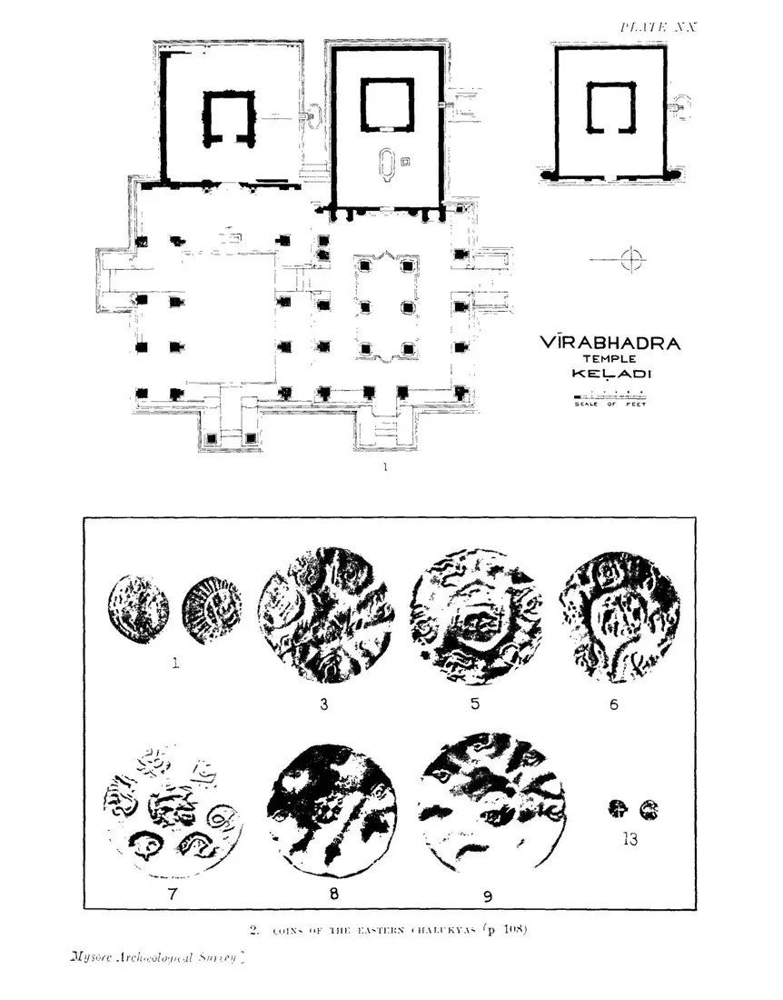
- COINS OF THE EASTERN CHALUKYAS (p 108)
2. Silver Half Varaha (Svāmi Pagōda).
The edge has rope milling.
Obverse :—In central circle a five-pointed star above and thirty stars around: in the field a nine-storeyed gōpura or tower with three kalaśas. Around outer circle English legend 'Half pagoda' and Persian legend in continuation.
Reverse :—In outer circle Tamil legend: XI 'Arappu varaham'; in Telugu: V 'Arpu Varahāni.' In inner field surrounded by five circles of dots stands a rudely shown deity with dotted representation of a chakra and a śaukha.
3. Quarter Svāmi Pagoda (15 specimens).
Obverse :—Similar to above; but smaller.
4. One-eighth Ruper (3 specimens).
Obverse :—1182 followed by Persian legend.
Reverse :—Rose mint mark with Persian legend.
5. Copper Quarter Anna.
Has the representation of a balance. It is usually called Takađi kāsu . Bears the date 1833 on the obverse.
6. Similar to above but with legend 'one quarter anna' instead of balance.
7. Silver One anna (146 specimens).
Having Persian legend on obverse and reverse and bearing Hijri date 1182, etc. Mint marks of lotus, rose, etc. Transverse milling.
Danish (or French) East India Company
Small, thick and rude.
Obverse :—Rude four-armed god standing with apologies for śaukha and chakra.
Reverse :—Double C's crossed in a monogram.
9. Danish Fanam. (3 specimens).
Obverse :—Four-armed god standing.
Reverse :—2 C's.
Vijayanagar coins
10. Dēvarāya.
Obverse :—Lakshmi-Nārāyaṇa with sun and moon in top field.
Reverse :—Three-line Nāgari legend reading:—
Śrī Pra tā pa Dē rā rā ya 11. Kṛishṇarāya.
Obverse :—Bālakṛishṇa.
Reverse :—Three-line Nāgari legend reading :
Śrī Pra tā pa Kṛi shṇa rā ya
12. Ikkēri Varaha. —(13 specimens).
Obverse :—Umā-Mahēśvara.
Reverse :—Nāgari legend reading :
Śrī Sa dā śi va
Mysore coins
Rewa State; Baroda State
13. Hydari Varaha. —Gold (36 specimens).
Obverse :—Umā-Mahēśvara.
Reverse :—In granulated field Persian He reversed as in Hyder's signature.
14. Tipa's Hydari Varaha. —Gold (15 specimens).
Obverse :—In granulated field reversed Persian He with figures 1 or 2 or 5 or some other symbos.
Reverse :—Persian legend with Hijri date 1112, 1114, etc.
15. Sultāni Varaha. —(23 specimens).
Obverse :—Persian legend.
Reverse :—Persian legend with date in Muludi 1225, etc.
16. Sultān Rupee. —(5 specimens).
Three-line Persian legend on each side with Muludi year 1214, etc.
17. Kṛishṇarāja Varaha. —Gold (94 specimens).
Wt. 52 grs.
Obverse :—Umā-Mahēśvara.
Reverse :—Nāgari legend : Śrī Kṛi shṇa rā ja
18. Kṛishṇarāja III of Mysore.—Silver Rāja Quarter Rupee.
Silver coin bearing the name of Shah Alam (Emperor) and the regnal year 65 with mint mark of crescent.
19. Kṛishṇarāja III of Mysore.—Śrī Kṛishṇa Quarter Rupee (3 specimens).
Obverse .—In ring of dots Kṛishṇa with butter, dancing.
Reverse :—Four-line Persian legend bearing the Hijri date 1216.
20. Krishṇarāja III of Mysore—Śrī Krishṇa One anna (gilḍa-haṇa).
Obverse: —Krishṇa with butter, dancing.
Reverse: —Kannaḍa legend: Mayili Haṇa.
21. Same as above—Thinner and flatter.
22. Krishṇarāja III of Mysore—Rāja Rupee (2 specimens).
Old type Mysore rupee bearing the name of Shah Alam and Krishṇarāja Vođeyar III with mint mark crescent and regnal year 44 on one specimen and 45 on another.
23. Same as above (8 specimens)—Rāja Rupee with mint mark crescent.
REWA STATE.
24. Gold (wt. 1 tola).
With transverse milling.
Obverse: —Above scroll 2 rearing lions holding a flag with streamers.
Reverse. —In inner circle Nāgari legend Rīva with Nāgari date 1806 (?).
Around Nāgari legend:
I-Śrī Ma hū rā ja Gu lāb Simha Bahadar Simha.
BARODA STATE
25. Sayyāji Rao Rupees (94 specimens).
Samvat 1951.
Obverse: —Bust of the Gaikwad with Nāgari legend: Śrī Sayyāji Rao Ma Gaikwad.
Reverse: —Nāgari legend: Êk rupya with sword and date 1951.
26. Copper One Pie.
Bearing date 1944 samvat.
15
Part V: Manuscripts
Letter of Virarājēndra Wođeyar; Rāja of Coorg
LETTER OF VIRA RĀJENDRA WODEYAR, RĀJA OF COORG.*
(C. 1799 A.D.).
(Pl. XX, A).
The document consists of an interesting long paper roll containing a letter written by Veer Rajunder Warriar (Vira Rājendra Wođeyar) of Coorg in about 1799 A.D. to the British and was discovered among the papers transferred from the Residency of Bangalore to the custody of the Record Office of the Mysore Secretariat. It is a roll about fifteen feet long composed of about twenty slips of paper, each eighteen inches in length and six inches in breadth. The lines on both pages extend to a length of 26.2". The paper is blue hand made foolscap and contains the water mark of a prancing horse with the English capitals 'A' 'G' below it. The letter is in Kannađa with about 422 lines on the first page and 311 lines on the second page, total 733 lines. At the end of the Kannađa writing appears a signature in English "Veer Rajunder Warriar." The rest of the second page contains some accounts in Mahratti Modi, Kannada and Urdu, which are no doubt a later addition. At the end of the second page are found the Kannađa words meaning 'the Coorg Raja's Kaifiath' with the figure '7'. The document is thus the authentic original copy of a memorial submitted to the English Government by the Coorg Rāja.
This document was prepared to furnish the reply and explanation of the Coorgs to a letter from the British addressed to them and complaining that an officer of
The following account is contained about the Coorg Rāja Vira Rājendra Vođeyer in the 'Narrative Sketches of the conquest of the Mysore,' London, page 18, footnote :—
"This friendly chief, when a boy was by the course of family feuds, a prisoner with Hyder Ally, who compelled him to become a Mussalman, with all the shameful ceremonies of initiation : he was enrolled among the Chaylas, or slave troops, and continued so under Tippoo Sultauin, till he made his escape in 1785. into his own dominions, where he instantly offered his service to the English : it was accepted, and he proved a most useful ally.—A British fugitive (who had also been lucky enough to effect his escape from Seringapatam) saw this Rajah in 1793. at his residence at Necknah. and describes him as a young man bukishly dressed in nankeen pantaloons. European boots, and a shirt made in the English fashion. In a short conversation, which turned upon the then recent dismemberment of Tippoo's dominions, he remarked. that 'the English had cut off the monster's right hand and feet, and he hoped to see them cut off his left ones too.' The prophetic chief has seen his hopes more than realized!—At the treaty of Seringapatam, in 1792, Marquis Cornwallis generously stipulated for the security of the gallant Rājah. Tippoo Sultan was irritated at the demand, and broke off the actual negotiation with our General, who thereupon began to renew hostilities : but Tippoo finding a reluctance in his troops to defend the capital was compelled to accept the dietated terms."
† This letter is perhaps the one written by Col. Close. the Resident of Seringapatam, with whom the Coorg Rāja was required to put himself in correspondence after the withdrawal of Capt.
PLATE XXA
LETTER OF VIRA RAJENDRA WODEYAR, RAJA OF COOR, (p. 114).
Mysere Archeologeal Sarcen.
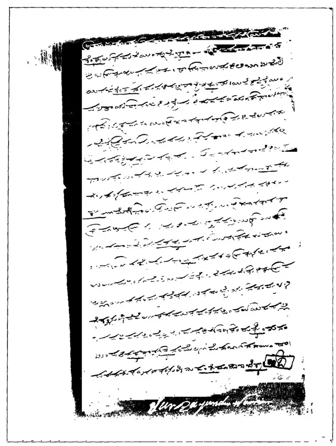
Coorg named Ísvaraiya plundered seventeen villages of the Mahārājanadurga taluk (in the Mysore territories) five days after the capture of Seringapatam by the British and carried away women, children, cattle, grain, silver and gold, bronze and copper vessels, etc., of the villages in the taluk. The letter from the British gave a list of the articles carried off by the Coorgs and required them to return these immediately without delay. Word was also sent through Captain Mahoney who had been Resident at Coorg to the same effect.* The Coorg Government sent this answer to that letter through an agent Karanika Subbaiya.†
The answer of the Coorgs may be divided into two parts, (1) that relating to the assistance rendered by the Coorg Government to the British in the conquest of Mahoney from Coorg. Col. Close does not seem to have ingratiated himself with the Raja.' The letter is dated 16th November 1799 and was addressed from Seringapatam. It ran as follows:—
" FROM
" Colonel Barry Close.
" To
" The Raja of Coorg.
" Lord Mornington has transferred me to Seringapatam as Commissioner of Mysore, of which you may be aware. A report reaches me from the Manjarabad frontier, that five days after the fall of Seringapatam your people made a predatory incursion into the Maharajadurga district, and plundered 17 villages, of women and children, cows and calves, gold and silver, rice and seed grain, and carried the spoil beyond the frontier. I enclose a list of the plundered articles. From the day of the capture of the capital Mysore belongs to the Company, but Maharajadurga belongs to Mysore: there is therefore no difference between Mysore and the Company. But you are an ally of the Company. You are therefore requested, without delay, to return every article contained in the list.
" I am told you wish to see Seringapatam: as the army will return to this town within a few days, you should inform me of your resolution.
" List of articles plundered by Coorgs in the Maharajadurga district:—67 women, 34 men, 11 boys, 10 girls, 1383 cows, 574 buffaloes, 834 oxen, 121 calves: 729 Kanthirai pagodas, 82 silver ornaments, 36 silver bracelets, 27 coral necklaces, 63 silver girdles, 54 pairs of golden carrings, 215 brass plates, 93 copper vessels, 67 guns, 6 horses, 155 sheep, 95 knives, 96 sickles, 90 axes, 5 brass pans, 7 iron chains, 72 bundles of clothes.
" This affair seems not to have been settled without considerable difficulties, in which the Raja implored the good services of his personal friends amongst the English"— Mysore and Coorg , Vol. III, LEWIS RICE, pp. 127-128.
* " Captain Mahoney who had been appointed Resident with Vira Raja a short time previous to the commencement of the last war with Tippu, communicated to the Raja the Earl of Mornington's proclamation of the war, dated Fort St. George the 22nd February 1799, and asked him in the name of the Company's Government to exert himself to the utmost of his power, as he would necessarily share the fate of the English if Tippu were victorious."— Cp. Mysore and Coorg , Vol. III, LEWIS RICE, p. 124.
† That Subbaiya was in the employ of the Coorg Raja is gathered also from Mysore and Coorg , Vol. III, LEWIS RICE, page 125. He and Bopu are said to have been sent on an expedition into the Tulu country when Seringapatam was besieged by the British.
Tippu's territories as per tahnama treaty entered into by the Coorgs with the British East India Company; (2) that relating to the explanation rendered by the Coorg Government for their alleged plunder of the Mysore territories against which the people of Manjarābād taluk had complained as represented by Dewan Pūrniah's men.*
The first part gives details of the part played by the Coorg Government in assisting the British army in the conquest of Tippu's territories.
It begins with a reference to the letter sent by the Governor-General of India, Lord Mornington, to the Coorg Rāja at the commencement of hostilities between the British and Tippu Sultan. No date is given for the letter. It states that as war was about to break out between the English and Tipu, the Bombay Governor, General Stuart (called in the manuscript Ishtol Saheb), was passing with his army through Coorg and that the Coorg Government should give him all help that he might require and that they should also be ready to fight to the utmost possible extent when asked by him to do so and that Captain Mahoney (called Mavini Saheb in the manuscript) would be appointed and sent as vakil or envoy of the English Government to Coorg and that the Coorg Rāja should assist the English Government as instructed by him. The Bombay Governor had also sent a letter to the same effect and both General Stuart and General Hartley arrived in Coorg with their armies. Captain Mahoney also arrived (as Resident) at Coorg to receive help from the Coorg Government. The Coorg Government rendered every service to the East India Company in accordance with the instructions given by these three.†
"Purniah and the Coorg Raja do not seem to have been on good terms from the beginning. In one of the letters addressed by the Coorg Raja to James Stevens he states as follows: "As to Purnaiya, he is and remains a Brahmin. His caste and mine dislike each other. In the time of Tippu he blackened my name and persecuted me, and now he is the master in the country; therefore he distributes the offices in the districts amongst his friends and relations, calumniates me through his district officers and other caste fellows with the English Government, and even submits a complaint against me, with a list of booty which my people are accused of having carried away in the north. Upon this Col. Close wrote to me, enclosing the list, and demanding that I should pay the compensation accordingly."
The letter continues as follows: "This Col. Close has never seen me, and does not know my history, nor does he understand Canarese. Thus he wrote me a letter through a Brahmin as if addressed to a slave. I enclose the letter of Col. Close and a copy of the list of booty. Upon the perusal of these papers you will understand all. . . . . Purniah lodges a complaint against me as if I had offended against the Company. Being thus dishonoured, I have no wish to live any longer. You know all my acts. I write to you with deep sorrow that all my services have been requited with such dishonour from the Company."— Mysore and Coorg , Vol. III, LEWIS RICE, p. 128.
† About the service rendered by him to the British he says in a letter addressed to James Stevens thus: "Convinced in my mind that all the enemies of the English would succumb and that the English Government would be victorious and that the British flag would float triumphantly in The manuscript next gives details of the war with Tipu carried on by the Bombay army and of the kind of co-operation rendered by the Coorg Government.
The first event mentioned is the battle which Tipu Sultan waged with the British at Siddhēśvarana-gaddige or Selasir on Wednesday, the first lunar day of the bright fortnight of Phālguna in the year Kālayukti. The Bombay army took up its ground between Ahmostenar and Siddhēśvar on the 2nd of March 1799 for the protection and augmentation of the large supplies which were then collecting at Virarājendrapet* under the friendly and assiduous co-operation of the Coorg Rāja and from this position General Stuart intended, on its approach, to form a junction with the army of Madras. Tipu Sultan “determined to strike a sudden and deadly biow, by attacking the army of Bombay, whilst yet outside the confines of his own territory and in the dominions of a British ally, the Coorg Raja; and for this purpose, taking with him the flower of his troops, amounting to a considerable force and attended by three of his sons and Meer Kummeruddeen Khan, he marched from his camp near Senapatam on the 28th of February, and moving rapidly in the direction of Periapatan arrived there on the 5th March. . . ..” ( Narrativ Sketches of the Conquest of Mysore , London, pp. 18-20).† The authority above quoted also states that at Siddhēśvar, about 7 miles distant from Periāpatna. General Stuart with the help of Major General Hartley defeated. on the 6th March, Tipu who retreated precipitately all the four quarters of the world, I served the Company from the beginning of the war in the hope to have to deal with friends like you and to be treated honourably.”— Ibid .
A depot had been formed at Virarajendrapet and measure had been taken to accumulate whatever his little State could afford— Ibid 123.
† “Tippu moved with a large force towards the frontier of Coorg, to oppose the Bombay army. He encamped near Periyapatna. The battle of Siddheswara ensued when three native battalions under Colonel Montresor and Major Disney, held their ground against the whole army of Tippu from 9 A.M. until 2 P.M., when the two fiank companies of His Majesty’s 75th and the whole of the 77th under Lieut.-Colonel Dunlop, led by General Stuart to their assistance, broke Tippu’s line within half an hour and obtained a complete victory with a comparatively small loss. That of Tippu was severe, numbering amongst the slain the famous Benki Navab, or Fire-prince, one of his best generals.
“The Raja of Coorg personally accompanied General Stuart, and witnessed for the first time the conduct of European troops in the presence of an enemy. There was a chivalrous air in all that proceeded from this extraordinary man, and some passages of his letter to the Governor-General giving an account of the operations of this day are tinged with his peculiar character.
“‘General Stuart.’ he writes. ‘marched with two regiments of Europeans, keeping the remainder of the army in the plain of Karidigodu; on approaching he ordered the two regiments to attack the enemy. A severe action ensued, in which I was present. To describe the battle which General Stuart fought with these two regiments of Europeans: the discipline, valour, and strength and magnanimity of the troops; the courageous attack upon the army of Tippu: surpasses all example in this world. In our shastras and puranas, the battles fought by Allaret and Maharut have been much celebrated, but they are unequal to this battle: it exceeds my ability to describe this action at length to your Lordship.’”— Mysore and Coorg , Vol. III. LEWIS RICE, pp. 124-5 to his camp at Periāpaṭṇa after this signal defeat and remained there until the 11th of March and afterwards retired into Seringapatam where he arrived on the 14th. (The date given in this manuscript, namely, Kālayukti Phālguṇa śu. 1 Wednesday corresponds to 6th March* 1799, but on that day Māgha bahula amāvasya tithi lasted till evening according to Svami Kannu Pillay's Ephemeris. However the local pañchāngams (calendars) may have given the tithi as Phālguṇa śu. 1).†
With the above description of the war in the words of the Coorg Rāja we may compare the account of the war given by Mir Hussein Ali Khan Kirmani:—
“At this time news arrived that a body of English troops from Bombay commanded by General Stuart, bringing a very large convoy of stores and provisions' was advancing by the route of Koorg straight towards Seringaputtun. The Sultan, therefore, immediately with the whole of his troops and artillery, leaving some of his chief officers to make head against the enemy (General Harris) marched off to attack that body, (Battle of Sedaseer) and in one day and two nights arrived in front of them and gave orders for the attack. The faithful Syud Ghuffar. who in bravery and loyalty had no equal, grappled with the enemy on one flank, while Hussein Ali Khan, the son of Nawab Kotbuddin Khan carried death and destruction among them on the other, raising the flames of war to the skys—the other Mir Miran. (General officers) also, in charging and defeating the enemy used their most strenuous endeavours, and with their swords, musketry, and artillery, put the infidels to flight:—and they giving way to the necessities of the time, and having no power to withstand the shock of the Sultan's blood-drinking lions, leaving part of their baggage behind them, slank into the jungle, and occupying its outlets remained there. The troops of the Sultan, however, still followed them, and vigorously attacking them again, strained every nerve to out and destroy them:—at this critical period Muhammad Ruza, Mir Miran, having by much entreaty obtained from the presence leave to charge proceeded with his division like a ragang lion towards the enemy, and stretching forth the arm of valour, it went near that the whole of the enemy's army was cut up and destroyed. The ambush of fate, however, having girded their loins to accomplish the defeat of the Mussulmans, a musket shot from the enemy accidentally struck the head of Muhammad Ruza, and he fell mortally wounded. His victorious soldiers took up his corpse and carried it to the Sultan, who directed it to be forwarded to the capital, while he occupied himself in the defeat and dispersion of this force:—when spies brought intelligence that the Bombay army had retired from further opposition, and had marched by the route of the Jungul to Kalicote.”— Translated by COL. W. MILFS, p. 259.
The date of the battle fought at Siddhesvara is also given as the 6th March 1799 A.D. in a letter of the Coorg Raja to James Stevens.— Mysore and Coorg, Vol. III, LEWIS RICE, p. 129.
† “The first impression on the Sultan's mind, was to renew the attack on the ensuing day, with augmented numbers, but in the meanwhile General Stuart had changed all his dispositions. The chief object for which this advanced post had been occupied, must necessarily cease to exist, during the presence in its front of the Sultan's main army; and the security of the abundant depot of provisions in the rear, accessible by other routes, rendered necessary a new and more concentrated disposition of the troops: and the evacuation of the post of Sedaseer, afforded to the Sultaun the faint colour of describing as a victory what every officer in his army felt to be an ignominious repulse. ‘Having (in the language of the Raja of Coorg) brought disgrace upon himself, he employed all his art and knowledge to recover his lost reputation: and having in this manner considered for five days, but not having taken up resolution to attack the Bombay army again, he marched on the 6th (the 11th of March) to Seringapatam: and thence, with no favourable ancipiations to oppose the progress from the east, of the more formidable army of General Harris.”— WILKS' History of Mysoor, Vol. II, pp. 347-8.
We next learn of the negotiations between the above British officers and the Coorg agents. The British officers stated at Siddhēsvar that war had begun between them and Tipu Sultan and in order to harass him it was necessary that the Coorg troops also should attack his army. But the Coorg chiefs stated that the English had guarded the road from Seringapatam to Coorg through Sidāpur, but there were other roads to Coorg and Tipu might harass them in various ways if they went to war against him. They also had to perform heavy duties to assist the English by guarding their boundaries against attacks by the enemy, provide supplies to the Bombay army at their camp and provide camp bazaars therein, bring grain from below the ghauts on two to three thousand bullocks, provide fodder for the military cattle, erect thatched huts for the preservation of the supplies of grain, look after the cattle, guard against the rumoured attack of the Kōṭe chief (Kōṭe Arasu) as an ally of Tipu* invading through Calicut and of the Manjarābād chief Krishṇappa Nāyak. Thus saying, the Coorgs declined to take part in a direct campaign against Tipu.
But in a few days a Brāhman named Sūrayya who later became Amil of Arkalgūd) who wanted to win the good graces of Tippu is stated (in the manuscript) to have attacked the villages belonging to Coorg named Torenur, Hebale and Sirangala with the help of the men from Arkalgūd, Basavāpaṭṇa and Koṇanūr in Tippu's territories and plundered the villages, burnt the houses, killed the ryots by tying their hands and feet and throwing them into the river Kāveri, and carried away women and children. The Coorg chief complained of this to the English officers, General Stuart, Hartley, Baden, and Captain Mahoney, the English Agent. The English retorted by saying that as war had actually broken out with Tipu and the Coorgs refused to go to war with and harass Tipu they had to suffer therefor and that they should at least strive to harass him thereafter. The Coorgs reluctantly had to agree to these words coming from three English officers and after providing for the garrisoning of the territory and helping the English with supplies of grain, etc., they sent a part of their army under Karaṇika Subbaiya to attack Sadri Mir Muhammad Khan, an officer commanding Koṭeyāla Taluk and another division under Ēsvaraiya to attack Heggaṭadēvankōṭe Taluk. Of these Ēsvaraiya's troops lost some men and met the English troops at Karaṭigode and told them that they got no booty as the villagers had run away with their cattle, etc., after hearing of the battle of Siddhēsvar.
* "Instigated by Tippu, and inated by the prospect of plunder, a body of Nairs was to invade Coorg as soon as the army proceeded to the eastward. To repel such an attack, and to secure the rear, especially the hospital which was erected at Virarajendrapet for the sick of the Bombay army whom General Stuart left in Coorg when he marched against Seringapatam. Vira Raja, who had offered to accompany the English army into Mysore, was poltely requested to stay behind with his Coorgs, who were rather troublesome auxiliaries to a regular army."— Mysore and Coorg . Vol. III, p. 124.
In the meanwhile General Lvayin Saheb(?) went to Periyāpatṭana and Tipu's troops cut off the contact of English troops from Bombay with those of General Lvayin at Periyāpatṭana. The Coorg troops were with great difficulty rescued and taken to the camp of the Bombay army. General Stuart felt glad to find that the Coorgs were saved and ordered them to transport the camp equipage of the English with the guns to Alabattapatṭana (?). The Coorgs accordingly transferred all the guns from Kerađigođe to Sidēšvarana-gadige. But General Stuart however said there was no need for these guns, etc., in their army and ordered that they should be taken back to Sidāpur and carefully guarded until the arrival of the English troops within the next 10 or 15 days in their midst to carry away the supplies. The Coorgs obeyed this order, went to Piriyāpatṭana and after supplying a load of rice, etc., on 2,000 bullocks of theirs to the Bombay army at Piriyāpatṭana returned to their territory at Virarājendrapet and took charge of the sick, cattle, etc. belonging to the English army left behind and tended them carefully at Virarājendrapet. They also transported their guns to Siddāpur and they were collecting grain, etc., for supplies to the English troops on their return.
But the Coorgs could not live in peace.* The ryots of the villages Torenūr, Hebbale, Sirangala, etc., who had been plundered by their neighbours of Koṇanūr, Arkalgūđ and Basavāpatṇa Taluks complained that they should be compensated for their wrongs. The Coorgs hence sent a small army division under Ēšvaraiya to those villages and engaged in the collection of supplies went to Mađakēri from Virarājendrapet. Ēšvaraiya marched upon Arkalgūđ, but the people of the Basavāpatṇa fort fired upon his troops and fought with them. Hence Ēšvaraiya was in danger, but with some difficulty he stormed the fort of Basavāpatṇa and plundered the fort and carried some women and children thereof to Coorg as reprisals for similar act done by the people of that village. Later the inhabitants made a cowl or treaty with them and he did them no further damage but remained in their midst.
The other Coorg army sent under Karaṇika Subbaiya to Kođeyāla Taluk encountered opposition from the Māpillas of Kumbala Taluk. Some looting was done. But seeing that Kođeyāla Taluk would belong to the English ultimately the Coorg army did not give them much trouble. But the garrison of Belarikōtę fought with the Coorgs and the fort was taken by the latter. Similarly the Coorgs encountered opposition at Kođiyāla. They however overcame this opposition and occupied the territory up to Bārukūr and Bāgvāđi and garrisoned it. But at Viragamba the Mapillas rising in rebellion under their leader Sadri surrounded the Coorgs with their
* "While Seringapatam was besieged, Vira Raja sent an expedition of Coorgs, under Subbaiya and Bopu, in to the Tulu country, the greater part of which was wrested from the Mussalmans and plundered in the Coorg style. His efforts in Mysore were not less vigorous or less successful. Baswapatna, Arkalgudu and other smaller towns were captured, and the Coorgs indulged themselves in the full gratification of every military appetite."— Mysore aud Coorg , Vol. III, p. 125. men numbering three to four thousand. The Coorgs in self-defence fell on them and killed four to five hundred of the enemies; the rest of the Mapillas ran away. They took prisoner a sardar named Koshatri Krishnarāy and sent him to their chief who took him to Captain Mahoney. Some plunder was obtained in this campaign. Similarly Ali Saba of Dantavara fought with the Coorgs and was defeated and some looting is said to have taken place. So also at Udyavara where the Māpillas under Sadri with the help of some Karnāṭakas, Mir Hamid Ali's 500 soldiers, and the Nairs of Munaru Kol, fell upon the Coorgs and taking refuge in a mosque fired shots at the Coorgs killing fifty to sixty of their people. Then the Coorgs set fire to the mosque, killed 700 to 800 of their enemy and drove away Sadri. Some looting was done here also. But elsewhere the Coorgs did no damage to the enemy's country but giving ' cowls ' to the people, garrisoned all the territory with Mangalore, Kodeyāla, Bārakūr, Bāgvāde and Hosangađi as boundaries and protected the territories against damages from Tipu's men.
Meanwhile the Coorg chief remained at Mađakeri. Suddenly he found that news from the English armies was not received for 8 days from Chaitra bahuļa 30, Saturday. The people of Tipu's territories spread rumours that Tipu sent his family, treasure, etc., to Banchanakalludurga (Chitaldrug) after setting fire to the magazine of gun-powder at Seringapatam when that fort was occupied by the English and thus causing them great damage. The Coorgs felt very sad at this news. But a week later, namely, on Saturday the 7th lunar day of the bright half of Vaišākha, a letter was received from Captain Mahoney announcing the death of Tipu and the conquest of his territories by the English and the return of the English troops of the Bombay contingent from Seringapatam. The chief was asked to go immediately to Virarājendrapet which he did on the next Monday.
Captain Mahoney informed the Coorg chief that 10 days before, namely, on Chaitra ba 30 Saturday (4-5-1799 A.D.) the English took Seringapatam after laying siege to it and that its territories were in the occupation of the English. The chief was instructed to stop all hostilities and make over all the territory newly conquered to the Government of the East India Company. He was also informed that a British engineer named Hamilton would arrive soon and fix the boundaries of the Coorg and British territories. The chief however complained that if he suddenly removed the garrisons stationed in Tipu's territories there would be anarchy in the district and wicked people who were partisans of Tipu might cause much disturbance and harm to Coorg. To this Captain Mahoney replied that the Coorgs might retain their control over the conquered territories until the arrival of the Bombay regiments, which would take place early and that after their arrival the Coorg chief was to take instructions from the General of the Bombay army regarding the future treatment of the territories.
Accordingly the Coorg chief sent instructions to stop all fighting or plundering
16
12:2 to Îsvaraiya and other officers stationed at Basavāpaṭṇa, Mangalūr, Bārakūr, etc. The letters containing his instructions took 2 to 7 days to reach his garrisons and officers. Îsvaraiya replied that beyond some damage including looting while taking the fort of Basavāpaṭṇa he did not cause any trouble to Tipu's territories and he promised to prevent any looting by his men. Similarly all the officers of Coorg reported that they did no looting after the receipt of instructions from their chief.
After this, General Stuart and Major-General Hartley came to Coorg and thanked the chief for his services in the war and they went to Cannanore. The chief helped the transport of the stores, supplies, etc., of the army from Coorg to Cannanore. He was advised regarding his garrisons in British territories, etc., to refer to Colonel Wiseman who was going shortly to Mangalore Taluk. General Stuart left for England after once again thanking the Coorg chief. General Wiseman shortly arrived in Mangalore Taluk and Karanika Subbaiya made over the places conquered by him to that officer and returned with his men to Coorg.
But there was some difficulty with regard to the Coorg general Îsvaraiya. Some Brahmans who had been formerly in the employ of Tipu went to him, presented some flags which they said they had brought from the British and asked Îsvaraiya to leave the country and go to Coorg territories as he had no business to remain in their territory and as the Taluk belonged to them (Mysore State). Îsvaraiya complained to his chief who ordered him to leave the Mysore territories out of respect for the British flag and return to Coorg, the boundaries of which would be shortly settled by Mr. Hamilton.* Îsvaraiya carried out the above order and returned to Coorg to look after the State lands therein.
The rest of the manuscript contains a resume of the events recited above from the time Tipu arrived in Siddhēsvarana Gaddige to the time that Captain Mahoney ordered the cessation of hostilities on Vaiśākha śu 10 Monday. The chief of Coorg pleads that the people of Coorg would only be responsible for any encroachments on their neighbour's territories or plunder in those territories after the receipt of instructions from Captain Mahoney and issue of the same to Coorg garrison officers. The Coorg people never went against the tahnāma or treaty entered into by them with General Abercrombie at Tellicherry requiring that the Coorg chief should allow the passage of British troops through his kingdom and give them every possible help. The British generals, officers, General Stuart, Captain Mahoney, etc., were all aware, says the Coorg chief, that the Coorgs never transgressed the terms of the treaty
“On the 23rd May General Harris, the Commander-in-Chief, sent a letter of thanks to Vira Raja, accompanied by a present of one of Tipu's own horses, one of his palkis and one of his howdas. The promise was also given that the country of Coorg would be restored to the Raja.”
— Ibid. , 125. entered into with the British or the orders issued from time to time by the British officers.*
Regarding the Mysore boundary complaints, the chief's explanation in the manuscript is to the effect that the people living in the Mysore State near the Coorg boundaries were always the enemies of the Coorg citizens even in the time of Tipu Sultan. They were always making false complaints to Tipu through Pūrnaiya'j against the Coorgs. Tipu however was afraid of the English interfering on behalf of the Coorg citizens and used to hold perfunctory inquiries into these complaints and report to the English. Now that Pūrnaiya was the 'sarvādhikāri' of Mysore, he was causing great trouble to Coorg. He also disliked the Coorg chief for his support of the English and hostilities against Tipu. But the Coorg government relied on their faith in God (Mahadēva) and trust in the British Government dedicating to their service all their kingdom, children, servants, etc. The ryots in the neighbouring taluks of Mysore (which originally belonged to Tipu) were enemies of Coorg and had demanded compensation for the alleged wrongs done to them.
The demands made by Pūrnaiya and his men from the Coorg chief for restitution for the losses incurred by his people from the depredations of the Coorgs were :‡ Women 67 ; men 34 ; little children 11 ; cows 1,383 ; bullocks 834 ; buffaloes 574 ; clothes 121 pieces ; cash Kantiroy varahas 729 ; trinkets, silver and gold 82 ; silver bangles 36 ; coloured bead necklaces 23 ; silver chains 63 ; gold ear-rings 54 ; bronze plates for dinner 215 ; pots (tambige-tāli) 93 ; guns 67 ; ear ornaments called muru 6 ; horses 6 ; goats 155 ; swords 115 ; Kodaga-gatti swords 126 ; battle-axes (kuradi kođli) 116 ; bronze plates big 5 ; iron chains 7 ; cloth bundles 72. All these were said to have been taken away by the Coorgs while looting the Mysore territories and had to be returned by the Coorg chief without delay as per list enclosed.
To this the Coorg chief's answer was as follows:—None of these things mentioned in the list sent to him had been brought by his people to him. More than
A certificate, dated the 12th October 1799 which was given by Capt. Mahoney was as follows:—
(1) The Raja has exerted himself to the utmost in the service of the Company.
(2) He has collected large supplies of rice and forwarded them to Seringapatam, thus saving the troops from famine.
(3) He has furnished 1,000 coohes to the army, and 2,000 men for the conveyance of the ammunition to Seringapatam, without receiving remuneration.
(4) He has furnished the Bombay army with more than 3,000 bullocks, 5 elephants, 3,000 sheep and 40,000 batties of rice.
(5) For all this trouble and expense he has accepted of no payment or reward.
(6) The Raja's conduct has afforded great satisfaction to the men and officers of the Bombay army many of whom have experienced his friendship.
— Mysore and Coorg , Vol. III. LEWIS RICE. page 130.
† See note 4 above.
‡ Cf. the list sent by Col. Close—Note 1 above. the regular soldiers of Coorg who fought with their guns the people who effected greater plunder in the Mysore territories were a regular set of plunderers who had no connection with the army but who followed in its wake. They might have obtained some clothes and metallic vessels. It is not known whether they also laid hands upon some silver and gold. Any way they said that they never knew anything about 700 varahas. They only brought a few bullocks, goats and sheep which the Coorg chief made over to the English Government. Regarding the women brought to Coorg, the Coorg chief said that on his instituting inquiries among his people, it was learnt that previously Tipu Sultan had caused 64,000 Coorgs to go to Seringapatam with their families by making them false promises and had imprisoned them there. After some time, only some men escaped and went to Coorg. Tipu Sultan thereupon gave away the women and children to his own followers and killed several of the Coorgs. He also castrated the male children. Even recently a Brähman named Sūraya of Arkalgūd had made incursions with the help of the villagers of Basavāpaṭṇa into the villages Torenūr, Hebbale, Sirangala of Coorg and plundered the property of the ryots of the villages and carried away their women and children. On seeing this, the Coorgs complained to the English and the English had told them that they might also loot in the enemy's territories and carry away what they could. Hence acting on this instruction, the Coorgs laid siege to Basavāpaṭṇa and in the fight which ensued several people died on both sides. The Coorgs who were victorious carried from there 50 to 60 women to Coorg. Of these, some had run away without the knowledge of the chief of Coorg, some were married with the chief's permission, some had died. Now the Coorgs could not send back the rest of the women as their women had been carried away by Tipu in large numbers and they had married many of these women and were living with them. The Coorgs complained that they could not now live without them. The Coorg chief could not force them to part with the women and would leave the matter to the good sense of the British who were the masters.
The Coorg Chief also stated that the Coorgs were ready to pay any sum that may be adjudged reasonably and would serve the British East India Company. Hence he pleaded that the English might take pity on the Coorgs, institute careful inquiries in the neighbouring taluks and only levy such sums from them as would be considered just and fair. The Coorgs were under great pecuniary difficulties and felt it difficult to pay up money to the English according to the demand made.* They had helped General Robert Abercrombie when he came with the Bombay army. They had also
3 With this we may compare what the Raja said to James Stevens in a letter: "If I am desired to pay, the question is whence to take the money? What my ancestors and myself accumulated, was spent when I twice faithfully supported the Bombay army. What after the peace of 1792 I obtained from my country, I annually made over to the Company. If anything remained, I expended it on the assistance to General Stuart. But in case I should have to pay according to this paid the sums demanded from them to the English on the conclusion of peace with Tipu. What little money they had saved out of their earnings and their ancestor's savings they had now spent in serving General Stuart of Bombay. Hence the Coorgs could not pay anything just then. But if 4 to 5 months' time was given, they would try to pay up the amount that was considered reasonable. The Coorg chief held bonds of Bombay Government for one lakh of rupees which he had deposited with them. The Coorgs would also go to their friends in the Bombay army and explain to them their difficulties and beg them holding their cheeks (gallahididu bēdikondare) for a loan of the money demanded. This amount they would repay somehow or do service under the officers and pay up out of the salaries received. Thus the Coorgs prayed for a reasonable demand in money and five months' time to pay it up.
Next, the Coorgs were asked to return six horses which they had procured (from Mysore districts). But they had never received any such horses or had any one taken such horses to them. They were not available with them. But if however the English compelled them to render accounts for the same they would have to obey, though there were no horses with them of the description given. But there were four horses with them presented by the English officers,* namely General Harris, General Stuart. General Hartley, General Robert Abercrombie. If the English required they would return these four horses and procure two horses with great difficulty and expense if time was given.
Next, the English had sent word to the Coorgs that they would gratily their desire to see Seringapatam soon after the English army would encamp at Seringapatam.† But the Coorgs replied that they were never anxious to see Seringapatam. They had desired to see the officers in the army of the English and Mysore Governments. But now that a charge had been foisted on them that they had disobeyed the orders of the English and plundered the Mysore territories, they felt no eagerness to go to Seringapatam. Since Captain Mahoney had been the Vakil of the English Government with them and knew all the acts of the Coorgs, the Coorgs would be glad to meet the English officers at Seringapatam if they were to be conducted there by Captain Mahoney from Coorg.
Lastly, the Coorgs stated that they held numerous letters from various responsible British officers, Lord Cornwallis of Bengal. Robert Abercrombie, Sir list, I must earnestly request, that as a compensation for my services, at least my honour remains intact. However, I am quite unable to pay. In Bombay I have one lakh of rupees deposited with the Company; this money I will send for and pay. If it does not suffice, I beg of you and the officers of the Bombay army to be my brothers. My honour is yours. If matters reach extremeties I will come to you, and all the officers together will perhaps give me the rest of the sum and leave to me only my honour. What you do for me, I will certainly repay. If you cannot help me, I must turn elsewhere to save my honour."— Mysore and Coonu. Vol III, pp. 129–30
See Note 12 above.
† Mentioned in the letter addressed by Col. Close to the Raja. See Note 1 above.
John Shore, Lord Mornington, Dunkin, General Harris, General Stuart, General Hartley, Malevar Commission Saheb (?). Also numerous letters from native rulers had been received in Coorg showing the great respect in which the Coorg chief had been held. But the letter received from the English now lacks in respect since it did not bear the signature of the officer who issued it and it was difficult to say whether it was not a mere creation of the munshi who wrote it. The great ambition of the Coorgs in serving the East India Company so long lay in their ardent desire that the Company's territories and wealth might increase daily, their flags might fly every where, the Coorgs might become friends of the English officers and hunt with them and remain under their protection, that the Coorgs might receive greater honour at the hands of the English and might live in peace and happiness on earth.* It is with this hope that the Coorgs helped the English even at the cost of their lives and they were glad to see with their eyes the defeat of their enemy and the occupation of his territories by the English. It was only natural for the Coorgs to hope that the English would treat them with great respect. It was well known to all the English officers in Hindustan how the Coorgs served the English cause to win their respect and regard. But now on account of the trouble caused by the Mysore taluk people the Coorgs did not feel happy even to live. They had sent Karanika Subbaiya to represent their cause. He would explain the matter orally and there would also be detailed account given in this paper. The Coorgs prayed that the English authorities would carefully examine all these and send a reply about the services to be rendered by the Coorgs.†
1 The same hope is expressed in Note 5 above.
† "In 1804, Capt. Mahoney arrived at Mercara with a letter from the Governor-General, informing Vira Raja that six maganis of the province of Canara would be transferred to him by Mr. Ravenshaw, the Collector of Mangalore, in return for the supplies he had furnished, and the services he had rendered to the British Government during the late wars. The districts thus added to Coorg on the western frontier yielded 24,897 pagodas.
"In the same year, at the suggestion of Major Mark Wilks, then Acting Resident at the Mysore Durbar, the boundary between Coorg and Mysore on the Subrahmanya side was finally adjusted by Mr. Peile and Major Mackenzie, to the Raja's entire satisfaction: 190 stones were ordered to be erected, with the Company's mark on the top, that of Mysore on one side and that of Coorg on the other."— Mysore and Coorg , Vol. III, p. 131.
Footnotes
p. 3 4. Do Hosabūdanūr.
p. 21 5. Do Nandiguđi—III class.
p. 27 3. For the vāhanas which are kept in the navaranga a separate room may be given in the prākāra.
p. 57 4. Do with polished black inside;
p. 57 6. Do with polished black on the inside;
All plates (20)
Click a plate to go to its place in the text; each plate there has links to the previous and next plate and back to this list.